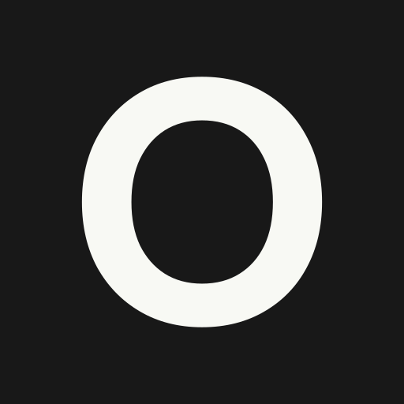
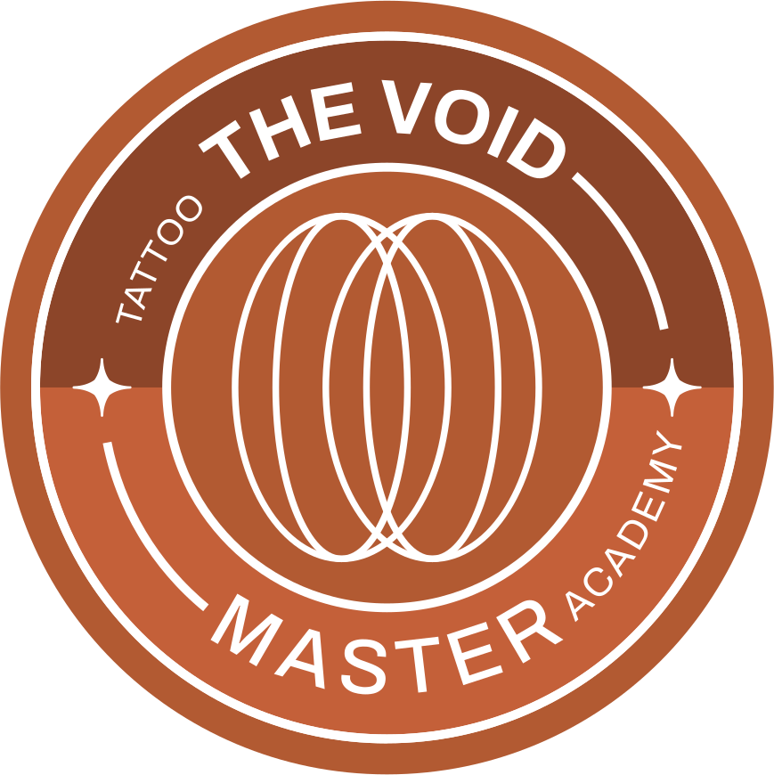
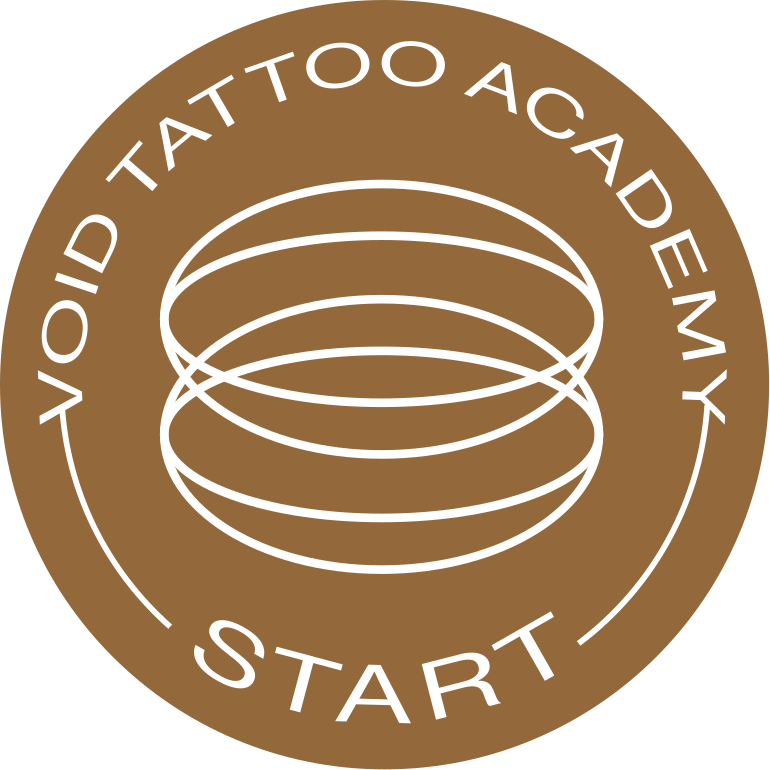
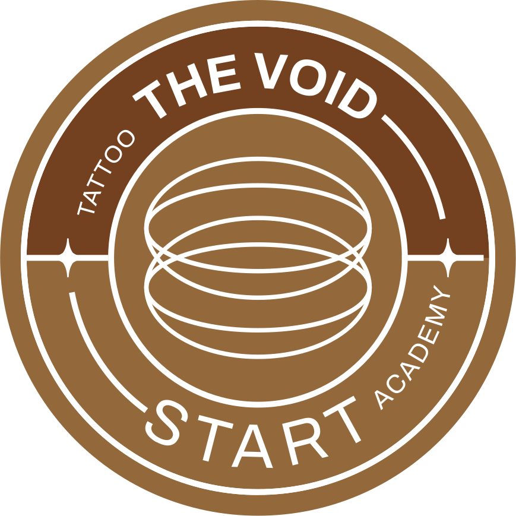
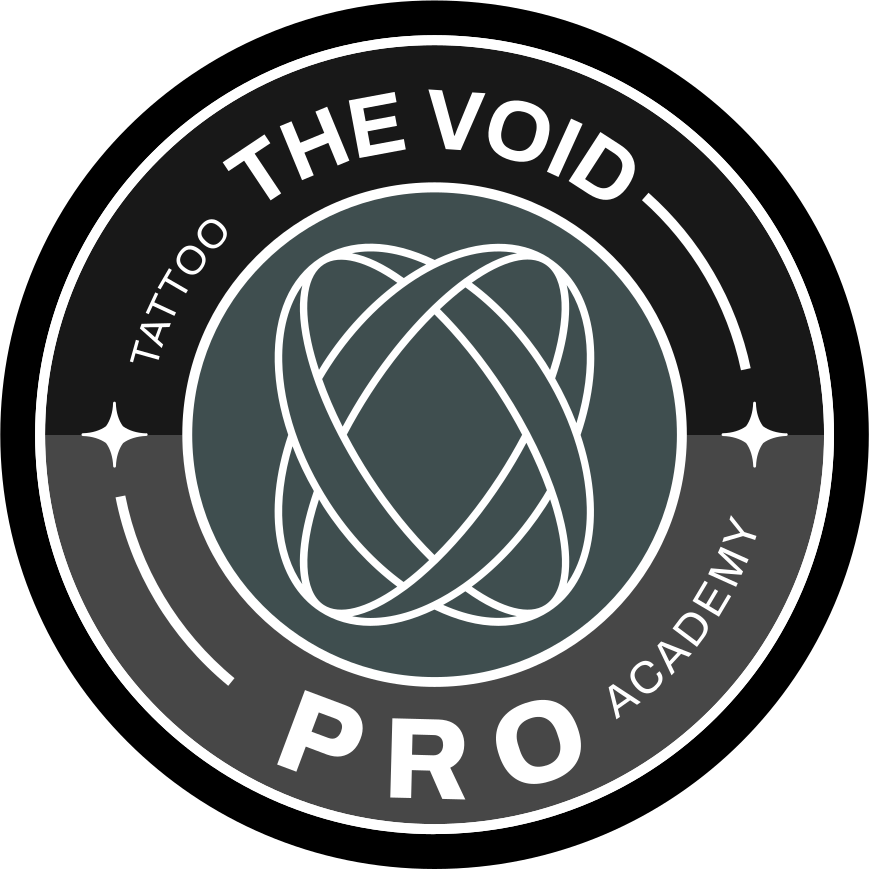
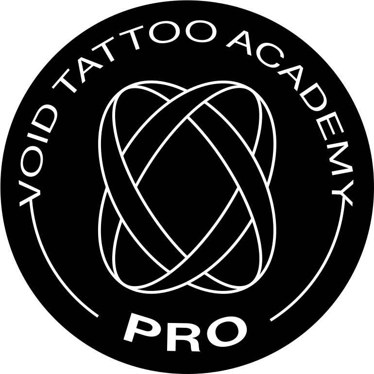

Social media e conteúdo
Posts, Reels, carrosséis, stories e legendas. Antes de abrir o editor, saiba para qual persona e qual crença a peça fala.

The VOID · Manual de marca01 · Capa e como usar este manual
The VOID Tattoo Academy · São Paulo · Brazil
Manual de marca · Versão 1

A arte que preencheA carreira que liberta
Como usar
Este manual é a fonte única da marca: tudo o que vai para uma peça, uma página ou uma mensagem da The VOID sai daqui ou dos arquivos que ele aponta, nunca da memória de quem produz.
Em um minuto
tokens.css ou dos arquivos em assets/.01.1
Seis frentes produzem para a marca todos os dias. Cada uma tem um caminho curto de leitura antes de começar; o resto do manual é consulta.
Posts, Reels, carrosséis, stories e legendas. Antes de abrir o editor, saiba para qual persona e qual crença a peça fala.
Peças, páginas, capas e materiais impressos. O logotipo é sempre arquivo; a cor e a letra saem dos tokens.
Ritos, bastidor, depoimentos, VSL e Reels. Imagem real e autorizada, com uma luz e as mãos como personagem.
Conversa, visita, proposta e boas-vindas. Uma ideia por mensagem e um pedido por etapa.
Aulas, ritos, feedback, certificado e área de membros. O progresso avança só com marco validado por vocês.
Site, LP, e-mail, dados estruturados e agentes. Valores vêm de tokens.json; a skill branding-the-void repete este manual sem regra nova.
01.2
As 36 seções têm a mesma anatomia. Quem conhece a ordem acha qualquer regra em segundos.
O seletor Tema, no topo (no celular, dentro do sumário), mostra o manual com a regra de cor de cada produto: Institucional, Start, Master, Pro e VOIDERS. É a mesma troca que um único atributo faz numa página real (seção 15).
01.3
Nove partes, na ordem em que uma peça é pensada: quem somos, as leis, a marca, a cor, a letra, os recursos, a imagem, a voz e os canais.
01.4
Toda marca de status tem ícone e palavra, nunca só cor. Elas dizem o que pode ir ao ar hoje e o que ainda espera a The VOID.
| Marca | O que significa | O que fazer |
|---|---|---|
| Decidido | Regra fechada pela direção de criação da GrowAI, com fonte citada. | Aplique como está, em toda peça. |
| Proposta | Leitura ou medida da GrowAI que ainda precisa da validação da The VOID ou da aureadesign.co. | Use como padrão até a validação; a pendência indicada diz quem decide. |
| Pendente | Depende de decisão ou dado da The VOID. O número remete à lista de 22 pendências (seção 36). | Não publique o item; siga o caminho provisório escrito ao lado. |
[P n] | Número da pendência no texto, por exemplo [P 15] para preços e dados de oferta. | Consulte a seção 36 antes de usar o item. |
{{A_CONFIRMAR}} | Campo de modelo que só existe preenchido com dado validado. | Nunca publique com as chaves; sem dado, o trecho sai da peça. |
| Assim não | Exemplo errado, mostrado para ensinar. Fica marcado no código como exemplo proibido. | Nunca copie para uma peça. |
[P 5] Ano de fundação. Até a decisão da The VOID, nenhuma peça usa "EST", "desde" ou contagem de anos de escola.
01.5
O manual tem versão e data. Regra muda no sistema, nunca dentro de uma peça.
| Versão | 1 · sistema Sala Escura |
|---|---|
| Especificação | 06/10/2026 |
| Edição do manual | out/2026 |
| Situação | Em aprovação |
| Base da marca | Plataforma de Branding, aureadesign.co, 2025 · Brand DNA da The VOID, set/2026 · Personas, set/2026 |
| Sistema e manual | GrowAI |
tokens.css e tokens.json.Exceção pontual não existe: peça que precisa fugir da regra volta para a direção de arte com o motivo escrito.
Especificação do sistema Sala Escura, 06/10/2026 (seções 2, 9.6, 12.8 e 17); plano de construção do manual, 06/10/2026; Brand DNA da The VOID, set/2026 (regra R08); Plataforma de Branding, aureadesign.co, 2025 (slides 14 e 23).
The VOID · Manual de marca02 · A plataforma
O que a The VOID é
Propósito, arquétipo, atributos, valores e diretrizes, como a aureadesign.co definiu na Plataforma de Branding. É o que a marca é antes de qualquer peça; a voz e as leis transformam isso em comunicação.
Em um minuto
02.1
O propósito é atemporal e não muda por campanha. O arquétipo orienta o papel de cada personagem na história.
Propósito
Transformar talentos em uma carreira de sucesso.
Arquétipo
Quem vence a própria dúvida é o aluno. A The VOID é "um artista que virou professor", que "atua como guia, não como guru" e "caminha junto". Na imagem, o protagonista é a mão de quem aprende; a escola entra como luz, método e comunidade.
Leitura da GrowAI
Comportamento
"Sempre em movimento, nunca com pressa. Age com firmeza sem perder a sensibilidade. Acolhe como família, ensina como mentora, celebra como comunidade."
Brand DNA da The VOID, set/2026, e Plataforma de Branding.
A marca como pessoa
"Ensina sem condescendência, acolhe sem perder a firmeza." Alguém que duvidou das próprias mãos, encontrou o caminho e hoje dedica a vida a provar que outros também podem.
Brand DNA da The VOID, set/2026.
02.2
Os atributos dizem o que a marca é. Não confundir com os atributos de voz (corajosa, inspiradora, técnica, próxima), que dizem como ela fala (seção 31).
"A marca acolhe como uma família."
Comportamento, Plataforma de Branding.
"Da escolha das palavras ao ambiente físico da escola, tudo comunica transformação."
Comportamento, Plataforma de Branding.
"Toda grade curricular precisa exercer uma função prática em sua base, seja ela artística ou empreendedora."
Negócio faz, Plataforma de Branding.
"Inspiramos com os pés no chão."
Tom de voz, Plataforma de Branding.
02.3
Cada valor tem um rótulo e uma frase da Plataforma de Branding. A linha "onde aparece" é a ponte para o sistema.
Acolhimento e inclusão
Onde aparece: boas-vindas da matrícula (M5), estados vazios da área de membros, fotografia de pessoas reais com autorização.
Comunidade e pertencimento
Onde aparece: VOIDERS, The VOID Talks, Formatura com Pele e a etapa M8.
Excelência e profissionalismo
Onde aparece: Crédito de Prova em todo número, roteiro de módulos, biossegurança visível na foto.
Liberdade e autonomia
Onde aparece: o pilar Arte como liberdade, o programa Pro e o fecho do manifesto.
Regra Inclusão é valor, não argumento de venda. Frase sobre públicos atendidos só entra em peça com casos reais e programa existente (conflito C23); até lá, fica no material interno.
02.4
O que a escola entrega e como ela diz isso. Os nomes em inglês da fonte ficam como rótulo interno; a copy pública é sempre em português.
Hub de aprendizado
"Um hub de aprendizado onde talentos se tornam carreiras em um ecossistema que prioriza a metamorfose pessoal e profissional."
O aluno no centro
"Produtos educacionais flexíveis com o aluno no centro, acompanhando seu processo de evolução e demanda."
Sempre na prática
"Toda grade curricular precisa exercer uma função prática em sua base, seja ela artística ou empreendedora."
"Existe um vazio dentro de você. Uma inquietação que não se acalma entre trabalhos convencionais e rotinas extremamente comuns. Esse vazio não é fraqueza. É um chamado. Um chamado para transformar sua arte em libertação, seu traço em futuro. Não importa de onde você vem ou o que disseram sobre seu sonho. O que importa é a coragem de começar. Venha como você é. Com seus medos, suas dúvidas, suas mãos trêmulas. Aqui, elas se tornarão firmes."
Trecho inicial do "Comunicação fala", Plataforma de Branding. O travessão do original virou ponto, a única intervenção permitida.
02.5
As cinco diretrizes dizem para onde a marca cresce; a terceira coluna mostra a parte do sistema que responde a cada uma.
| Diretriz | O que pede | Onde o sistema responde |
|---|---|---|
| 1 · Expandir para ser acessível | Novos formatos e ofertas complementares que não dependam de uma formação presencial robusta, como workshops online e comunidades. | Arquitetura de marca (seção 12). "Acessível" nunca vira argumento de preço (seção 31). |
| 2 · Enriquecer o ecossistema de aprendizado | Desenho, especialidades técnicas e gestão de carreira, com o aluno guiado a cada passo. | Mapa da Trilha (seção 23) e Método ARTE (seção 12). |
| 3 · Fortalecer a cultura interna | Processos de comunicação, feedback e desenvolvimento da equipe que reflitam os valores da marca. | Este manual e o checklist de aprovação (seção 07). |
| 4 · Humanizar e tangibilizar a comunicação | Histórias reais de transformação, além do aspecto técnico. | Fotografia real e autorizada (seção 29) e Crédito de Prova (seção 25). |
| 5 · Transformar comunidade em diferencial | Estruturar, fortalecer e nomear a comunidade como ecossistema contínuo de apoio e trocas. | VOIDERS (seção 12) e a etapa M8 (seção 32). |
Resolve a falta de estrutura e o despreparo técnico do mercado.
Resolve o medo, a insegurança e a solidão de quem está recomeçando ou mudando de vida.
Resolve a saturação de cursos genéricos e impessoais.
Resolve a falta de visão de futuro e a leitura da tatuagem como "bico".
Diferencial é argumento de conversa, nunca superlativo: nada de "a única" ou "a melhor" (seção 33).
Plataforma de Branding, aureadesign.co, 2025 (Plataforma de Branding, diretrizes estratégicas, diferenciais, comportamento e One Page Comunicação); Brand DNA da The VOID, set/2026 (seção 1); especificação do sistema Sala Escura, 06/10/2026 (seções 9.1, 11.1 e 16).
The VOID · Manual de marca03 · O manifesto
O que a The VOID é
O manifesto na íntegra, como está na versão atualizada da Plataforma de Branding, e as regras para recortá-lo em peças sem mudar uma palavra.
Em um minuto
03.1
Manifesto Completo Atualizado (slide 10 da Plataforma de Branding). A divisão em três atos é leitura deste manual, para orientar os recortes. O original fecha com a linha "THE VOID TATTOO." sobre a assinatura; aqui, como em toda peça, essa linha é o logotipo em arquivo (seção 08).
Ato 1O vazio
Existe um vazio dentro de você.
Um espaço sem nome, uma inquietação que não se acalma entre as paredes dos trabalhos convencionais e rotinas extremamente comuns.
Esse vazio não é uma fraqueza. É um chamado.
Ato 2O encontro
O chamado para uma jornada que transforma quem ousa dar o primeiro passo. Uma jornada onde sua arte não é apenas expressão, mas libertação.
Onde suas mãos não apenas desenham, mas constroem o futuro que você merece.
Não importa de onde você vem. Não importa se você nunca tocou em uma máquina. Não importa se o mundo disse que seu sonho era pequeno demais para ser perseguido.
O que importa é a coragem de começar.
Venha como você é. Com seus medos, suas inseguranças, suas mãos trêmulas. Nós as transformaremos em mãos firmes que desenham caminhos para a liberdade financeira, para o orgulho profissional, para uma vida onde trabalho e paixão são a mesma coisa.
Mas você não estará só.
Na Void, você encontra uma comunidade que caminha com você. Pessoas que acreditam nas mesmas verdades invisíveis. Que te inspiram, te acolhem, te desafiam. Aqui não existem estranhos, apenas família que ainda não se conheceu.
Acreditamos que a verdadeira transformação da tatuagem não está nas máquinas, mas nas mãos que as seguram. E nas histórias que se cruzam durante o processo.
Investimos nas pessoas por trás da arte, revelando e lapidando talentos únicos, para que cada traço na pele conte não apenas a história de quem a recebe, mas também de quem a cria.
Ao valorizar o artista além da técnica, elevamos uma profissão a um movimento cultural que humaniza uma arte muitas vezes reduzida ao seu aspecto mecânico.
Ato 3A metamorfose
A cada linha que você traça na pele, você reescreve sua própria história. A cada cliente transformado por sua arte, você preenche não apenas o vazio da tela em branco, mas o vazio dentro de si mesmo.
A tatuagem não é apenas uma profissão. É um ato de rebeldia contra o comum, contra o medíocre, contra o "contentar-se com menos".
Preencha o vazio. Pertença. Cresça. Conquiste sua liberdade.
A arte que preenche. A carreira que liberta.
03.2
Três recortes no tamanho do feed. A regra serve para qualquer outro trecho: frase literal, uma única palavra na voz em off e Créditos Finais no pé.
Manifesto
Esse vazio não é uma fraqueza.
É um chamado.
TATTOO ACADEMY · ® 2025 · SÃO PAULO · BRAZIL · PREENCHA O VAZIO
Manifesto
Venha como você é. Com seus medos, suas dúvidas, suas mãos trêmulas. Aqui, elas se tornarão firmes.
TATTOO ACADEMY · ® 2025 · SÃO PAULO · BRAZIL · PREENCHA O VAZIO
VOIDERS
Aqui não existem estranhos.
TATTOO ACADEMY · ® 2025 · SÃO PAULO · BRAZIL · PREENCHA O VAZIO
A Faixa de Manifesto usa a versão curta da frase, da Plataforma de Branding ("suas dúvidas", "Aqui, elas se tornarão firmes"); a versão longa do manifesto ("suas inseguranças") também vale, desde que inteira.
03.3
O manifesto é cena, não argumento de venda. Ele abre e fecha conversas; a oferta e a prova vêm em outra tela.
/sobre/ e e-mail de marco./sobre/; numa peça estática, nunca inteiro.Proposta Os trechos com "liberdade financeira" (Ato 2 do manifesto acima) e com "financeiramente independente" (fecho da versão curta do manifesto no Brand DNA e do key visual do Start, slide 32) ficam fora de anúncio e de qualquer página que receba tráfego pago, como a LP e a aula experimental. A regra é não prometer renda (seção 31), e a plataforma de anúncios lê também a página de destino. Esses trechos entram inteiros só na página /sobre/ e no orgânico.
Esse vazio não é uma fraqueza. É um chamado.
Seu vazio acaba hoje! Matricule-se já
03.4
Toda mensagem parte do que a pessoa acredita, erradamente, sobre si. O manifesto, o carrossel e a VSL contam a mesma história em três atos.
Ato 1
A pessoa sonha, mas não acredita. A peça nomeia a crença falsa com precisão, sem condescendência.
Em imagem: a primeira linha. Recurso que lidera: Esfera do Vazio e Palavra Sensível.
Ato 2
O vazio ganha nome e solução: a The VOID é o ambiente para se tornar quem a pessoa já quer ser.
Em imagem: a mão que guia a mão. Recurso que lidera: Mapa da Trilha.
Ato 3
Com método e comunidade, a pessoa cruza a linha. A prova é real, datada e autorizada.
Em imagem: o traço firme. Recurso que lidera: Marco do Aluno e Anel de Preenchimento.
| Público | Falsa convicção | A verdade que a marca revela |
|---|---|---|
| Iniciante (Start) | "Eu não sou capaz de viver da minha arte." | Talento é consequência de treino estruturado. O que falta não é talento: é estrutura, método e comunidade. |
| Avançado (Master e Pro) | "Preciso ser melhor tecnicamente antes de cobrar o que mereço." | Técnica sem posicionamento é invisível. |
O inimigo comum nunca é um concorrente: é o sistema que desvaloriza a arte, a mentalidade de que "arte não paga conta" (Brand DNA, regra R05). O fantasma é a versão de si que nunca tentou, o vazio que dá nome à marca.
Plataforma de Branding, aureadesign.co, 2025 (Manifesto Completo Atualizado, slide 10; Comunicação fala, slide 8; frases do território, slide 46); Brand DNA da The VOID, set/2026 (seções 4 e 6); especificação do sistema Sala Escura, 06/10/2026 (seções 6.8, 9.3, 12.1 LP21, 12.3 R4 e 13.3).
The VOID · Manual de marca04 · Para quem falamos
O que a The VOID é
Toda peça declara para quem fala e qual crença falsa ataca. As três personas do cliente são a base; as quatro personas da agência entram como subperfis.
Em um minuto
04.1
Resumo operacional do documento de personas. Faixa de renda e região são dado interno e não entram em peça nem em segmentação descrita em público.
Formação Start
"Eu quero, mas e se eu não for bom o suficiente?"
Start, depois Master
"Será que ainda dá tempo de recomeçar?"
Master e Pro
"Sei que sou bom. Por que ainda não consigo escalar?"
O que une as três: existe uma versão de si que elas querem ser, e uma crença falsa impede de agir. A The VOID não vende um curso; vende a permissão de se tornar quem a pessoa já quer ser (Personas, set/2026).
04.2
Os três títulos prontos para teste A/B, no campo de cada produto. A persona nunca aparece escrita na peça: ela está na crença que o título derruba.
The VOID Start
Talento é consequência de treino.

TATTOO ACADEMY · ® 2025 · SÃO PAULO · BRAZIL · PREENCHA O VAZIO
The VOID Start
Sua experiência é um diferencial, não um atraso.
TATTOO ACADEMY · ® 2025 · SÃO PAULO · BRAZIL · PREENCHA O VAZIO
The VOID Master
Técnica sem posicionamento é invisível.

TATTOO ACADEMY · ® 2025 · SÃO PAULO · BRAZIL · PREENCHA O VAZIO
Talento é consequência de treino.
Você não precisa de talento para começar
04.3
As quatro personas da Plataforma de Branding ajudam a afinar a mensagem dentro de cada persona canônica. Os retratos dos slides de persona não são de alunos e saem do sistema.
| Subperfil | Persona canônica | Grupo de público | Produto | Crença que a comunicação ataca |
|---|---|---|---|---|
| Sem equivalente | Gabriel | Jovens em busca de futuro | Start | "Eu não tenho talento suficiente para viver de tatuagem." |
| Joana, a Determinada | Camila | Reiniciantes com propósito | Start | A vergonha de recomeçar "tarde demais". |
| Lucas, o Persistente | Bruno, em parte | Tatuadores iniciantes ou estagnados | Master | "Preciso ser ainda melhor tecnicamente antes de cobrar mais." |
| Rafael, o Buscador | Bruno | Tatuadores iniciantes ou estagnados | Master e Pro | "Meu trabalho fala por si." (crença do avançado, Brand DNA) |
| Sylvia, a Visionária | Sem equivalente; cobre o Pro | Artistas autorais e empreendedores | Pro | "Para crescer, preciso tatuar ainda mais." Proposta |
Idade, profissão e história dos subperfis servem para entender a pessoa. Nunca viram personagem, nome ou rosto em peça pública.
04.4
Os grupos (clusters) da Plataforma de Branding, jul/2025, com o produto de entrada mais provável.
Start
"Qualquer profissional com mais de 25 anos em busca de uma transição de carreira, liberdade e propósito na arte."
Start
"Jovens talentosos, criativos e ambiciosos que encontram na tatuagem desde muito cedo uma carreira a ser seguida."
Master
"Buscam estrutura, posicionamento e segurança para evoluir na carreira."
Pro
"Tatuadores experientes que querem crescer como marca e negócio, ou empreendedores de outros ramos que buscam uma nova fonte de renda para viver de arte."
04.5
As quatro objeções das personas, com o caminho de resposta que cabe na lei. As mensagens prontas por etapa estão na seção 32.
| Objeção | Caminho da resposta | Nunca dizer |
|---|---|---|
| "É muito caro para mim." | Valor total, parcelas e condições iguais ao checkout [P 15]. A formação como investimento de carreira, sem número de retorno. | Promessa de retorno com número ou prazo ("o curso se paga em [N] meses"). |
| "Não sei se tenho talento." | Talento é consequência de treino estruturado. Depoimento real e autorizado de quem começou do zero, com Crédito de Prova. | "Mesmo sem talento você consegue." |
| "E se não tiver mercado?" | Ex-alunos trabalhando, com autorização e Crédito de Prova. Dado de mercado só com fonte publicada. | Superlativo de mercado sem fonte publicada ("o maior mercado do [país ou região]"). |
| "Vou pensar." | Turma com data e vagas reais (Barra de Turma) e um próximo passo concreto: visita ou conversa. | "Últimas vagas!" sem número, ou contador que reinicia. |
04.6
Cole este cabeçalho no briefing de toda peça, antes de escrever. Peça sem as sete linhas preenchidas não entra em produção (regra R03 do Brand DNA).
Peça: [formato e canal]
Persona: Gabriel | Camila | Bruno (subperfil, se houver)
Crença atacada: "[a falsa convicção, numa linha]"
Etapa: M1 a M8
Produto (data-estacao): chamado | start | master | pro | voiders
Ação única: [rótulo da biblioteca de CTA, seção 34]
Prova usada: [número com Crédito de Prova, ou nenhuma]Personas, set/2026; Brand DNA da The VOID, set/2026 (seções 3, 6 e 8); Plataforma de Branding, aureadesign.co, 2025 (personas, grupos de público e One Page de Experiência); especificação do sistema Sala Escura, 06/10/2026 (seções 9.5, 11.1 e 16, conflitos C9 e C21).
The VOID · Manual de marca05 · A ideia: Sala Escura
O que a The VOID é
O conceito que organiza o sistema: o preto da The VOID é a sala escura do cinema e do laboratório de revelação, o lugar onde a imagem ainda vai aparecer.
Em um minuto
05.1
"Esse vazio não é uma fraqueza, é um chamado." O preto não é ausência: é onde a imagem ainda vai aparecer. A escola existe para revelar e lapidar talentos, e o processo como ritual é a fotografia oficial.
Janela de LuzUma luz
Frase-guia interna · não é copy
No escuro, uma luz.Na luz, uma mão.Na mão, um traço.
05.2
Sete elementos e o papel de cada um na sala. Cada um tem seção própria: cor (13), tipografia (17) e recursos (21 e 23).
#181818O campo da marca, onde tudo acontece.
#F8F9F4A luz projetada: texto e botão no escuro, e a página de leitura no Modo Leitura.
#B25A32 e famíliaA luz quente que dirige o olho; a cor que a pessoa conquista ao entrar numa formação.
O letreiro: título, botão, crédito.
A voz em off: a palavra que sente. Enquanto a licença da Alga não chega [P 3], todo material público usa Newsreader Italic 300.
A película: o preto vira matéria. Amostra ampliada para ver a textura; na peça, ele fica a 6% no escuro e 4% no claro.
O caminho para preencher o vazio: Start, Master e Pro, como a aureadesign.co desenhou.
05.3
Topo de funil e aula experimental são monocromáticos. A cor de produto só acende quando a pessoa entra numa formação. Troque o produto para ver o círculo e a palavra de cada um.
Palavra Sensível de assinatura
o primeiro passoo primeiro traçoa sua identidadeo seu planofamília
Institucional, aula experimental, Talks e Convenção: Sala, Tela e grão. Nenhum círculo aceso, nenhum campo de cor.Start: o menor círculo acende em Ouro Velho; o campo de produto é o Campo Start, com texto em Sala.Master: o círculo médio acende em Terracota; o campo de produto é o Campo Master, com texto em Tela.Pro: o maior círculo acende em Névoa. O Pro é monocromático, com faixa Ardósia ou Chumbo.VOIDERS: acendem os círculos que a pessoa concluiu. Sem campo de cor.
[P 14] A aula experimental continua assinando com o logotipo Start, como está no ar, com o selo Start como próxima etapa e sem campo de cor. Passar a aula para o institucional é decisão da The VOID.
05.4
A metáfora do cinema gera regras; ela nunca vira fantasia de cinema. Só quatro recursos nomeados são dispositivos de cinema, e nunca dois na mesma peça estática.
02 / 07 · A viradaTalento é consequência de treino
Cena 01 · Take 3Ação! Sua carreira começa
05.5
Cada imagem da Sala Escura virou uma regra com teste. É por isso que o sistema se explica sozinho.
| Imagem da ideia | Vira regra | Onde |
|---|---|---|
| O preto é a sala | Campo escuro em pelo menos 60% da área de toda peça de marca (lei L4). | Seção 06 |
| Uma única luz | Um ponto de ênfase e uma cor de acento; o botão é a superfície mais clara da dobra (lei L5). | Seção 06 |
| O letreiro | Título em Archivo caixa alta, até 6 palavras (lei L6). | Seção 18 |
| A montagem | Cena, cartela e documento se alternam; nunca três do mesmo tipo seguidos (lei L8). | Seção 06 |
| A película | Grão do Vazio sobre todo campo escuro. | Seção 21 |
| O laboratório de revelação | Revelação: a foto surge do grão, uma vez por imagem. | Seção 25 |
| Os três círculos | Mapa da Trilha e Marcador de Estação, com o produto aceso. | Seção 23 |
Especificação do sistema Sala Escura, 06/10/2026 (seções 1, 2, 3.5, 6 e 17); Plataforma de Branding, aureadesign.co, 2025 (manifesto, slide 10; Esfera, slide 16; Mapa da Trilha, slide 30); Brand DNA da The VOID, set/2026 (seção 9).
The VOID · Manual de marca06 · As oito leis
As leis
Toda peça da marca, de um story a uma página de venda, passa por oito leis com teste de menos de um minuto. Quando duas brigam, vence a de número menor.
Em um minuto
06.1
Leia da esquerda para a direita e de cima para baixo: quanto menor o número, maior a força no desempate.
| O conflito | Vence | Como a peça fica |
|---|---|---|
| A prova declarada por terceiro pede link para a fonte (L2) e a página só pode ter um destino clicável (L1). | L1 | A fonte entra na régua como texto (nome e data da captura), sem link; o link completo mora na Ficha de Fatos do site. |
| O título de prova precisa do número e do que ele mede (L2) e passa de 6 palavras (L6). | L2 | O número e o que ele mede ficam; quem encurta é o título. Recorte, data e fonte descem para a régua de prova. |
| O rosto iluminado do hero quer foto limpa (L5) e a linha de apoio por cima dele não passa no contraste (L3). | L3 | O véu de 62% entra sob a linha de apoio; o rosto passa para o lado oposto ao texto e continua sendo a luz da cena. |
Proposta A regra de desempate está decidida; os três casos são a aplicação dela, escrita pela GrowAI para que ninguém precise reinventar a decisão no meio de uma entrega.
06.2
O que a peça diz e com que prova. São as duas leis mais fortes porque erram a pessoa antes de errar o desenho.
Talento é consequência de treino.
Quero conversar sobre minha turmaTalento é consequência de treino.
Saiba maisFale no WhatsAppcontagem da secretaria · turmas até [mês/ano] · registro interno
+1.234 alunos formadosdado de exemplo
06.3
Quem não consegue ler não decide. E quem não reconhece o escuro não reconhece a marca.
Turma de [mês] · começa em [data] · inscrições até [data]
Pó sobre Sala · 8,61:1Turma de [mês] · começa em [data] · inscrições até [data]
06.4
Uma luz dirige o olho; um letreiro curto diz para onde. As duas leis fazem a peça ser lida no tempo de um gancho.
Sua experiência é um diferencial.
Quero conversar sobre minha turmaSua experiência é um diferencial.
Quero conversar sobre minha turmaTécnica sem posicionamento é invisível.
Venha descobrir como a técnica certa pode mudar a forma como o mercado enxerga o seu trabalho
06.5
Duas formas e três tipos de tela. É pouco de propósito: a contenção é o que faz a marca parecer cinema e não modelo pronto.
Cinza: cena · Preto com linha: cartela · Claro: documento · Contorno: o pedido final
Três cartelas seguidas, marcadas em tracejado
Especificação do sistema Sala Escura v1 e estudos de apoio, GrowAI, out/2026; Brand DNA da The VOID, set/2026 (seções 1, 3, 8 e 9); Plataforma de Branding, aureadesign, 2025 (slides 10, 30 e 37).
The VOID · Manual de marca07 · Checklist de aprovação
As leis
Trinta e cinco perguntas de sim ou não, em cinco grupos. Um único "não" devolve a peça; o resumo copiado vai junto com o arquivo para quem aprova.
Em um minuto
07.1
Escreva o nome da peça, escolha a etapa da jornada e a persona, e responda os cinco grupos. O placar e o resumo atualizam a cada marcação.
07.2
Cinco respostas "não" que nenhum prazo justifica. Com elas, a peça não vai nem para a revisão de arte.
Promessa de renda com número ou prazo, ou menor de 18 anos em procedimento: a peça não sai, sem exceção. Nenhuma validação libera esses dois casos (seção 33).
[P 20] Menção a credenciamento de ensino: a peça volta antes de qualquer outra conversa e só sai com validação de advogado.
[P 22] Foto sem autorização por escrito para o canal: a peça espera a autorização ou troca a imagem. Banco de imagem e imagem gerada nunca substituem a foto real.
[P 15] Número sem registro arquivado: sai da peça. Nunca vira zero e nunca vai com colchete.
[P 8] Página de destino sem razão social e CNPJ no rodapé: falta um item obrigatório das regras de prova (seção 33), e a página espera o dado.
Especificação do sistema Sala Escura v1 e estudos de apoio, GrowAI, out/2026; Brand DNA da The VOID, set/2026 (seção 8, checklist antes de publicar).
Parte III · Marca · seções 08 a 12
A marca
The VOID · Manual de marca08 · O logotipo
Marca
Três desenhos (horizontal, vertical e de produto), cada um em preto e em branco oficiais, sempre pelo arquivo. O VOID é letreiro ajustado à mão e nenhuma fonte o reproduz.
Em um minuto
#000000 e branco #FFFFFF são as únicas versões oficiais. A cor da marca mora no selo e no campo, nunca no logotipo.08.1
Todos vieram da pasta "Nova IDV" entregue pela aureadesign, em contornos, sem texto vivo. Cada arquivo tem quatro partes: VOID, THE, ® e o descritor.
svg/void-horizontal-branco.svg3804 por 579 · a assinatura padrão sobre Salasvg/void-horizontal-preto.svg3804 por 579 · sobre Tela, Branco, Cinza 100, Areia e Névoasvg/void-vertical-branco.svg1937 por 1057 · THE / VOID® / TATTOO ACADEMYsvg/void-vertical-preto.svg1937 por 1057 · avatar, capa de PDF, peças altassvg/void-start-*.svg3620 por 579svg/void-master-*.svg3894 por 579
svg/void-pro-*.svg3745 por 578Cada desenho existe também em PNG de alta resolução, PNG para web e WebP com fundo transparente (pastas png/alta, png/web e webp). Use SVG na web e em vídeo; PNG só onde o programa não aceita vetor.
08.2
A unidade é H, a altura das maiúsculas do VOID. Tudo no logotipo se relaciona com ela, e a área de proteção (seção 09) sai daqui.
Deslize o diagrama para ver todas as cotas
| Medida | Valor no vetor | Relação |
|---|---|---|
| H, maiúsculas do VOID | 551,81 | 1 H |
| Haste do I e do D | 110,36 | 0,2 H |
| X, maiúsculas do THE e do TATTOO | 194,22 | 0,352 H; cerca de um terço da altura do arquivo |
| Altura do ® | 85,93 | 0,156 H, alinhado ao topo do VOID, a 8 unidades do D |
| Vão do THE ao V | 159,37 | 0,289 H |
| Vão do D ao TATTOO | 172,10 | 0,312 H (o ® mora nesse vão) |
| Largura do VOID | 1748,49 | 3,17 H |
| Medida | Valor no vetor | Regra |
|---|---|---|
| Vertical: THE e VOID | X = 184,14; H = 523,17 | Mesma relação de 0,352 H do horizontal |
| Vertical: TATTOO ACADEMY | 103,5 | 0,198 H |
| Vertical: respiros entre linhas | 107,5 e 109,0 | Cerca de 0,2 H, a largura da haste do I |
| Produto: START, MASTER, PRO | 194,22 | Mesma letra e mesma altura do TATTOO |
| Produto: vão do D ao descritor | 191,1 | Um pouco maior que no TATTOO (172,1) |
08.3
O THE e o TATTOO são Archivo de peso 400. O VOID não é: é um letreiro desenhado a partir do Archivo e ajustado letra a letra.
O VOID tem peso perto de 650 e largura perto de 97,5, com o V mais largo, o D mais estreito e as letras bem mais juntas que em qualquer fonte: o V e o O chegam a se sobrepor 18,5 unidades, o O e o I ficam a 42,7 e o I e o D a 60,2. O Archivo mais pesado e mais largo que existe coincide com só 48% do desenho. Digitado, o logotipo vira outra marca, mesmo que pareça igual de longe.
<img src="assets/brand/svg/void-horizontal-branco.svg" width="158" height="24" alt="The VOID Tattoo Academy">
<img src="assets/brand/svg/void-start-branco.svg" width="150" height="24" alt="The VOID Start">
<img src="assets/brand/svg/void-master-branco.svg" width="161" height="24" alt="The VOID Master">
<img src="assets/brand/svg/void-pro-branco.svg" width="156" height="24" alt="The VOID Pro">Medidas acima no tamanho mínimo de tela (24 px de altura). Em peça de redes, o horizontal branco entra com 300 u de largura no rodapé.
08.4
O cinza entra na marca só como Eco do VOID, o logotipo ampliado e desfocado atrás da cena (seção 21). Nunca como cor de assinatura.
| Versão | Uso | Status |
|---|---|---|
Branco #FFFFFF | Oficial. Sobre Sala, Nanquim, Bastidor, Coxia, campos de produto e foto com véu | Decidido |
Preto #000000 | Oficial. Sobre Tela, Branco, Cinza 100, Areia e Névoa | Decidido |
Grafite #181818 e offwhite #F8F9F4 | Só uso interno e técnico (favicon, avatar, placa de e-mail): trocam apenas o preenchimento | Pendente |
[P 11] Uso das versões grafite e offwhite no lugar das oficiais, com a The VOID e a aureadesign. Até a validação, peça pública sai só em preto ou branco.
Especificação do sistema Sala Escura v1 e estudos de apoio, GrowAI, out/2026; medidas do arquivo marca.json do repositório; vetores da pasta "Nova IDV", aureadesign, 2025.
The VOID · Manual de marca09 · Área de proteção, mínimos e fundos
Marca
Quanto espaço o logotipo e o selo pedem, de que tamanho para baixo eles deixam de existir e sobre quais fundos podem entrar.
Em um minuto
09.1
Medida a partir do desenho, não da caixa do arquivo. No horizontal, X vale 194 unidades, cerca de um terço da altura do arquivo. Diagramas gerados pelo motor de formas com as medidas do marca.json.
Proposta A apresentação de rebranding não define área de proteção nem tamanhos mínimos. Os valores desta seção foram derivados dos vetores pela GrowAI e aguardam validação.
[P 11] Área de proteção e tamanhos mínimos, com a The VOID e a aureadesign.
<div data-vforms='{"forma":"area-protecao","versao":"horizontal"}'></div>
<div data-vforms='{"forma":"area-protecao","versao":"selo","produto":"pro"}'></div>09.2
Os desenhos abaixo estão exatamente no mínimo de tela. Abaixo disso, a haste do THE passa de 1 px e o texto dos selos deixa de ser lido.

| Peça | Tela | Impresso | Critério |
|---|---|---|---|
| Horizontal e de produto | 24 px de altura (cerca de 158 px de largura) | 6 mm de altura | Haste do THE com 1 px e maiúscula do THE com 8 px; no impresso, 2 mm |
| Vertical | 80 px de altura (cerca de 147 px de largura) | 16 mm de altura | TATTOO ACADEMY com maiúscula de 7,8 px; no impresso, 1,5 mm |
| Selo completo | 200 px de diâmetro | 40 mm | TATTOO e ACADEMY têm cerca de 2,9% do diâmetro; abaixo disso, selo simples |
| Selo simples | 96 px | 20 mm | Texto circular com cerca de 6,5% do diâmetro; abaixo disso, não existe selo |
| Abaixo dos mínimos | Favicon (O do VOID) ou Rótulo de Produto | Rótulo de Produto | Barra fixa e lower third nunca levam selo |
09.3
Logotipo e selo são isentos do critério de contraste de texto (as diretrizes de acessibilidade excluem logotipos), por isso o branco oficial fica sobre o Campo Start, como no slide 31. Mesmo assim, há fundos onde nenhum dos dois oficiais fica firme.
Sobre foto, o véu de 55% é calculado no pior pixel possível, o branco puro (seção 22). O Grão do Vazio nunca vai por cima do logotipo.
Especificação do sistema Sala Escura v1 e estudos de apoio, GrowAI, out/2026; medidas do arquivo marca.json do repositório; Plataforma de Branding, aureadesign, 2025 (slide 31).
The VOID · Manual de marca10 · Usos proibidos
Marca
Os erros mais comuns em peças e apresentações, desenhados para serem reconhecidos de longe. Qualquer um deles devolve a peça.
Em um minuto
10.1
Cada quadro é o erro aplicado ao arquivo oficial, nunca uma imitação dele. Os exemplos ficam marcados como proibidos e não podem ser copiados para peça alguma.
TATOO ACADEMY
Também fica fora: o logotipo antigo, serifado, inclusive em pôster ao fundo de uma foto; e o logotipo em cinza como assinatura. O cinza só entra como Eco do VOID (seção 21).
Especificação do sistema Sala Escura v1 e estudos de apoio, GrowAI, out/2026; Plataforma de Branding, aureadesign, 2025 (slides 13, 33, 34, 38 e 41).
The VOID · Manual de marca11 · Os selos
Marca
Cada formação tem um selo completo e um simples, na cor do produto. O selo é onde a cor da marca mora: o logotipo continua preto ou branco.
Em um minuto
11.1
Os seis arquivos oficiais, renderizados pelo motor de formas com os mínimos aplicados. As cores são as dos vetores, sem ajuste.
#93693B, faixa de cima Ouro Fundo #734120#B25A32, faixas Terracota Funda e Terracota Viva#3F4E4FO completo tem anel branco duplo, THE VOID em arco na faixa de cima (com TATTOO menor), o nome do produto na faixa de baixo (com ACADEMY menor), duas estrelas de quatro pontas no horizonte e o símbolo no miolo. O simples é um círculo de cor única com VOID TATTOO ACADEMY em volta, o nome do produto entre dois arcos e o símbolo no centro.
11.2
Duas faixas elípticas em cada selo, medidas no vetor. Levadas para a composição, viram as Órbitas da Trilha (seção 23).
Proposta A leitura base, crescimento e domínio é interpretação da GrowAI; a agência não declarou um significado para os símbolos. Pode ser usada em texto interno e em apresentação, nunca como fato da marca.
11.3
Duas posições possíveis, e uma área de proteção de 12,5% do diâmetro em volta do círculo.
Logotipo de produto, 1 X de distância (tracejado) e o selo simples. É a assinatura do Start e do Master; o Pro assina com a pílula da seção 25.

Descubra sua identidade artística.
| Item | Tela | Impresso |
|---|---|---|
| Selo completo | 200 px ou mais | 40 mm ou mais |
| Selo simples | 96 a 199 px | 20 a 39 mm |
| Abaixo de 96 px | Rótulo de Produto em texto ou favicon | Rótulo de Produto |
| Área de proteção | 12,5% do diâmetro em volta | 12,5% do diâmetro em volta |
11.4
A base do selo Pro é Nanquim, quase igual à Sala (1,18:1). O simples some no fundo; por isso ganha um disco Coxia com folga de 4% do diâmetro, sem tocar no vetor.
#2B2B2B. Teste: o contorno do disco precisa ser percebido com a tela a 50% de zoom.11.5
O selo marca uma formação. Fora disso, ele vira enfeite ou promessa, e as duas coisas a marca não faz.

Especificação do sistema Sala Escura v1 e estudos de apoio, GrowAI, out/2026; medidas do arquivo marca.json do repositório; Plataforma de Branding, aureadesign, 2025 (slides 31 e 37).
The VOID · Manual de marca12 · Arquitetura de marca e co-assinatura
Marca
Quem ganha logotipo, quem ganha selo, quem assina só em texto e como um evento ou a comunidade aparecem ao lado do logotipo sem redesenhá-lo.
Em um minuto
12.1
Do nome da escola ao nome de um material, cada nível tem um jeito de assinar. A coluna da direita mostra a assinatura real de cada um.
Marca-mãe
"The VOID" no texto; "The VOID Tattoo Academy" em dados estruturados, Google, imprensa, rodapé e primeira menção; "a Void" só em texto corrido, no tom coloquial.
Primeira menção em bio, vídeo e release: "The VOID Tattoo Academy, escola de tatuagem na Vila Madalena, em São Paulo".
Formações
No texto: "formação Start", "formação Master" e "programa Pro". "The VOID" vai na frente na primeira menção da página. Formação, nunca "curso", exceto onde a natureza legal pede "curso livre".
Método
Artista, Tatuador, Empreendedor. A sigla é explicada na primeira menção. Nunca ganha logotipo nem selo.
Porta de entrada
"Aula aberta" como alternativa. Assina com o logotipo do Start, como está no ar, e mostra o selo Start como próxima etapa, sem campo de cor. "Gratuita" é informação, nunca o argumento principal.
Eventos
"The VOID Talks" tem grafia única. Assinam por co-assinatura. Página de evento não traz oferta de formação.
Rituais
Nome em Título de Seção, a frase do slide na voz em off e o selo da formação do aluno. Nunca logotipo próprio; "na The VOID" na primeira menção pública. Ritos novos só entram depois de aprovados [P 6].
Comunidade
Plural para a comunidade, singular para a pessoa, sempre em caixa alta. Assina por co-assinatura, sem logotipo próprio.
Materiais
Nome em texto, só depois de confirmar que existem [P 7]. Nome de produto, desafio ou evento nunca traz valor em dinheiro.
Descritores pendentes
Aparecem no sistema modular da apresentação (slide 13), mas não vieram como arquivo e não têm uso definido. Não usar até decisão [P 7].
[P 14] Manter a aula experimental com o logotipo Start (decisão atual) ou passar para o institucional.
12.2
O slide 31 da apresentação, reconstruído com os arquivos oficiais e os tokens: o campo na cor do produto, o logotipo branco, o selo e o nome do produto na voz em off, gigante, a 8%.
| Formação | Campo e texto | Logotipo e selo |
|---|---|---|
| Start | Campo Start #B5966B, texto em Sala (6,38:1) | Logotipo branco oficial, como no slide 31; selo Start |
| Master | Campo Master #76432B, texto em Tela (7,61:1); cartela opcional em Terracota Noite | Logotipo branco; selo Master |
| Pro | Sala com faixa Ardósia ou Chumbo; o Pro é monocromático | Logotipo branco; selo Pro (simples com disco Coxia) |
O Campo de Produto é exceção nomeada ao orçamento de cor: no máximo uma tela a cada cinco num carrossel e uma peça a cada seis no feed (seção 15). Os marrons dos campos foram amostrados por pixel no slide 31 e aguardam o arquivo de tokens do cliente [P 4].
12.3
O descritor fundido ao logotipo só existe nos arquivos oficiais (TATTOO, TATTOO ACADEMY, START, MASTER, PRO). Qualquer outro nome entra ao lado, separado por um fio.
Deslize o diagrama para ver todas as cotas
| Parte | Regra | Valor no vetor |
|---|---|---|
| Logotipo | Horizontal oficial, branco ou preto, inteiro | 3804 por 579 |
| Espaço antes do fio | 1 X, medido a partir do fim do TATTOO | 194,22 |
| Fio | 1 px na cor do texto, com a altura do VOID | de 12,19 a 564 |
| Espaço depois do fio | 1 X | 194,22 |
| Nome | Archivo 700, largura 112, caixa alta, maiúsculas com a altura das do THE, na mesma linha de base | corpo 283 (maiúscula 194,22), linha de base 381,05 |
<svg viewBox="0 0 5200 579" role="img" aria-label="The VOID Tattoo, TALKS">
<image href="assets/brand/svg/void-horizontal-branco.svg" width="3804" height="579"/>
<path d="M3948.22 12.19V564" stroke="#F8F9F4" stroke-width="1" vector-effect="non-scaling-stroke"/>
<text x="4142.44" y="381.05" fill="#F8F9F4" font-family="Archivo, Arial, sans-serif"
font-size="283" font-weight="700" style="font-variation-settings:'wdth' 112">TALKS</text>
</svg>Para outro nome, troque o texto e alargue o viewBox pela largura do nome (TALKS ocupa cerca de 1042 unidades; VOIDERS, 1464; CONVENÇÃO, 2130). O corpo 283 vem da maiúscula do Archivo, que mede 0,686 do corpo.
12.4
Duas frases literais, iguais em bio, vídeo, release, rodapé e dados estruturados. Copie; não reescreva.
The VOID Tattoo Academy, escola de tatuagem na Vila Madalena, em São PauloA The VOID Tattoo Academy é uma escola de tatuagem na Vila Madalena, em São Paulo, que forma tatuadores do primeiro traço à carreira profissional.A cidade e o bairro vão sempre na primeira menção porque existem outras marcas chamadas Void, no Brasil e fora dele. As versões de 50 e de 150 palavras da descrição dependem do ano de fundação, ainda em aberto, e ficam na seção 36.
[P 5] Ano de fundação a confirmar com a The VOID. Até a confirmação, nenhuma peça usa "EST", "desde" ou a contagem de anos.
Especificação do sistema Sala Escura v1 e estudos de apoio, GrowAI, out/2026; Plataforma de Branding, aureadesign, 2025 (slides 13, 31 e 59 a 63).
Parte IV · Cor · seções 13 a 16
A cor
The VOID · Manual de marca13 · Paleta e papéis
Cor
A paleta tem um nome por valor e um papel para cada nome. O escuro é o campo onde tudo acontece, a Tela é a luz que entra nele, e as terras e a terracota são a cor que a pessoa conquista quando entra numa formação.
Em um minuto
#181818 é o campo da marca. Nanquim #000000 é só logotipo, base do selo Pro e barra de vídeo, nunca campo de página.#DE8C66 é a única terracota para texto pequeno no escuro. Os campos Start e Master só aparecem em peça de produto.13.1
As duas cores que fazem a marca. Embaixo de cada campo estão os pares que já foram calculados para ele; o cálculo completo está na seção 14.
Campo da marca
Sala
#181818 · RGB 24 24 24 · --sala
Site, landing page, post, story, VSL, área de membros, cabeçalho e rodapé de e-mail. No Modo Leitura vira a cor do texto. É o preto do slide 27 e da faixa do selo Pro, e por isso substitui o #1A1A1A antigo do Brand DNA.
A luz e a página de leitura
Tela
#F8F9F4 · RGB 248 249 244 · --tela
A luz projetada: título, botão e número de prova no escuro. Vira campo só no Modo Leitura (seção 16), em artigo, e-mail, oferta e impresso. O Brand DNA a chama de respiro, nunca fundo principal de peça de marca.
13.2
Quinze neutros, do preto do arquivo ao branco do arquivo. Clique no HEX para copiar. A etiqueta diz de onde o valor veio: vetor oficial, slide da Plataforma de Branding ou derivado pela GrowAI para completar a escala.
#000000Preto dos SVG do logotipo, base do selo Pro, barras de vídeo. Nunca campo de página.Vetor oficial#181818O campo da marca. Texto no Modo Leitura.Slide 27 e selo Pro#212121Cartão e painel sobre Sala, faixa alternada, Barra de Turma.Derivado#2B2B2BCartão ativo, campo de formulário escuro, disco de assentamento do selo Pro.Derivado#363636Linha divisória no escuro. Só linha.Derivado#474747Faixa inferior do selo Pro; texto forte no claro.Selo Pro#5F5F5CLegenda no Modo Leitura. No escuro, só decoração.Derivado#3F4E4FMiolo do selo Pro, apoio no Modo Leitura, informação no claro. Nunca texto sobre Sala.Slide 27 e selo Pro#898989Auxiliar de 14 px ou mais no escuro; borda de campo; linha no claro.Slide 27#B4B5B0Apoio no escuro: Crédito de Prova, legenda, microcopy do botão.Derivado: Tela a 68%#C9D0D8Acento frio do Pro no escuro; estado informativo no escuro.Slide 27#DCDDD8Corpo longo no escuro; botão pressionado.Derivado: Tela a 86%#ECEDE7Zebra e cabeçalho de tabela no Modo Leitura.Derivado#F8F9F4A luz: título e botão no escuro; campo do Modo Leitura.Slide 27 e Brand DNA#FFFFFFSó o logotipo branco oficial e as linhas dos selos.Vetor oficial13.3
Em vez de cinzas soltos ou transparências, quatro intensidades sólidas da Tela. Por serem opacas, funcionam igual em e-mail, PDF e vídeo. O número grande é quanto da Tela cada uma carrega; a razão é o contraste sobre Sala.
100Tela · 16,78:1
Título e botão
86Cal · 13,00:1
Corpo longo. Texto claro de leitura demorada cansa a vista quando é branco puro sobre preto; a Cal baixa o brilho sem perder a nitidez e ainda passa de 13 para 1.
68Pó · 8,61:1
Apoio, legenda, Crédito de Prova e rodapé, a partir de 13 px.
55Fumaça · 5,08:1
Texto auxiliar de 14 px ou mais. Abaixo de 14 px, use Pó.
<55Penumbra · 2,77:1
Daqui para baixo não é texto: só linha, número decorativo e grafismo.
13.4
O sistema não usa sombra decorativa (L7). Uma superfície sobe sobre a outra trocando de tom: Sala, depois Bastidor, depois Coxia. Fio separa quando o tom não basta.
Sala · campo
Bastidor · cartão
Cartão de aula, painel, Barra de Turma, faixa alternada de seção.
Coxia · ativo
Cartão selecionado, campo de formulário, disco do selo Pro.
A escala tem três degraus e para aí. Um quarto degrau mais claro começaria a parecer cinza de interface genérica e quebraria a L4 (o preto é a sala).
Formulário escuro: campo em Coxia com borda Fumaça de 1 px (5,08:1), raio zero, rótulo visível acima. O foco é o anel Areia de 2 px afastado 3 px; no claro, Sala.
13.5
A família da terracota vem do selo Master; a das terras vem do selo Start e dos marrons do slide 27. A etiqueta em areia marca os valores amostrados por pixel, que dependem do arquivo de tokens do cliente para virar definitivos.
#B25A32Acento quente da marca; base do selo Master; grafismo e título grande do Master.Slide 27 e selo Master#C46039Faixa inferior do selo Master; alta luz do duotom Master; palavra de título grande.Selo Master#8C4529Faixa superior do selo Master; link e filete no Modo Leitura.Selo Master#DE8C66A única terracota de texto pequeno no escuro: link, rótulo, destaque do Master.Derivado#4A2416Cartela opcional do Master: campo escuro quente.Derivado#DBC5A3Luz quente de texto no escuro (Start e institucional), palavra de destaque, anel de foco.Slide 27 por pixel · P 4#AE8A64Grafismo do Start sobre Sala e sobre Coxia; destaque grande.Slide 27 por pixel · P 4#93693BBase do selo Start; grafismo, barra de progresso e seta do botão do Start.Selo Start#734120Faixa superior do selo Start; texto do Start no Modo Leitura.Selo Start#6C4327Superfície quente secundária: cartão do Start em documento.Slide 27 por pixel · P 4#412919Sombra do duotom Start; cartela escura do Start.Slide 27 por pixel · P 4#B5966BCampo da peça de Start. Texto em Sala; logotipo branco oficial, como no slide 31.Slide 31 por pixel · P 4#76432BCampo da peça de Master. Texto em Tela; logotipo branco oficial.Slide 31 por pixel · P 4#21130CSó dentro de imagem tratada em duotom. Não é cor de interface.Slide 35 por pixel[P 4] Arquivo de tokens e instruções do design system do cliente, com a confirmação dos marrons do slide 27 e dos campos do slide 31. No slide 27, os quatro marrons aparecem rotulados como #181818 por erro; até o arquivo chegar, valem os valores lidos por pixel mostrados aqui.
13.6
Os estados usam tons terrosos, em versão para o escuro e para o claro. A cor nunca trabalha sozinha: o ícone Lucide e a palavra vão junto, sempre. Erro nunca é usado como urgência.
Validado
Musgo Luz #9DB79B · 8,19Confirmado
Musgo #3E6A4B · 5,89Atenção
Areia #DBC5A3 · 10,59Falta um passo
Âmbar Fundo #7A5418 · 6,38Não deu certo
Ferrugem Luz #EF8A80 · 7,29Não deu certo
Ferrugem #A8322C · 6,29Para saber
Névoa #C9D0D8 · 11,41Para saber
Ardósia #3F4E4F · 8,22Ao lado do erro vem sempre o que fazer ("Não deu certo. Confira o número do WhatsApp com DDD."). Em página do Pro, onde a Névoa também é o acento, o estado informativo nunca aparece sem o ícone info e a palavra. A razão de cada estado é contra Sala (escuro) e contra Tela (claro).
13.7
Cores de materiais anteriores ao sistema que não voltam. Nenhuma ganha amostra aqui, de propósito: a lista existe para ser reconhecida e retirada.
| O que sai | De onde vem | No lugar |
|---|---|---|
| Verde de botão e vermelho saturado de faixa de urgência | Peças de venda anteriores ao sistema | Botão Letreiro Aceso em Tela; Barra de Turma em Bastidor, ligada ao calendário |
| Âmbar de capa de vídeo | Capas anteriores ao sistema | Areia |
| Rosa, magenta e ciano | Marca antiga | Paleta terrosa desta seção |
| Laranja, verde, lilás e gradiente | Deck da agência | Nada: são cores de apresentação, não da marca |
| Gradiente bege para cobre nos botões | Peças anteriores ao sistema | Botão reto em Tela |
| Verde do WhatsApp como cor de interface | Botão flutuante | Círculo Sala com fio e glifo em Tela |
| Logotipo em ocre ou cinza | Assinaturas antigas | Só preto e branco oficiais; o cinza entra como Eco do VOID |
| Qualquer gradiente de cor | Diversos | Só gradientes de luz: Janela de Luz, Véu e Esfera |
| Estados em rosa ou azul | Propostas anteriores do sistema | Estados terrosos do bloco 13.6 |
Especificação do sistema Sala Escura, 06/10/2026 (seções 3.1, 3.2, 3.7, 7.3 e 16); Plataforma de Branding, aureadesign, 2025 (slides 27, 31 e 35); vetores oficiais dos selos e do logotipo; Brand DNA da The VOID, set/2026 (seção 9).
The VOID · Manual de marca14 · Contraste calculado
Cor
Cada par de texto e fundo foi calculado por script, pela fórmula de contraste das diretrizes de acessibilidade para a web (WCAG 2). Par que não está nesta seção não é usado até ser calculado e acrescentado.
Em um minuto
14.1
O "Aa" está na cor do texto sobre a cor do fundo. A razão vem com vírgula; o selo diz o nível. Se a razão escrita e a calculada pela página diferirem em mais de 0,01, o cartão ganha moldura tracejada e um aviso.
| Nível | Razão | O que pode |
|---|---|---|
| AAA | 7 para 1 ou mais | Qualquer texto, inclusive corpo longo e legenda de 13 px |
| AA | 4,5 a 6,99 para 1 | Qualquer texto, respeitando a nota de uso do par (Fumaça só de 14 px para cima, por decisão de marca) |
| Com condição | 3 a 4,49 para 1, ou no limite e restrito pela marca | Só texto grande, numeral, grafismo ou ícone, como diz cada cartão |
| Proibido como texto | Abaixo de 3 para 1, ou vetado | Só linha, campo ou decoração |
14.2
Quarenta pares com 4,5 para 1 ou mais, agrupados pelo fundo. Use sem consultar ninguém; a nota de uso, quando existe, diz para que o par foi pensado.
14.3
Abaixo de 4,5 para 1, ou no limite e restritos por decisão de marca. Só valem no tamanho e no uso escritos em cada cartão; fora disso, contam como proibidos.
14.4
Estas cores convivem, mas não como texto sobre este fundo. O cartão diz o único uso permitido da combinação.
O par Tela sobre véu de 48% (3,02) aparece na lista com condição e vale como proibido para qualquer texto abaixo de 24 px. Logotipo e selos são isentos do critério de contraste de texto (as diretrizes excluem logotipos), por isso o logotipo branco oficial continua sobre o Campo Start, como no slide 31.
14.5
Texto sobre foto é conferido no pior pixel sob o texto. Como a foto pode ter uma área estourada, o cálculo usa branco puro e mistura a Sala por cima na opacidade do véu. Abaixo, a mesma área clara com os cinco véus da tabela.
Traço
Texto de apoio
#909090Só título de 32 px ou mais, sobre região já escura.Traço
Texto de apoio
#808080Só título de 24 px ou mais.Traço
Texto de apoio
#707070Mínimo sob texto abaixo de 24 px.Traço
Texto de apoio
#5D5D5DPadrão de todo véu.Traço
Texto de apoio
#525252Caixa de legenda de vídeo.Simulação do pior caso: área de foto com branco estourado, no lugar da foto real da escola, com autorização. O texto riscado está abaixo do mínimo para aquele tamanho. O HEX é a cor que resulta sob o véu quando o pixel da foto é branco puro.
Cor sob o véu = Sala × opacidade + Branco × (1 menos opacidade), canal por canal. No véu de 70%: 24 × 0,70 + 255 × 0,30 = 93, ou #5D5D5D, que dá 6,22 para 1 com Tela por cima.
Antes de publicar, amostre o pixel mais claro debaixo do texto (a ferramenta está no kit de redes) e confira a razão nesta seção. O véu é localizado: degradê do lado do texto, para o rosto e a mão continuarem vivos.
--veu:rgb(24 24 24 / .70);
.veu-esquerda{background:linear-gradient(90deg,
rgb(24 24 24 / .78) 0%,rgb(24 24 24 / .70) 42%,
rgb(24 24 24 / 0) 72%)}
.veu-base{background:linear-gradient(0deg,
rgb(24 24 24 / .78) 0%,rgb(24 24 24 / .70) 38%,
rgb(24 24 24 / 0) 70%)}Especificação do sistema Sala Escura, 06/10/2026 (seções 2 L3, 3.4 e 6.5); cálculo de contraste da especificação, 06/10/2026, pela fórmula de luminância relativa das diretrizes WCAG 2; Plataforma de Branding, aureadesign, 2025 (slide 31).
The VOID · Manual de marca15 · Orçamento de área e regra por produto
Cor
A cor é medida em área, no mês e em cada peça, e muda de produto com um único atributo. O topo do funil é monocromático; a cor da formação aparece quando a pessoa chega perto dela.
Em um minuto
data-estacao. O logotipo continua preto ou branco em todos; a cor mora no selo, no campo, no grafismo e na seta do botão.15.1
A régua da revisão mensal de direção de arte. Some a área de tudo que saiu no mês (feed, site, landing pages, e-mails) e compare com a barra. Se a cor de produto ou o acento passarem do teto, o mês está quente demais.
Na barra, o escuro aparece em Bastidor e a fotografia em hachura só para ficarem distinguíveis na página; na peça real, os dois são Sala e foto.
15.2
Medido em área da peça. O que conta: palavra de destaque, grafismo, selo, barra de progresso, campo. O que não conta: o escuro, a Tela e a foto P&B.
Institucional e eventos
5%Terracota ou Areia, em peça institucional, de aula experimental, Talks e Convenção. Em geral, uma palavra do título.
Peça de Start
12%Cor do produto: selo, Fio de Produto, órbita e seta do botão em Ouro Velho.
Peça de Master
12%Cor do produto: selo, grafismo e palavra grande em Terracota.
Peça do Pro
8%Névoa. O Pro é monocromático, como pede o Brand DNA.
O Campo de Produto é o modelo R8 (seção 35): a peça inteira no campo do produto, logotipo de produto branco, selo e a Palavra de Produto a 8%.
15.3
Um atributo no contêiner troca o tema inteiro. estação é palavra de código: nunca aparece em copy pública. Na página, o produto aparece pelo nome.
| Item | chamado: institucional, aula, Talks, Convenção | start | master | pro | voiders: comunidade e ex-alunos |
|---|---|---|---|---|---|
| Campo de produto | Nenhum: Sala, Tela e grão | Campo Start, texto Sala, logotipo branco | Campo Master, texto Tela, logotipo branco; cartela opcional Terracota Noite | Sala com faixa Ardósia ou Chumbo | Nenhum |
| Destaque de texto no escuro | Areia | Areia | Terracota Luz (pequeno) ou Terracota Viva (24 px ou mais) | Névoa | Areia |
| Grafismo (Fio de Produto, órbita ativa, barra) | Tela a 32% | Ouro Velho (Caramelo sobre Coxia) | Terracota | Névoa | Tela a 32% |
| Seta do botão (sobre Tela) | Sala | Ouro Velho (4,59) | Terracota (4,51) | Ardósia (8,22) | Sala |
| Duotom | Não há | Café para Areia | Sombra do duotom Master para Terracota Viva | Sala para Névoa | Não há |
| Órbita | Nenhuma (só a Esfera) | Duas elipses horizontais empilhadas | Duas elipses verticais lado a lado | Duas elipses entrelaçadas a 32° da vertical | Três círculos concêntricos |
| Círculo ativo no Mapa da Trilha | Nenhum (todos em contorno) | O menor | O médio | O maior | Os concluídos pela pessoa |
| Palavra Sensível de assinatura | o primeiro passo | o primeiro traço | a sua identidade | o seu plano | família |
<body class="grao" data-estacao="master">
<!-- tudo dentro herda: --estacao-destaque, --estacao-grafismo,
--estacao-seta, --estacao-campo, --estacao-campo-texto -->
</body>15.4
Troque o produto no seletor. Só o atributo muda: o texto, o logotipo e a estrutura continuam iguais. Repare que o logotipo nunca ganha cor.
Aula experimentalThe VOID StartThe VOID MasterThe VOID ProVOIDERS
Dê o primeiro passoFaça o primeiro traçoDescubra a sua identidadeTrace o seu planoAqui é família
Garantir minha vaga na aulaQuero conversar sobre minha turmaQuero falar sobre o MasterAgendar meu diagnósticoConfirmar presençaCampo: Sala com grão. Sem órbita, sem selo.Campo Start · texto SalaCampo Master · texto TelaSala com faixa ArdósiaCampo: Sala com grão. Sem selo.
A aula experimental continua assinando com o logotipo do Start, como está no ar, porque é a porta do Start; o selo Start entra só como "próxima etapa", sem campo de cor. Nesta demonstração ela aparece no modo institucional, com o logotipo horizontal, para mostrar o campo sem cor.
[P 14] Manter a aula experimental com o logotipo Start (decisão atual) ou passar para o institucional.
Especificação do sistema Sala Escura, 06/10/2026 (seções 3.3, 3.5, 6.10, 6.11, 6.13 e 12.3); Brand DNA da The VOID, set/2026 (seção 9); Plataforma de Branding, aureadesign, 2025 (slides 30 e 31).
The VOID · Manual de marca16 · Modo Leitura
Cor
A Tela vira página onde a leitura é longa e racional. É uma exceção nomeada ao "nunca fundo principal" do Brand DNA, com lugares, teto e paleta próprios, e depende de aprovação da The VOID.
Em um minuto
16.1
Texto claro longo sobre preto cansa a vista e sofre inversão automática em vários clientes de e-mail. A marca continua escura; a leitura ganha uma página.
| Vale | Nunca vale |
|---|---|
| Corpo de artigo do guia, abaixo de cabeçalho em Sala | Hero de site e de landing page, capa, post de topo, story, Reels, VSL (exceto a tela de oferta), thumbnail |
| Corpo de e-mail, entre cabeçalho e rodapé em Sala | Campo de Produto e Assinatura de Produto |
| Seção de oferta e fatos da landing page: até 25% da altura da página e no máximo 2 seções seguidas | Mais de uma tela a cada cinco num carrossel |
| PDF, contrato, certificado, material impresso de aula; leitura na área de membros por escolha do aluno | Fundo de foto ou de vídeo |
16.2
Sete papéis. O logotipo é o preto oficial; o grão cai para 4%, em multiplicação. Sublinhado só aqui, em link: 1 px, afastado 3 px.
#F8F9F4Campo da página.#181818Texto: 16,78 para 1. Botão em Sala com texto Tela.#3F4E4FApoio: 8,22 para 1.#5F5F5CLegenda: 6,05 para 1.#8C4529Link e filete: 6,62 para 1.#ECEDE7Zebra e cabeçalho de tabela.#898989Só linha: 3,31 para 1, nunca texto..modo-leitura{background:var(--tela);color:var(--sala);color-scheme:light;
--grao-opacidade:.04;--foco:2px solid var(--sala)}
.modo-leitura a{color:var(--terracota-funda);text-decoration:underline;
text-decoration-thickness:1px;text-underline-offset:3px}
.modo-leitura .botao{background:var(--sala);color:var(--tela)}16.3
Some a altura das seções em Modo Leitura e divida pela altura da página: até 25%. E nunca três seções claras seguidas. Na ordem do Start, a única seção clara é a Ficha da Formação.
16.4
O mesmo artigo nas duas versões. A da esquerda é a que vale hoje, enquanto a aprovação não vem; a da direita é a proposta. O cabeçalho continua em Sala nas duas.
Guia · exemplo · Sala
Texto de exemplo. Uma tabela de contraste diz quanto uma cor de texto se destaca do fundo. Quanto maior a razão, mais fácil de ler; para texto comum, o mínimo é 4,5 para 1.
Corpo em Cal sobre Sala, 13 para 1. É confortável em blocos curtos e continua sendo o padrão de todo o material enquanto o Modo Leitura não for aprovado. Veja a seção 14.
Guia · exemplo · Modo Leitura
Texto de exemplo. Uma tabela de contraste diz quanto uma cor de texto se destaca do fundo. Quanto maior a razão, mais fácil de ler; para texto comum, o mínimo é 4,5 para 1.
Corpo em Sala sobre Tela, 16,78 para 1, com filete e link em Terracota Funda. Em leitura longa, cansa menos e não inverte no modo escuro dos clientes de e-mail. Veja a seção 14.
[P 2] Aprovação do Modo Leitura como exceção ao "nunca fundo principal" (artigo, e-mail, oferta, impresso). Até a aprovação, artigo e e-mail saem em Sala com corpo em Cal, e nada muda nas outras regras.
Na área de membros, o aluno escolhe entre Sala (padrão) e Leitura. A troca nunca segue o tema claro ou escuro do aparelho, e a página sempre declara a cor de fundo do body.
Especificação do sistema Sala Escura, 06/10/2026 (seções 3.6, 4.7, 12.1 e 16, conflito C19); Brand DNA da The VOID, set/2026 (seção 9); pesquisa GrowAI de Bowtie e área de membros, 06/10/2026 (e-mail em modo escuro).
Parte V · Tipografia · seções 17 a 20
AS TRÊS vozes
The VOID · Manual de marca17 · As três vozes
Tipografia
A The VOID fala com três famílias e cada uma tem um único trabalho: o Archivo é o letreiro que manda, a voz em off é a palavra que sente e a Nunito Sans é o texto que se lê sem esforço.
Em um minuto
17.1
O sistema não escolhe fonte por gosto em cada peça: escolhe pelo papel. Quem grita é o letreiro, quem sente é a voz em off, quem explica é o texto.
Voz ativa · Letreiro
ABCDEFGHIJKLM NOPQRSTUVWXYZ ÁÂÃÇÉÊÍÓÔÕÚ 0123456789
Voz sensível · Voz em off
Aa Bb Cc Dd Ee Ff Gg Hh Ii Jj Kk Ll Mm Nn Oo Pp Qq Rr Ss Tt Uu Vv Xx Yy Zz · ação, coração, pé
Leitura longa · Texto
Aa Bb Cc Dd Ee Ff Gg Hh Ii Jj Kk Ll Mm Nn Oo Pp Qq Rr Ss Tt Uu Vv Xx Yy Zz Çç Ãã Éé 0123456789
Start · Ritual do Traço
Todo mundo começa com um traço.
A The VOID Tattoo Academy é uma escola de tatuagem na Vila Madalena, em São Paulo, que forma tatuadores do primeiro traço à carreira profissional.
17.2
Copie o link como está. Ele traz só os eixos que o sistema usa e foi testado com resposta 200 em 06/10/2026.
<link rel="preconnect" href="https://fonts.googleapis.com">
<link rel="preconnect" href="https://fonts.gstatic.com" crossorigin>
<link href="https://fonts.googleapis.com/css2?family=Archivo:wdth,wght@62..125,100..900&family=Newsreader:ital,opsz,wght@1,6..72,300&family=Nunito+Sans:wght@400;600&display=swap" rel="stylesheet">--font-letreiro: "Archivo", "Arial Narrow", Arial, sans-serif;
--font-off: "Alga", "Newsreader", Georgia, serif; /* Alga só onde a licença estiver instalada */
--font-texto: "Nunito Sans", Arial, sans-serif;| Família | Entra | Fica de fora, e por quê |
|---|---|---|
| Archivo | Largura 62 a 125 e peso 100 a 900, romano | O eixo itálico: o sistema não inclina o letreiro. Itálico é só da voz em off. |
| Newsreader | Itálico, peso 300, tamanho óptico de 6 a 72 | Romano e outros pesos: a voz em off tem um único desenho. |
| Nunito Sans | Pesos 400 e 600 | Os eixos de largura e de tamanho óptico: não há uso para eles no corpo. |
No site publicado, as fontes saem do próprio servidor em woff2, com o subconjunto latino e font-display: swap. Só o Archivo é pré-carregado, porque o maior elemento visível da página é um título. O link do Google Fonts fica como reserva no arquivo autocontido.
17.3
Três famílias são livres e circulam com o sistema. A Alga é comercial: o arquivo dela nunca entra no repositório, no Drive compartilhado ou em material enviado a fornecedor.
| Família | Origem e licença | Onde entra | Status |
|---|---|---|---|
| Archivo | Omnibus-Type, no Google Fonts. Licença livre (SIL Open Font License). | Todo material, inclusive peça, vídeo, e-mail e impresso. | Decidido |
| Alga Italic | Nova Type Foundry (Porto, Portugal), desenho de Joana Correia, 2020. Licença paga por uso (computador, web, aplicativo); também no Adobe Fonts, com assinatura. | Só onde a The VOID tiver licença instalada para aquele uso. | Pendente [P 3] |
| Newsreader Italic 300 | Google Fonts, licença livre (SIL Open Font License). Escolhida entre 12 candidatas livres: mesmo peso leve, curvas próximas, "a" e "g" de um andar e acentos corretos. | Todo material público enquanto a licença da Alga não sair; Canva e Google Slides sempre. | Decidido |
| Nunito Sans | Google Fonts, licença livre (SIL Open Font License). | Corpo de texto fora da arte. | Proposta [P 1] |
| Georgia itálico | Fonte de sistema, presente nos clientes de e-mail. | Só reserva da voz em off no e-mail. Nunca escolhida de propósito. | Decidido |
[P 3] Licença da Alga para web, aplicativo e vídeo. Até a confirmação, Newsreader Italic 300 em todo material público. Quando a licença sair, nada muda no layout: a Alga entra na frente da mesma pilha.
A arte que preenche
A arte que preenche
17.4
O Brand DNA pede "Nunito para corpo longo"; a marca antiga citava a Nunito Sans. O sistema adota a Nunito Sans até a decisão da The VOID.
A Nunito Sans é a família irmã da Nunito no mesmo projeto, com terminais retos que conversam com o Archivo. Não é "a mesma fonte" da Nunito clássica, de terminais arredondados: por isso a escolha está pendente. A alternativa registrada é usar o próprio Archivo no corpo (peso 400, largura 100, 18 px, entrelinha 1,7), com uma família a menos. As duas cabem na mesma escala, então nenhum material público depende da decisão.
Padrão provisório · Nunito Sans 400, 18/1,65
Se a The VOID fosse uma pessoa, seria um artista que virou professor, alguém que carregou o peso de não saber se era capaz e hoje dedica a vida a provar que outros também podem. Inspira sem intimidar, ensina sem condescendência, acolhe sem perder a firmeza.
Alternativa · Archivo 400, largura 100, 18/1,7
Se a The VOID fosse uma pessoa, seria um artista que virou professor, alguém que carregou o peso de não saber se era capaz e hoje dedica a vida a provar que outros também podem. Inspira sem intimidar, ensina sem condescendência, acolhe sem perder a firmeza.
Texto de amostra: Brand DNA da The VOID, seção 1, com a pontuação ajustada à regra de zero travessão. A terceira opção, a Nunito clássica, não é carregada por este manual porque não está no link de fontes do sistema.
[P 1] Corpo de texto: Nunito Sans (padrão provisório), Nunito clássica ou Archivo. A decisão é da The VOID.
Especificação do sistema Sala Escura, 06/10/2026 (seções 4.1, 4.5 e 4.6); Brand DNA da The VOID, set/2026 (seções 1 e 9); Plataforma de Branding, aureadesign, 2025 (slides 3, 23, 24 e 25); relatório de ativos técnicos da GrowAI, 06/10/2026 (seção 3, com as páginas públicas da MyFonts, Fontspring e Adobe Fonts); site oficial, consultado em 06/10/2026.
The VOID · Manual de marca18 · Registros do Archivo e regra de largura
Tipografia
O Archivo vira oito vozes diferentes só pelos eixos de peso e de largura. Cada combinação tem nome, valores fixos e um uso; o que fica fora da lista não é usado.
Em um minuto
18.1
Cada amostra abaixo está renderizada com os valores exatos da tabela. Copie os valores, nunca a aparência.
Preencha o vazio
Para quem é
Preciso saber desenhar para ser tatuador?
Tattoo Academy · ® 2025 · São Paulo · Brazil · Preencha o vazio
Master
0123456789
06/10/2026 · 18h30
Quero conversar sobre minha turma
/* Título de Filme */ font: 800 96px/.92 var(--font-letreiro); font-variation-settings: "wdth" 112; letter-spacing: -.02em; text-transform: uppercase;
/* Título de Seção */ font: 700 56px/.98 var(--font-letreiro); font-variation-settings: "wdth" 100; letter-spacing: -.012em; text-transform: uppercase;
/* Fala */ font: 600 32px/1.15 var(--font-letreiro); font-variation-settings: "wdth" 100; letter-spacing: -.005em;
/* Crédito */ font: 500 12px/1.2 var(--font-letreiro); font-variation-settings: "wdth" 125; letter-spacing: .18em; text-transform: uppercase;
/* Estreito */ font: 800 1em/.9 var(--font-letreiro); font-variation-settings: "wdth" 68; letter-spacing: 0; text-transform: uppercase;
/* Numeral de Prova */ font: 700 80px/.9 var(--font-letreiro); font-variation-settings: "wdth" 75; letter-spacing: -.01em; font-variant-numeric: lining-nums tabular-nums;
/* Numeral de Data */ font: 300 1em/1 var(--font-letreiro); font-variation-settings: "wdth" 125; letter-spacing: 0; font-variant-numeric: lining-nums;
/* Botão */ font: 700 16px/1 var(--font-letreiro); font-variation-settings: "wdth" 106; letter-spacing: .06em; text-transform: uppercase;18.2
Mova os eixos ou escolha um registro. A ferramenta diz se a combinação é um dos oito registros ou se está fora do sistema.
Tatuar não é desenhar
font-weight: 800; font-variation-settings: "wdth" 112;O "THE", o "TATTOO" e os descritores do logotipo são Archivo 400 na largura 100. O VOID não é: é um letreiro derivado do Archivo e ajustado à mão, com peso perto de 650, largura perto de 97,5 e letras que quase se tocam. Um título digitado com esses valores parece um logotipo falsificado. Por isso o Título de Filme vai para 800 e 112: mais pesado e mais largo, sem disputar com a marca.
Preencha o vazio
Vazio
18.3
Antes de reduzir o tamanho, estreite a letra. A meta é título, linha de apoio e botão na primeira dobra do celular (até 640 px de altura) sem rolar.
wdth 112 · 48 px · coluna de 358 px
Descubra sua identidade artística.
wdth 100 · 48 px · coluna de 358 px
Descubra sua identidade artística.
wdth 92 · 48 px · coluna de 358 px
Descubra sua identidade artística.
wdth 85 · 48 px · coluna de 358 px
Descubra sua identidade artística.
A frase do Master (Plataforma de Branding, slide 63) no tamanho de celular (48 px), na coluna de um celular de 390 px (358 px úteis, com 16 px de margem de cada lado). Só a largura muda; a palavra na voz em off fica igual, porque não tem eixo de largura. Nas larguras 112, 100 e 92 o título passa de 3 linhas; só a 85 ele cabe, sem precisar reduzir o tamanho. O fio tracejado marca a borda da coluna: o que passa dele sai da tela. Em tela estreita, as quatro colunas encolhem na mesma proporção, para a comparação continuar inteira.
Título
The VOID Start
Talento é consequência de treino.
Escola de tatuagem na Vila Madalena, em São Paulo.
Quero conversar sobre minha turmaTítulos do simulador: heros por persona prontos para teste (especificação, seção 9.5) e, como título longo, a frase do slide 24 da apresentação de rebranding, que passa de seis palavras: mesmo quando a largura e o tamanho resolvem o espaço, o simulador lembra a lei 6 e pede outro título.
.titulo-filme{font:800 clamp(40px,7vw,96px)/.92 var(--font-letreiro);font-variation-settings:"wdth" 112;text-transform:uppercase;letter-spacing:-.02em;text-wrap:balance}
@media (max-width:430px){
.titulo-filme{font-variation-settings:"wdth" 100}
.titulo-filme[data-largura="92"]{font-variation-settings:"wdth" 92}
.titulo-filme[data-largura="85"]{font-variation-settings:"wdth" 85}
}Especificação do sistema Sala Escura, 06/10/2026 (seções 4.2, 4.3, 9.5 e lei L6); relatório de ativos técnicos da GrowAI, 06/10/2026 (seção 3.2 e 3.3, medida do VOID contra o Archivo); Plataforma de Branding, aureadesign, 2025 (slides 24 e 36).
The VOID · Manual de marca19 · Escalas: documento, peça e vídeo
Tipografia
A mesma hierarquia em três superfícies: a tela que se rola (documento e site), a peça de 1080 que se vê no feed e o quadro de vídeo. Os tamanhos estão travados; o que muda de uma para outra é a unidade.
Em um minuto
19.1
Doze papéis, dois tamanhos cada (computador e celular). Botão com 56 px de altura no computador e 52 px no celular, em largura total.
Título de Filme · 96 / 48
O vazio
Título de Seção · 56 / 34
O método
Subtítulo · 32 / 24
Do primeiro traço à carreira profissional
Intertítulo · 22 / 20
O que você sabe fazer no fim
Voz em off isolada · 44 / 30
o primeiro traço
Chamada · 22 / 19
Escola de tatuagem na Vila Madalena, em São Paulo.
Corpo · 18 / 17
A The VOID Tattoo Academy é uma escola de tatuagem na Vila Madalena, em São Paulo, que forma tatuadores do primeiro traço à carreira profissional.
Apoio · 15
Resultados individuais variam conforme prática e dedicação.
Legenda e Crédito de Prova · 13
Foto: [nome] · The VOID Tattoo Academy
Crédito em caixa alta · 12
Turma de [mês] · começa em [data] · inscrições até [data]
Numeral de Prova · 80 / 56
0123
Botão · 16 / 17
Garantir minha vaga na aula
| Papel | Computador | Celular | Família e registro |
|---|---|---|---|
| Título de Filme | 96 | 48 (piso 34) | Archivo, Título de Filme |
| Título de Seção | 56 | 34 | Archivo, Título de Seção |
| Subtítulo | 32 | 24 | Archivo, Fala |
| Intertítulo | 22 | 20 | Archivo, Fala |
| Voz em off isolada | 44 | 30 | Alga ou Newsreader |
| Chamada | 22 | 19 | Nunito Sans 400, entrelinha 1,5 |
| Corpo | 18 | 17 | Nunito Sans 400, entrelinha 1,65, coluna de 680 px |
| Apoio | 15 | 15 | Nunito Sans 400, entrelinha 1,5 |
| Legenda e Crédito de Prova | 13 | 13 | Nunito Sans 400 (piso de texto de leitura) |
| Crédito em caixa alta | 12 | 12 | Archivo Crédito, em Tela, Cal, Pó ou Areia (7:1 ou mais) |
| Numeral de Prova | 80 | 56 | Archivo, Numeral de Prova |
| Botão | 16, altura 56 | 17, altura 52, largura total | Archivo, Botão |
Crédito de 12 px em caixa alta só nas quatro cores com contraste de 7:1 ou mais sobre Sala (seção 14). Fumaça nunca escreve abaixo de 14 px.
19.2
Feed de 1080 por 1350, story de 1080 por 1920 e quadrado de 1080 por 1080. A unidade u vale 1/1080 da largura da peça, então o mesmo número serve em qualquer tamanho de tela.
| Papel | Tamanho | Regra |
|---|---|---|
| Título de Filme | 96 a 140 u, padrão 120 | Até 3 linhas, até 6 palavras |
| Voz em off dentro do título | 1,2 vez o Archivo da linha | Uma linha |
| Subtítulo e citação | 48 a 56 u | Archivo Fala |
| Texto curto | 34 a 38 u | Archivo 400 largura 100 (na peça, a Nunito Sans não entra) |
| Botão desenhado | 30 u | Registro Botão |
| Crédito, rodapé-assinatura, Crédito de Prova | 26 u | Piso absoluto da peça |
| Numeral de Prova | 160 a 220 u | Sempre com a régua de prova na mesma tela |
| Margens | 72 u | Story e Reels: conteúdo entre y = 270 e y = 1500; 120 u livres à direita nos Reels |
Título de Filme · 120 u
Sempre faça arte.
Subtítulo · 52 u
Todo mundo começa com um traço.
Texto curto · 36 u
Aqui, ele tem nome, coragem e história. Ritual do Traço, na The VOID.
Botão desenhado · 30 u
Quero conversar sobre minha turma
Numeral de Prova · 180 u
0123
Tattoo Academy · ® 2025 · São Paulo · Brazil · Preencha o vazio
Start · Ritual do Traço
Talento é consequência de treino.
Formação Start, na Vila Madalena, em São Paulo.
Feed: régua de escala, peça de demonstração e não de publicação; título com a frase de apoio do Start (site oficial) e texto com a frase do Ritual do Traço (Plataforma de Branding, slides 59 a 61). Story: o título usa a regra de largura (92) para caber em três linhas a 112 u, e o logotipo de 300 u fica acima de y = 1500.
19.3
No vídeo a unidade é o pixel do quadro (1080 por 1920 ou 1920 por 1080). A legenda queimada é texto de leitura: tem tamanho mínimo, linha máxima e caixa de fundo calculada.
| Papel | Vertical 1080 por 1920 | Horizontal 1920 por 1080 | Regra |
|---|---|---|---|
| Gancho em tela (2 s iniciais) | Título de Filme 96 a 120 | 110 a 150 | Até 6 palavras |
| Cartela | 96 a 120, voz em off 120 a 150 | 110 a 150, voz em off 130 a 170 | Tipos de cartela na seção 34 |
| Legenda queimada | Archivo 600, largura 100, 60 a 68 px, 22 a 28 caracteres por linha | 46 a 54 px, 32 a 42 caracteres | 2 linhas, caixa mista; piso de 60 px no vertical |
| Nome no lower third | Archivo 600, largura 112, 40 px, caixa alta, +0,08em | 40 px | Sem selo |
| Função no lower third | Voz em off, 34 px | 34 px | A única linha em itálico do quadro |
| Crédito no fecho | 28 px | 28 px | Archivo Crédito |
Foto real da escola, com autorização
Todo mundo começa com um traço. Aqui,
ele tem nome, coragem e história.
Foto real da escola, com autorização
[Nome e sobrenome]
Aluna do Start, turma de [ano]
Vídeo real da escola, com autorização
Tatuar não é desenhar.
É uma técnica nova,
com fundamento.
Legenda horizontal a 50 px, 37 e 33 caracteres por linha, base a 110 px, caixa Sala a 75% (Tela a 7,39:1, palavra de destaque em Areia a 4,66:1). Lower third a 120 px da lateral e 140 px da base. Reels com o gancho entre y = 270 e y = 1500 e 120 px livres à direita. Frases: Ritual do Traço (slides 59 a 61) e aula experimental (site oficial); "com fundamento" é texto de exemplo.
Especificação do sistema Sala Escura, 06/10/2026 (seções 4.4, 6.5, 7.1, 8.4 e 12.2); Plataforma de Branding, aureadesign, 2025 (slides 59 a 61); site oficial, consultado em 06/10/2026.
The VOID · Manual de marca20 · A voz em off e regras gerais
Tipografia
A voz em off é o recurso mais reconhecível da marca, e por isso o mais fácil de gastar. Oito regras a mantêm rara; as regras gerais cuidam de caixa, itálico, número e pontuação em todo o resto.
Em um minuto
20.1
O Brand DNA define a voz em off como a voz sensível, com uma linha por bloco. As regras abaixo transformam isso em teste.
É sobre continuar, mesmo sem certeza
O seu chamado
para a arte
acabou de chegar
.off já faz isso.O seu plano
O seu plano
Exceção 1 · rótulos do Mapa da Trilha
Exceção 2 · marca d'água no Campo de Produto
| Meio | Família que aparece | Amostra |
|---|---|---|
| Site, landing page, área de membros | Alga (com licença) ou Newsreader Italic 300, tamanho óptico 72 | o primeiro passo |
| Canva e Google Slides | Newsreader Italic Light (as ferramentas não leem o eixo óptico) | o primeiro passo |
| Georgia itálico, como reserva da pilha; nunca imagem | o primeiro passo |
20.2
Cada efeito tipográfico tem um único lugar. Fora dele, não existe.
| Recurso | Onde vale | Onde nunca vale |
|---|---|---|
| Caixa alta | Título, botão, crédito e rótulo | Corpo, condição de oferta, aviso legal |
| Itálico | Só na voz em off | Ênfase em corpo, citação, nome de curso |
| Sublinhado | Só link no Modo Leitura: 1 px, afastado 3 px | Ênfase, título, link sobre Sala |
| Contorno de texto | Só a Palavra de Produto vazada do Pro (seção 24) | Qualquer outro texto e, sempre, o logotipo |
| Sombra de texto | Só legenda de vídeo sobre fundo já escuro: 0 2px 8px rgb(0 0 0 / .6) | Título, botão, peça estática |
| Degradê e escala horizontal | Nunca. A largura muda só pelo eixo wdth | Todo texto |
| Hifenização | Ligada em corpo de coluna estreita (hyphens:auto com lang="pt-BR") | Desligada em título |
Da sala pra cena.
Da sala pra cena.
20.3
Número é letreiro: sempre Archivo, com algarismos alinhados. A voz em off nunca escreve número, preço ou data.
| Tipo | Assim | Nunca |
|---|---|---|
| Dinheiro | R$ 0.000,00 | R$0000, 0.000 reais |
| Parcelas | 12x | 12 X, 12vezes |
| Quantidade | 15 aulas | quinze aulas em ficha ou tabela |
| Horário | 18h30 | 18:30h, 6h30 da tarde |
| Data | 06/10/2026 · out/2026 | 6/10/26, Outubro/2026 |
Numeral de Prova · prova
0123
700, largura 75, tabular. Só com o Crédito de Prova completo; nunca anima contando até o valor (seção 25).
Numeral de Data · agenda
06/10 · 18h30
300, largura 125. Data, horário, minutagem. Nunca escreve prova: a leveza do traço diz "informação", não "resultado".
[P 15] Preços, parcelas, carga horária, vagas e calendário das turmas: nenhum valor real aparece em peça antes de a The VOID confirmar e o checkout bater.
20.4
O travessão não aparece em nenhum texto da marca: título, corpo, legenda, assunto de e-mail, texto alternativo ou rodapé. A verificação automática do manual procura os dois caracteres (U+2014 e U+2013) e reprova a peça.
Tatuar não é desenhar. É uma técnica nova.
Tatuar não é desenharé uma técnica nova.
| Quando a frase pede | Use | Exemplo |
|---|---|---|
| Uma virada | Ponto e frase nova | "Tatuar não é desenhar. É uma técnica nova." |
| Uma explicação | Dois-pontos | "O Método ARTE tem três pilares: Artista, Tatuador e Empreendedor." |
| Um aparte | Vírgulas ou parênteses | "A formação Start, a porta de entrada da trilha, começa pelo traço." |
| Separar itens no crédito | Ponto médio com espaço: · | TATTOO ACADEMY · SÃO PAULO · BRAZIL |
Na grafia, a marca é sempre TATTOO, com dois T. O checklist de aprovação confere as duas coisas antes de qualquer publicação (seção 7).
Especificação do sistema Sala Escura, 06/10/2026 (seções 4.4, 4.6, 4.7, 6.13 e 9.2); Brand DNA da The VOID, set/2026 (seção 9); Plataforma de Branding, aureadesign, 2025 (slides 24, 30 e 31); site oficial, consultado em 06/10/2026.
Parte VI · Recursos assinatura e sistema · seções 21 a 28
RECURSOS E sistema
The VOID · Manual de marca21 · Grão, Esfera, Eco e Janela de Luz
Recursos assinatura
Os quatro recursos que fazem da Sala um lugar, e não um fundo preto: a película (Grão), o símbolo do vazio (Esfera), a marca que ecoa ao fundo (Eco do VOID) e a única luz da cena (Janela de Luz).
Em um minuto
21.1
Cada recurso tem uma construção única e mora num lugar só: no motor de formas (vforms.js), nos utilitários de tokens.css ou num arquivo de assets/. Ninguém redesenha um recurso à mão.
| Recurso | O que faz | Onde mora | Cinema | Seção |
|---|---|---|---|---|
| Grão do Vazio | O preto vira película | .grao · grao-240.webp | não | 21 |
| Esfera do Vazio | O símbolo do vazio, a única ilustração | esfera · esfera-1080.webp | não | 21 |
| Eco do VOID | O logotipo oficial desfocado ao fundo | eco | não | 21 |
| Janela de Luz | A única luz, do alto à esquerda | .janela-luz · janela | não | 21 |
| Véu de Leitura | Sala entre a foto e o texto | .veu-esquerda · .veu-base · veu | não | 22 |
| Faixa Cinemascope | Foto em 2,39 por 1 entre faixas pretas | cinemascope | sim | 22 |
| Corte do Logo | O logotipo gigante sangrando pela borda | corte-logo | sim | 22 |
| Cartela | O intertítulo em Sala | modelo R2 do kit-social.html | não | 22 |
| Palavra Sensível | A voz em off dentro do letreiro | .off | não | 23 |
| Órbitas da Trilha | Os símbolos dos selos como trajetória | orbita | não | 23 |
| Mapa da Trilha | Três círculos tangentes: o caminho | mapa-trilha | não | 23 |
| Marcador de Estação e de Capítulo | Produto ou rito em 14 px; capítulo da VSL e cartão do carrossel | marcador-estacao · marcador-capitulo | só o de Capítulo | 24 |
| Selo como Carimbo e Palavra de Produto | O selo assina; o nome vira marca d'água | selo · composição da peça | não | 24 |
| Ficha Técnica | O crédito de peça premium | texto em Crédito | não | 24 |
| Créditos Finais e Letreiro Corrido | O rodapé literal, único | rodape | não | 24 |
| Crédito de Prova | A régua com marca de origem | .prova · vviz.js | não | 25 |
| Revelação | A imagem que surge do grão | animação de 900 ms | sim | 25 |
| Duotom de Produto | A cor do produto na foto de produto | filtro SVG · LUT .cube | não | 25 |
| Anel de Preenchimento | A trilha pessoal na área de membros | anel | não | 25 |
| Assinatura de Produto do Pro | A única pílula do sistema | arquivos oficiais do logotipo e do selo | não | 25 |
Os nomes de forma entre códigos (esfera, orbita e os demais) são chamados ao motor por data-vforms ou por VForms.svg(forma, opções), que devolve o SVG pronto para levar ao Figma ou ao Canva. Toda cor sai em HEX de token; o motor recusa logotipo digitado e selo abaixo de 96 px.
21.2
Ruído monocromático fino sobre todo campo escuro, como película. É o que transforma o preto em matéria. Está ligado neste manual inteiro.
screen) e 4% no claro (mistura multiplicada). Ladrilho de 240 px sem emenda.assets/textura/grao-240.webp (escuro) e grao-240-claro.webp. O SVG de ruído é a referência e a reserva./* tokens.css já traz .grao; em produção, troque a imagem de reserva pelo ladrilho */
.grao{position:relative;isolation:isolate}
.grao::after{content:"";position:absolute;inset:0;pointer-events:none;z-index:1;
opacity:var(--grao-opacidade,.06);mix-blend-mode:screen;
background-image:url("assets/textura/grao-240.webp")}
.modo-leitura .grao::after{--grao-opacidade:.04;mix-blend-mode:multiply;
background-image:url("assets/textura/grao-240-claro.webp")}21.3
O círculo de borda de aerógrafo do slide 16: o símbolo do vazio e a única ilustração da marca. Ela aparece onde ainda não há nada, para dizer que ali vai haver.
<mask> SVG. Para impressão e vídeo, esfera-3000.png; na web, esfera-1080.webp.Aqui ainda é vazio. Todo mundo começa com um traço.
Registrar meu primeiro traço<!-- pelo motor (escolhe a cor pelo tema e o tamanho do grão pelo tamanho na tela) -->
<div data-vforms="esfera" style="width:140px;aspect-ratio:1"></div>
<!-- arquivo pré-renderizado, com o grão real -->
<img src="assets/textura/esfera-1080.webp" width="1080" height="1080" alt="">21.4
O logotipo oficial ampliado e desfocado atrás da composição, como nos slides 14 e 15. É assim que o cinza entra na marca sem existir logotipo cinza.
void-horizontal-branco.svg (no claro, o preto) com desfoque de 18 a 40 px, opacidade de 12%, escala de 1,6 e deslocado 18% para a direita, sangrando.TATTOO ACADEMY · ® 2025 · SÃO PAULO · BRAZIL · PREENCHA O VAZIO
<img class="eco" src="assets/brand/svg/void-horizontal-branco.svg" alt="" aria-hidden="true">
.eco{position:absolute;right:0;top:50%;width:min(1100px,90%);opacity:.12;pointer-events:none;
filter:blur(clamp(18px,2.6vw,40px));transform:translateY(-50%) scale(1.6) translateX(18%)}
@media (max-width:599px){.eco{display:none}} /* abaixo de 600 px não existe Eco */21.5
A única fonte de luz da cena, entrando pelo canto superior esquerdo como no slide 12. Materializa a lei "uma luz por cena" sem usar sombra.
The VOID Start
Talento é consequência de treino.
Formação de tatuagem do zero, na Vila Madalena, em São Paulo.
The VOID Start
Talento é consequência de treino.
Formação de tatuagem do zero, na Vila Madalena, em São Paulo.
Na dobra desfocada, o título vira mancha clara, mas a superfície clara mais forte e mais compacta é o botão, e a luz da Janela só aquece o canto de onde a leitura começa. Recursos usados: Grão, Janela de Luz e Palavra Sensível (três de três).
.janela-luz{background:radial-gradient(110% 75% at 12% 0%,rgb(248 249 244 / .09) 0%,rgb(248 249 244 / 0) 62%),var(--sala)}Especificação do sistema Sala Escura, 06/10/2026 (seções 6.1 a 6.4, 2 e 7.4); Plataforma de Branding, aureadesign, 2025 (slides 12, 14, 15, 16, 19 e 21); Brand DNA da The VOID, set/2026 (seção 9); pesquisa de ativos técnicos da marca, GrowAI, out/2026.
The VOID · Manual de marca22 · Véu, Cinemascope, Corte do Logo e Cartela
Recursos assinatura
Os recursos que decidem como a imagem e o texto dividem o quadro: o Véu que garante a leitura sobre foto, a faixa de cinema, o logotipo cortado pela borda e a Cartela, o intertítulo da montagem.
Em um minuto
22.1
A camada de Sala entre foto e texto. A razão de contraste é calculada contra o branco puro, o pixel mais claro que uma foto pode ter. Mexa no quadro abaixo: ele mede de verdade o pixel mais claro debaixo do texto.
Formação de tatuagem do zero, na Vila Madalena, em São Paulo.
Véu sob o texto
Texto
Onde o texto cai
Leitura do pior pixel
6,22:1
Pixel mais claro sob o texto: #5D5D5D (antes do véu: #FFFFFF).
Liberado
Tela sobre o véu de 70% passa de 4,5:1: qualquer texto pode ir.
| Véu | Cor no pior pixel | Tela sobre ele | O que pode ir em cima |
|---|---|---|---|
| 75% | #525252 | 7,39:1 | Caixa de legenda de vídeo; Areia como palavra de destaque (4,66:1) |
| 70% (padrão) | #5D5D5D | 6,22:1 | Qualquer texto. É o ponto de partida de toda foto com texto |
| 62% (mínimo) | #707070 | 4,68:1 | Piso sob qualquer texto abaixo de 24 px |
| 55% | #808080 | 3,73:1 | Só título de 24 px ou mais |
| 48% | #909090 | 3,02:1 | Só título de 32 px ou mais, sobre região da foto já escura e com amostragem conferida |
Como o quadro decide: o texto abaixo de 24 px precisa de 4,5:1 e de véu de 62% ou mais; o título de 24 px precisa de véu de 55% ou mais e 3:1 medido; o título de 32 px pode descer a 48% só quando o pixel mais claro da região, antes do véu, já é escuro (até o cinza médio). O degradê é localizado: rosto e mão continuam vivos fora da área do texto.
--veu:rgb(24 24 24 / .70);
.veu-esquerda{background:linear-gradient(90deg,rgb(24 24 24 / .78) 0%,rgb(24 24 24 / .70) 42%,rgb(24 24 24 / 0) 72%)}
.veu-base{background:linear-gradient(0deg,rgb(24 24 24 / .78) 0%,rgb(24 24 24 / .70) 38%,rgb(24 24 24 / 0) 70%)}22.2
A foto recortada em 2,39 por 1 entre faixas pretas, com o título na faixa de cima e o Crédito na de baixo. Dá peso de filme a um bastidor comum.
<div data-vforms='{"forma":"cinemascope","titulo":"Todo mundo\ncomeça com\num traço","credito":"Start · Ritual do Traço","foto":"foto-autorizada.webp"}'></div>
<!-- ou, em página: -->
<img class="cinemascope" src="foto-autorizada.webp" alt="...">
.cinemascope{aspect-ratio:2.39/1;object-fit:cover;width:100%}22.3
O logotipo gigante sangrando pela borda, como nos slides 17, 33, 38 e 41. Sempre o arquivo oficial dentro de uma janela que corta, e só entre letras inteiras.
Convenção The VOID · [data real] · [local real]
22.4
O intertítulo da montagem: uma tela em Sala com grão e Janela de Luz, uma frase em Archivo e uma linha na voz em off. É a respiração entre uma cena e um documento.
Talento é consequência de treino.
02 · A virada
Capítulo 01 · O vazio
Isso não é para mim.
Especificação do sistema Sala Escura, 06/10/2026 (seções 1, 3.4, 6.5 a 6.8, 12.2 e 12.3); Plataforma de Branding, aureadesign, 2025 (slides 17, 33, 38, 41 e 60); Brand DNA da The VOID, set/2026 (seções 6 e 9); motor de formas vforms.js, medidas de corte tiradas do vetor oficial.
The VOID · Manual de marca23 · Palavra Sensível, Órbitas e Mapa da Trilha
Recursos assinatura
A voz em off dentro do letreiro, as trajetórias tiradas dos selos e o diagrama-mãe da escola: três círculos tangentes que mostram o vazio e o caminho para preenchê-lo.
Em um minuto
23.1
A voz em off entra no letreiro para dizer a palavra que sente. Escolha o produto: a palavra de assinatura e a cor de destaque trocam juntas, com um único atributo.
O seu chamado para a arte acabou de chegar
Palavra de assinatura
o primeiro passoo primeiro traçoa sua identidadeo seu planofamília
Destaque no escuro
Areia #DBC5A3, 10,59:1 sobre Sala.Terracota Luz #DE8C66 no texto pequeno (6,81:1); Terracota Viva só a partir de 24 px.Névoa #C9D0D8, 11,41:1 sobre Sala. O Pro é monocromático.
Onde a cor mora
Na palavra, no selo, no campo, no grafismo e na seta do botão. Nunca no logotipo, que fica preto ou branco.
É sobre continuar, mesmo sem certeza
Turma começa em 06/10
<h1 class="titulo-filme">O SEU CHAMADO PARA A ARTE <em class="off">acabou de chegar</em></h1>
.off{font-family:var(--font-off);font-style:italic;font-weight:300;font-variation-settings:"opsz" 72;
font-size:1.2em;text-transform:none;letter-spacing:0;color:var(--estacao-destaque,inherit)}As oito regras da voz em off e as duas exceções em caixa alta estão em 20 · A voz em off e regras gerais.
[P 3] Licença da Alga para web, aplicativo e vídeo. Até a licença existir, todo material público usa Newsreader Italic 300, como este manual.
23.2
Os símbolos dos selos simples levados para a composição como trajetórias de luz, medidos nos vetores oficiais. São linhas paradas: movimento só na abertura de vídeo.
Técnica sem posicionamento é invisível.
23.3
O diagrama-mãe do slide 30: três círculos tangentes no mesmo ponto à esquerda, Start, Master e Pro, e uma seta saindo do ponto de tangência. Escolha o produto para acender o círculo.
A versão horizontal serve ao documento e ao computador. Abaixo de 430 px o motor troca pela versão vertical nativa, sem girar o desenho (no computador, ela aparece ao lado). As duas frases ficam em texto real, fora do SVG, para leitura por máquina.
/trilha/, Minha Trilha nos membros (com "você está aqui"), VSL no bloco Método, certificado, artigo.<!-- o motor gera a versão horizontal ou a vertical nativa conforme a largura -->
<div data-estacao="master">
<div data-vforms='{"forma":"mapa-trilha","voceEstaAqui":true}'></div>
</div>
<!-- referência estática (cor por classe, nunca var() em atributo) -->
<svg class="mapa-trilha" viewBox="0 0 1000 560" data-ativa="master" role="img" aria-label="Trilha da The VOID: Start, Master e Pro. Você está no Master.">
<g class="mt-linhas"><circle class="c-pro" cx="482" cy="280" r="232"/><circle class="c-master" cx="400" cy="280" r="150"/><circle class="c-start" cx="315" cy="280" r="65"/>
<path d="M250 280H940"/><path d="M928 272L940 280L928 288"/></g>
<g class="mt-nomes"><text x="315" y="270">START</text><text x="465" y="270">MASTER</text><text x="632" y="270">PRO</text></g></svg>Especificação do sistema Sala Escura, 06/10/2026 (seções 3.5, 4.6, 6.9 a 6.11 e 16); Plataforma de Branding, aureadesign, 2025 (slides 21, 23, 24, 30, 31, 33, 35, 36 e 38); vetores oficiais dos selos simples Start, Master e Pro; Brand DNA da The VOID, set/2026 (seção 9).
The VOID · Manual de marca24 · Marcadores, Carimbo, Ficha e Créditos
Recursos assinatura
O que diz onde a pessoa está, quem assina e como a peça termina: os marcadores, o selo usado como carimbo, a Palavra de Produto, a Ficha Técnica e o rodapé literal, igual em toda parte.
Em um minuto
24.1
O Marcador de Estação é um Mapa da Trilha de 14 px com o círculo do produto cheio, seguido do nome em Crédito. O Marcador de Capítulo organiza VSL e carrossel com dois dígitos e um fio de 24 por 1 px.
O Marcador de Estação vai no sobretítulo de seção de LP, no e-mail, no artigo e nos cartões da área de membros. O Marcador de Capítulo é dispositivo de cinema: só VSL e carrossel. Capítulos da VSL, sempre estes: O vazio, O método, Quem já fez, A turma e Como entrar.
24.2
No Campo de Produto do slide 31, o selo assina no canto e o nome do produto vira marca d'água gigante na voz em off, em caixa alta, a 8%. No Pro, a variante vazada em Archivo.
Start

Sempre faça arte.
Master
Descubra sua identidade artística.

A arte é sua.
O plano é nosso.
Start: campo #B5966B, texto Sala (6,38:1), logotipo branco como no slide 31. Master: campo #76432B, texto Tela (7,61:1). Pro: Sala com faixa Ardósia e o selo completo, que dispensa disco porque o anel branco externo fica inteiro visível. Campo de Produto é exceção nomeada: uma peça a cada seis no feed, uma tela a cada cinco num carrossel.
Master completo a 200 px; Pro simples a 120 px, assentado no disco Coxia com folga de 4% (sobre Sala, a base Nanquim some: 1,18:1); Start pedido a 80 px, que o motor recusa e troca pelo Rótulo de Produto em texto.
24.3
Uma linha de crédito no canto superior das peças premium, como a ficha de um filme. Diz quem é e onde é, e nada mais.
The VOID Tattoo Academy · São Paulo · Brazil
Técnica sem posicionamento é invisível
THE VOID TATTOO ACADEMY · SÃO PAULO · BRAZIL em Crédito, 12 px no documento e 26 u na peça, em Pó.[P 5] Ano de fundação a confirmar com a The VOID. Até a confirmação, a Ficha Técnica sai sem "EST", sem "desde" e sem contagem de anos.
24.4
O rodapé-assinatura dos slides 14 e 30, literal e único. Vale para a escola, para os três produtos e para os eventos: frase de produto vai em outra linha, nunca dentro dele.
| Termo | Regra |
|---|---|
| TATTOO ACADEMY | Sempre com dois T no meio, como no logotipo. A grafia errada que aparece no slide 14 não se repete. |
| ® 2025 | Literal dos slides 14 e 30. Não vira ano de fundação nem "desde" [P 5]. |
| SÃO PAULO · BRAZIL | Em Pó, Archivo Crédito 500 largura 125, entreletra de 0,18em; separador ponto médio com 0,9em de cada lado. No celular, quebra depois de BRAZIL. |
| PREENCHA O VAZIO | O último termo, em 700 e em Tela. É a frase institucional da escola e a última linha que fica. |
THE VOID TATTOO · ® 2025 · SÃO PAULO · BRAZIL em loop, faixa de 48 a 64 px, 40 px por segundo, pausa ao passar o cursor, parado com movimento reduzido. Só em peça de Talks, Convenção e Formatura e no topo da LP de evento; nunca em LP de venda.Letreiro Corrido, ao vivo
Descubra sua identidade artística.
TATTOO ACADEMY · ® 2025 · SÃO PAULO · BRAZIL · PREENCHA O VAZIO
START · ® 2025 · SÃO PAULO · PREENCHA O PRIMEIRO TRAÇO
Especificação do sistema Sala Escura, 06/10/2026 (seções 3.3, 5.2, 5.6, 6.12 a 6.15 e 12.2); Plataforma de Branding, aureadesign, 2025 (slides 14, 19, 21, 30, 31, 38 e 41); vetores oficiais dos selos; Brand DNA da The VOID, set/2026.
The VOID · Manual de marca25 · Prova, Revelação, Duotom, Anel e Assinatura Pro
Recursos assinatura
Os recursos que só aparecem quando há algo de verdade para mostrar: a prova com crédito, a imagem que se revela, a cor do produto na foto, o anel que enche com cada marco validado e a assinatura do Pro.
Em um minuto
25.1
A régua que acompanha todo número, depoimento, avaliação ou dado de mercado. A marca de origem, um fio de 16 por 2 px, diz de onde o número veio antes mesmo da leitura.
[P 15] Nenhum número da The VOID está validado ainda: alunos formados, avaliações, vagas e preços dependem de método de contagem e data. Por isso os exemplos abaixo mostram marcadores de modelo, e nenhum deles vai ao ar com colchete.
contagem da secretaria · turmas até [mês/ano] · registro interno
Fio cheio: medido, registro da escola arquivado.
[N] avaliações · capturado em [dd/mm/aaaa] · link da página
Fio tracejado: declarado por terceiro, com link e data da captura.
base pública de empresas · atividade de tatuagem · consulta em [mês/ano] · link
Fio pontilhado: mercado, estudo ou base externa com link.
método de contagem a definir · ano de fundação a definir
Fio Fumaça tracejado: em validação. Existe só no arquivo de trabalho.
vviz.js exige a régua inteira e recusa exportar dado em validação: 28 · Dados e gráficos.Depoimento real de [nome], aluno da formação [Start/Master/Pro], turma [mês/ano], usado com autorização.
<figure class="prova" data-origem="medido">
<data class="prova-n" value="0">[N]</data>
<figcaption class="prova-o-que">alunos concluíram a formação Start</figcaption>
<p class="prova-regua"><span class="origem"></span>contagem da secretaria · turmas até [mês/ano] · registro interno</p>
</figure>
<!-- data-origem: medido · terceiro · mercado · em-validacao -->25.2
A imagem que surge do grão, como foto no revelador. Reinterpreta a pixelização dos slides 32 e 37 sem quebrar a imagem em quadrados.
@keyframes revelar{from{opacity:0;filter:blur(10px) contrast(.7) brightness(.6)}to{opacity:1;filter:none}}
.revelar{animation:revelar var(--t-revelar) var(--curva-cena) both}
@media (prefers-reduced-motion:reduce){.revelar{animation:none}}25.3
A foto P&B ganha a cor do produto: a sombra vai para o tom escuro do produto e a luz para o tom claro. É a forma de a cor do produto entrar na imagem sem pintar a pessoa.
#412919 para Areia #DBC5A3.#21130C (cor de imagem, não de interface) para Terracota Viva #C46039.#181818 para Névoa #C9D0D8.<svg width="0" height="0" aria-hidden="true" style="position:absolute"><defs>
<filter id="duotom-start" color-interpolation-filters="sRGB"><feColorMatrix type="saturate" values="0"/><feComponentTransfer>
<feFuncR type="table" tableValues=".255 .859"/><feFuncG type="table" tableValues=".161 .773"/><feFuncB type="table" tableValues=".098 .639"/></feComponentTransfer></filter>
<filter id="duotom-master" color-interpolation-filters="sRGB"><feColorMatrix type="saturate" values="0"/><feComponentTransfer>
<feFuncR type="table" tableValues=".129 .769"/><feFuncG type="table" tableValues=".075 .376"/><feFuncB type="table" tableValues=".047 .224"/></feComponentTransfer></filter>
<filter id="duotom-pro" color-interpolation-filters="sRGB"><feColorMatrix type="saturate" values="0"/><feComponentTransfer>
<feFuncR type="table" tableValues=".094 .788"/><feFuncG type="table" tableValues=".094 .816"/><feFuncB type="table" tableValues=".094 .847"/></feComponentTransfer></filter>
</defs></svg>
<img src="foto-autorizada.webp" style="filter:url(#duotom-master)" alt="...">25.4
O Mapa da Trilha pessoal, só na área de membros: a formação concluída fica cheia com a cor da formação e grão; os marcos da formação em curso são pontos no perímetro.
[P 17] Código de turma, marcos do Master e do Pro e selos de formação concluída no perfil: até a escola definir, o Anel mostra só o círculo da formação em curso, sem pontos.
25.5
A composição do slide 37: o THE VOID® oficial, uma pílula de contorno com o selo simples do Pro e a frase do programa, e o PRO do arquivo de produto. É a única pílula de todo o sistema.

Seja um estrategista da
sua carreira profissional.
void-pro-branco.svg, cortados no vão depois do ®; o selo simples entra no disco Coxia porque está sobre Sala.Logotipo de produto a 28 px de altura (mínimo de 24) e selo simples a 96 px, a 1 X de distância (cerca de 10 px nesse tamanho).
Especificação do sistema Sala Escura, 06/10/2026 (seções 6.16 a 6.20, 8.1, 11.1 e 12.4); Plataforma de Branding, aureadesign, 2025 (slides 32, 35, 37, 59 a 61); relatório de foto, vídeo e redes, GrowAI, out/2026 (duotons); relatório de conformidade, GrowAI, out/2026 (frase de depoimento); LUTs de assets/foto/.
The VOID · Manual de marca26 · Grade, espaçamento, forma e movimento
Sistema
Cada superfície tem uma grade medida, todo espaço sai de uma escala de módulo 8, a forma é reta ou redonda e o movimento é o de uma câmera. Nada aqui se ajusta a olho.
Em um minuto
26.1
As faixas claras são as colunas, as linhas tracejadas em terracota marcam a coluna de leitura de 680 px. Tudo está em escala: cada desenho foi feito na largura real da tela e reduzido inteiro.
Nas peças de 1080 a unidade é u, um pixel da arte final. A grade de seis colunas vale para feed e story; vídeo e deck usam doze. O botão de cada peça liga as áreas seguras da casca por cima da grade.
Todo mundo começa com um traço.
TATTOO ACADEMY · ® 2025 · SÃO PAULO · BRAZIL · PREENCHA O VAZIO
Aula experimental
O vazio é um chamado.
Tatuar não é desenhar.
| Superfície | Grade | Margem | Medianiz | Notas |
|---|---|---|---|---|
| Site e LP, computador | 12 colunas, conteúdo até 1200 px | 64 px | 24 px | Coluna de leitura de 680 px |
| Tablet | 8 colunas | 32 px | 20 px | |
| Celular | 4 colunas | 16 px | 16 px | Nada sai da tela entre 320 e 430 px; proibido esconder a rolagem horizontal da página inteira |
| Feed 1080 por 1350 | 6 colunas | 72 u | 24 u | O perfil corta a miniatura em 3:4: título, rosto e botão ficam no miolo de 1012 por 1350, longe das faixas laterais de 34 u |
| Story e Reels 1080 por 1920 | 6 colunas | 72 u | 24 u | Conteúdo entre y = 270 e y = 1500; 120 u livres à direita nos Reels |
| VSL e YouTube 1920 por 1080 | 12 colunas | 120 px nas laterais, 96 px em cima e embaixo | 24 px | Frase no terço esquerdo, imagem nos dois terços direitos |
| 1 coluna de 600 px | 24 px | Ver seção 35 | ||
| Deck 1440 por 900 | 12 colunas | 96 px | 24 px | Uma ideia por slide |
Talento é consequência de treino.
Formação de tatuagem do primeiro traço à carreira, na Vila Madalena, em São Paulo.
Toda primeira dobra tem três zonas, nesta ordem: o Vazio, um título que nomeia a crença da persona; o Encontro, uma linha racional que diz o que é e onde é; e a Ação, o botão. No celular as três cabem em 640 px de altura, sem rolar.
Quando a dobra tem foto, vale a composição de cinema: o ponto de interesse num cruzamento dos terços e o texto no espaço negativo oposto ao olhar ou à mão, que ocupa 40% do quadro. O diagrama está na fotografia, 29.2.
Se o título empurrar o botão para fora da dobra, a regra de largura da seção 18 estreita a letra antes de reduzir o tamanho.
26.2
Onze valores, do fio de 4 px ao respiro de 192 px. Cada um é um token (--e-1 a --e-11); as barras abaixo estão em tamanho real.
The VOID Start
Do zero ao primeiro traço
Primeiro parágrafo: o que a pessoa aprende e como.
Segundo parágrafo: onde e quando.
Quero conversar sobre minha turmaMicrocopy logo abaixo do botão.
| Relação | Computador | Celular |
|---|---|---|
| Entre seções de LP | 128 px | 96 px |
| Hero e cartela (respiro de cima e de baixo) | 192 px | 128 px |
| Título para corpo | 24 px | 24 px |
| Entre parágrafos | 16 px | 16 px |
| Corpo para botão | 32 px | 32 px |
| Botão para microcopy | 12 px | 12 px |
| Peça de 1080 | Múltiplos de 8 u | Múltiplos de 8 u |
26.3
A lei L7 em prática: o retângulo é o letreiro, o círculo é o vazio. A profundidade vem do tom (Sala, Bastidor, Coxia), nunca de sombra.
Sala · o campo
Bastidor · cartão e painel
Coxia · cartão ativo, campo de formulário
A elevação é feita por tom: cada superfície que sobe fica um degrau mais clara (Sala, Bastidor, Coxia), sempre opaca. Sombra só existe no contorno de foco; nada flutua.
O Fio (#363636) separa quando o tom não basta. Ele é só linha, nunca texto.
| Elemento | Raio | Borda | Profundidade |
|---|---|---|---|
| Retângulos (lista ao lado) | 0 | Fio de 1 px quando precisar separar | Nenhuma sombra; elevação por tom |
| Círculos | 50% | ||
| Assinatura do Pro | 999 px | 1,5 px | Única pílula |
| Contorno de foco | 0 | 2 px Areia, afastado 3 px | Sempre visível |
[P 9] O teste A/B 10, botão reto contra pílula, pode reabrir esta regra; até o resultado, o botão é reto.
26.4
"Sempre em movimento, nunca com pressa." Anima-se opacidade, foco e enquadramento. Toque em reproduzir: cada pista corre com a duração e a curva do seu token.
--t-corte0 msTroca de aba, estado de formulário--t-micro120Botão pressionado, link--t-saida200Tudo que sai, sai mais rápido (curva de saída)--t-ui240Acordeão, menu, barra fixa--t-entrada480Bloco entrando com 16 px de deslocamento--t-foco700Puxada de foco, desfoque de 8 px para 0 (curva de foco)--t-revelar900Revelação da imagem que surge do grão--t-anel1200Assentamento do Anel de Preenchimento (curva de foco)--t-abertura1200Abertura de vídeo e da EsferaEntrada
--t-entrada · opacidade e 16 px de deslocamento, curva Cena.o foco
--t-foco · desfoque de 8 px para 0, curva de foco.--t-revelar · a Esfera surge do grão, como foto no revelador.cubic-bezier(.2,0,0,1) · entrada, interface, revelação, abertura.cubic-bezier(.65,0,.35,1) · puxada de foco e Anel.cubic-bezier(.4,0,1,1) · tudo que sai.prefers-reduced-motion: reduce, na impressão e no PDF tudo vira opacidade de 120 ms ou estado final. A Revelação aparece direto.:root{
--curva-cena:cubic-bezier(.2,0,0,1);
--curva-foco:cubic-bezier(.65,0,.35,1);
--curva-saida:cubic-bezier(.4,0,1,1);
--t-corte:0ms; --t-micro:120ms; --t-ui:240ms; --t-entrada:480ms; --t-foco:700ms;
--t-revelar:900ms; --t-anel:1200ms; --t-abertura:1200ms; --t-saida:200ms;
}
@keyframes revelar{from{opacity:0;filter:blur(10px) contrast(.7) brightness(.6)}to{opacity:1;filter:none}}
@media (prefers-reduced-motion:reduce){
*,*::before,*::after{animation-duration:1ms!important;
animation-iteration-count:1!important;transition-duration:120ms!important}
}Especificação do sistema Sala Escura, 06/10/2026 (seções 2, L7; 4.3; 7.1 a 7.4); Brand DNA da The VOID, set/2026 (seção 1, "sempre em movimento, nunca com pressa"); tokens.css da The VOID, v1.
The VOID · Manual de marca27 · Ícones
Sistema
Um só conjunto, Lucide, em contorno de traço 1,5 com ponta reta, e um significado fixo para cada ícone. Ícone nunca aparece sozinho, nunca enfeita e nunca vira clichê de tatuagem.
Em um minuto
27.1
A ponta reta e o canto vivo conversam com o raio 0 da casa. O desenho do Lucide fica intacto: muda só o acabamento do traço.
stroke-linecap:square e stroke-linejoin:miter: o acabamento da casa..ic{width:24px;height:24px;fill:none;stroke:currentColor;stroke-width:1.5;
stroke-linecap:square;stroke-linejoin:miter}
/* o SVG do Lucide é copiado para dentro do HTML: nada de CDN de ícone */27.2
Vinte e três ideias, vinte e três ícones. Uma ideia nova pede uma linha nova nesta tabela antes de ir para a peça.
WhatsApp não é Lucide: usa o glifo monocromático do Simple Icons, na cor do texto, nunca no verde do aplicativo. Os únicos ícones próprios da casa são os três símbolos dos selos simples, sempre pelo arquivo oficial e a partir de 96 px (seção 11).
27.3
Os quatro estados da casa em cores terrosas. A palavra carrega o sentido; a cor só confirma. Erro nunca é usado como urgência.
No escuro
No claro
Na página do Pro, onde a Névoa também é o acento, o estado informativo só aparece com o ícone info e a palavra. Os pares de contraste de cada estado estão na seção 14.
27.4
A The VOID fala de processo, não de estética de estúdio. Estes temas ficam fora em ícone, ilustração e foto, mesmo como enfeite pequeno.
Emoji: nunca na arte, no site, na LP ou na área de membros. No WhatsApp vale a regra da seção 35: nenhum de M1 a M4 e no máximo um, no fim, em mensagem de marco.
Especificação do sistema Sala Escura, 06/10/2026 (seções 3.1 e 7.5; 12.6 para o WhatsApp); Lucide, licença ISC, desenhos copiados para o HTML.
The VOID · Manual de marca28 · Dados e gráficos
Sistema
Gráfico existe quando o dado existe e tem Crédito de Prova. O motor vviz.js desenha seis tipos aprovados nas cores do produto e se recusa a desenhar qualquer gráfico sem a régua completa.
Em um minuto
28.1
As seis partes que o motor exige, na ordem em que aparecem no desenho. É o Crédito de Prova da seção 25 aplicado a uma série de números.
| Parte | O que leva | Exemplo de forma |
|---|---|---|
| Título | A conclusão, em até 6 palavras, afirmando | "Sexta concentra as inscrições" |
| O que mede | A grandeza, sem sigla solta | inscrições na aula experimental por dia da semana |
| Período | O recorte de tempo | [mês/ano] a [mês/ano] |
| Base | De onde a contagem parte | [N] inscrições de [recorte] |
| Fonte | Quem guarda o número | registro da secretaria |
| Origem | Uma de quatro marcas | medido, terceiro, mercado ou em validação |
Marcas de origem
28.2
Desenhados ao vivo pelo motor com dados fictícios, marcados como "dado de exemplo". Nenhum destes números é da The VOID; servem só para mostrar a forma.
O comparativo de traço só sai em canal orgânico ou página interna, com data e autorização do aluno; nunca lado a lado em anúncio pago (seção 33). Sem a foto real, o motor mostra o espaço rotulado.
28.3
O motor lê o produto do data-estacao mais próximo e o campo de .modo-leitura. Nenhuma cor sai de fora dos tokens.
| Papel | Institucional, Start, VOIDERS | Master | Pro | No Modo Leitura |
|---|---|---|---|---|
| Série principal | Tela | Tela | Tela | Sala |
| Destaque (uma barra, um ponto) | Areia | Terracota; rótulo pequeno em Terracota Luz | Névoa | Terracota Funda; Start em Ouro Velho com texto Ouro Fundo; Pro em Ardósia |
| Comparação e meta | Fumaça tracejado | Fumaça tracejado | Fumaça tracejado | Fumaça tracejado |
| Terceira camada da pilha | Fumaça cheio | Fumaça cheio | Fumaça cheio | Fumaça cheio |
| Linha de grade | Fio, só em linha e barra agrupada | Fio | Fio | Fumaça, só linha |
As cores do Modo Leitura são decisão do motor de gráficos, porque a especificação não as fixa; seguem os pares liberados da seção 14.
28.4
Enquanto o número não tem prova arquivada, ele existe só no arquivo de trabalho: barras em contorno, sem valores, moldura tracejada e o selo "dado em validação".
Se alguém tentar exportar este gráfico, o motor responde com erro e não entrega o SVG:
VViz.svg(grafico)
// VVizExportacaoBloqueada: dado em validação
// não sai do arquivo de trabalhoSem prova, o número sai da peça. Ele nunca vira zero e nunca vai ao ar entre colchetes.
[P 15] Alunos formados com método de contagem e data, nota e quantidade de avaliações, vagas e calendário de turmas: até a The VOID entregar cada número com prova, nenhum gráfico público usa esses dados.
28.5
Barras retas, sem sombra, sem 3D. Eixo de barra começa em zero. Rótulo direto no lugar de legenda sempre que couber.
28.6
Um atributo com os dados e a régua; o motor desenha, escolhe as cores e confere as partes. Para levar ao Figma ou ao Canva, VViz.svg devolve o arquivo com HEX por extenso.
<div data-vviz='{
"tipo":"barras",
"titulo":"Sexta concentra as inscrições",
"mede":"inscrições na aula experimental por dia da semana",
"rotulos":["Seg","Ter","Qua","Qui","Sex"],
"valores":[0,0,0,0,0],
"destaque":4,
"periodo":"[mês/ano] a [mês/ano]",
"base":"[N] inscrições",
"fonte":"registro da secretaria",
"origem":"medido"
}'></div>
<script src="vviz.js"></script>Especificação do sistema Sala Escura, 06/10/2026 (seções 6.16 e 14; L2 e L3); motor de gráficos vviz.js v1.0 da The VOID e suas notas de construção.
The VOID · Manual de marca29 · Fotografia
Imagem
A fotografia oficial é o processo como ritual: preto e branco cinemático, documental, com as mãos como personagem. Imagem que não passa nas dez exigências não entra, por mais bonita que seja.
Em um minuto
29.1
Valem para toda imagem pública: foto, frame de vídeo, capa e miniatura. A conferência de cada uma cabe em menos de um minuto.
Escola, aluno, professor ou evento da The VOID, com autorização por escrito e por finalidade: orgânico, site, anúncio pago, depoimento com nome, área de membros.
Confira: o termo da pessoa cobre o canal desta peça?
Lateral ou de cima, com queda rápida para o preto. Contraste de 8:1 a 16:1 em retrato e de 4:1 a 8:1 em cena de processo.
Confira: existe uma só direção de sombra no quadro?
Preto em 30% a 50% do quadro; branco estourado só na fonte de luz; pele entre 45% e 65% de luminância.
Confira no histograma: a montanha das sombras é a maior?
Toda série tem ao menos um plano de mão em ação, com o traço e a agulha nítidos.
Confira: a série tem a mão trabalhando e em foco?
No lado oposto ao olhar ou à mão. O olhar e o gesto do hero apontam para o título e o botão.
Confira: o texto cabe sem cobrir rosto nem mão?
Rosto cortado pela borda e mão entrando no quadro são permitidos; o corte nunca cai em articulação (punho, cotovelo, joelho).
Confira as quatro bordas.
"Ritual" é o padrão; "Vazio" para capa e topo de funil. Cor só em três regimes (29.3) e no máximo 1 imagem colorida em cada 4.
Confira: conte as coloridas da sequência.
Em todo procedimento: luva nitrílica, filme plástico, material de uso único, descarte.
Confira a lista de quadro em 29.6.
Sangue em destaque, pele lesionada em close, nudez, menor em procedimento, dinheiro, carro, vida de luxo, sorriso posado, antes e depois lado a lado em anúncio, tela com dado de aluno, logotipo de equipamento, pôster com o logotipo antigo, trabalho de terceiro.
Confira a tabela de 29.6.
Nome de arquivo no padrão, texto alternativo em frase de até 125 caracteres, IPTC com criador, detentor e legenda; GPS removido de foto de pessoas.
Confira o padrão em 29.8.
29.2
Fotografe como se a câmera fosse um aluno a mais na sala: perto o bastante para ouvir a máquina e quieto o bastante para ninguém posar.
Uma fonte grande e difusa perto do assunto (janela ou softbox de 90 cm ou mais), lateral ou de cima, nunca chapada de frente. Lâmpadas de filamento e luminária de bancada podem aparecer no quadro como parte do ambiente.
Detalhe de mão e agulha em macro de 90 a 105 mm; processo em 35 a 50 mm; retrato em 50 a 85 mm; ambiente em 24 a 35 mm. Câmera na altura dos olhos ou um pouco acima: quem vê olha por cima do ombro de quem tatua.
29.3
A mesma cena de calibração desenhada (luz única caindo para o preto, uma esfera com volume, seis cores da paleta e uma escala de cinza de 11 passos) passada por cada tratamento. Não é foto: serve para ler o que cada receita faz com o preto, com a cor quente e com o verde e o azul do fundo. É aproximação em tela; a referência são os arquivos de 29.7.
#412919 para Areia #DBC5A3.#21130C para Terracota Viva #C46039.#181818 para Névoa #C9D0D8.| Tratamento | Onde entra | Onde nunca entra |
|---|---|---|
| P&B "Ritual" | Padrão de toda a fotografia: site, LP, feed, membros | |
| P&B "Vazio" | Capa, topo de funil, hero | Depoimento, que pede leitura de pele e expressão |
| Cor "Terra" (natural, aquecida e dessaturada) | Depoimento e comunidade | Peça de produto com duotom na mesma tela |
| Duotom do produto | Capa, VSL de produto, separador de módulo, story de produto | Depoimento, rosto de aluno, Primeira Pele: rosto em duotom perde verdade |
| Foto P&B sobre Campo de Produto | Feed e anúncio por produto; a cor fica no layout, não na foto | Mais de uma peça a cada seis no feed |
Regra da sequência: no máximo 1 imagem colorida em cada 4, contando Terra e duotom juntos.
29.4
Os ritos são fotografados sempre do mesmo jeito, turma após turma, para formar o arquivo da comunidade. Consentimento antes do clique, em todo rito.
Retrato de aluno no primeiro dia e na formatura, no mesmo enquadramento, serve só para a comunidade e a área de membros. Lado a lado em anúncio, nunca.
[P 6] Os ritos propostos além destes quatro e o registro do mural do Ritual do Traço dependem da aprovação da The VOID; até lá, não ganham protocolo nem peça.
29.5
Lista de cenas para montar o acervo inicial numa aula de verdade, não numa encenação. Proposta
| Hora | Bloco | Cenas de foto e vídeo | Destino principal |
|---|---|---|---|
| 07h30 | Preparação | Autorizações assinadas; o espaço vazio com a luz da manhã; detalhes de parede e selos | Site, área de membros |
| 09h30 | Ritual de preparação | Luvas sendo calçadas (câmera lenta), filme plástico na maca e na máquina, tinta no copinho, estêncil | Reels, VSL, prova de biossegurança |
| 10h00 | Primeira linha | Aluno iniciante na pele sintética: a mão, a respiração e o primeiro traço, em macro e plano médio | Topo de funil, anúncio do Start |
| 11h00 | Mão guiando mão | Professor corrigindo postura e ângulo, com som direto da explicação | Reels, YouTube, VSL |
| 12h00 | Intervalo | Café, conversa, risada não posada | Feed, stories, M7 e M8 |
| 13h30 | Retratos | Retrato ambiental de cada professor e de alunos com autorização de anúncio | Site, LP, lower thirds |
| 14h30 | Depoimentos | Entrevistas de 8 a 12 min com o roteiro de cinco perguntas, duas câmeras | VSL, LP, anúncio, YouTube |
| 16h00 | Pele real | Aluno avançado com cliente que autorizou; concentração e o trabalho final com filme | Master e Pro |
| 17h30 | Crítica de portfólio | Professor e aluno revisando trabalhos no papel ou na tela | Pro, YouTube |
| 18h30 | Luz noturna | Fachada acesa, luzes práticas, silhueta em contraluz | Capas, VSL, abertura |
[P 22] O acervo real e as autorizações de imagem ainda não existem em quantidade. Até a sessão acontecer, toda peça usa a forma da casa (Esfera, Cartela, Eco) ou o espaço rotulado "foto real da escola, com autorização"; foto de banco e imagem gerada nunca entram no lugar.
29.6
Cada proibição tem um motivo: afastar o iniciante, ferir a política dos anúncios, expor dado pessoal ou contar uma verdade que não é da escola.
| Nunca | Por quê |
|---|---|
| Sangue em destaque, pele lesionada em close | Afasta quem está começando e cai na regra de conteúdo chocante das plataformas. Aula técnica fica na área de membros. |
| Nudez ou área íntima, mesmo com o trabalho ali | Política de nudez dos anúncios; recorte ou fotografe só o desenho. |
| Menor de 18 anos em procedimento | Proibido por lei em São Paulo; em evento, só com autorização do responsável e sem destaque. |
| Sorriso posado, polegar para cima, grupo olhando para a câmera | A fotografia é documental; a exceção é a foto de turma na formatura, ainda assim espontânea. |
| Dinheiro, carro, vida de luxo | Vira promessa de renda, vetada pela conformidade (seção 33). |
| Antes e depois lado a lado em anúncio pago | Lido como transformação corporal pela revisão automática; conte a mudança em sequência ou em palavras. |
| Tela com dado de aluno, conversa ou planilha | Lei Geral de Proteção de Dados. |
| Logotipo de equipamento em destaque | Publicidade involuntária; cubra ou desfoque. |
| Pôster com o logotipo antigo ao fundo | Mistura duas marcas no mesmo quadro (seção 10). |
| Trabalho de outro tatuador como se fosse de aluno | Integridade e direito autoral do desenho. |
29.7
Três predefinições .xmp para Lightroom e Camera Raw, a ferramenta de quem fotografa e de quem posta, e seis tabelas de cor .cube de 33 pontos para DaVinci, Premiere e Photoshop. Ritual, Vazio e Terra existem nos dois formatos; os duotons de produto, só em LUT.
void-ritual.xmpVOID P&B 01 "Ritual", o padrão. Contraste +25, realces -40, pretos -35, mistura P&B com laranja +15, curva 0>8 · 128>128 · 255>245, grão 28/20/55 e vinheta -12.void-vazio.xmpVOID P&B 02 "Vazio", capa e topo de funil. Contraste +40, pretos -55, curva 0>0 · 60>35 · 128>120 · 255>250, grão 40/25/60 e vinheta -25.void-terra.xmpVOID COR 01 "Terra", depoimento e comunidade. Saturação -20, vibração -15, verde, azul e roxo contidos, gradação de cor quente e grão 20/20/50.Entrada Rec.709, gama 2,4. Os duotons ficam só em LUT porque são tratamento de peça de produto, não de acervo.
void-ritual.cubeP&B padrão. Luminância 0,36 R + 0,50 G + 0,14 B; curva 0>0,03 · 0,15>0,10 · 0,50>0,50 · 0,80>0,85 · 1>0,96.void-vazio.cubeP&B de capa. Curva 0>0 · 0,235>0,137 · 0,50>0,47 · 1>0,98.void-terra.cubeCor de depoimento. Saturação -20%; sombras +0,012 R e -0,010 B; altas luzes +0,008 R, +0,004 G e -0,012 B.void-duotom-start.cubeCafé para Areia, interpolação em RGB linear.void-duotom-master.cube#21130C para Terracota Viva.void-duotom-pro.cubeSala para Névoa.receitas.mdAs receitas completas de Lightroom e DaVinci, nó por nó, e como aplicar a LUT e o grão depois.| Preset | Grão | Uso |
|---|---|---|
| Ritual | 28 / 20 / 55 | Padrão |
| Vazio | 40 / 25 / 60 | Capa e topo de funil |
| Terra | 20 / 20 / 50 | Depoimento e comunidade |
Na predefinição .xmp o grão já vem incluído. Na LUT, nunca: ele entra depois, para não congelar o padrão de ruído no vídeo. O filtro de duotom em SVG da seção 25 trabalha em sRGB e dá meios-tons um pouco mais claros que a LUT; para arquivo final, vale a LUT.
29.8
Foto original com texto legível por máquina conta para busca, para assistentes de IA e para quem usa leitor de tela.
the-void-[produto ou tema]-[o que aparece]-[contexto]-[aaaa-mm].webp
the-void-start-primeira-linha-pele-sintetica-aaaa-mm.webp"Aluna do Start traça a primeira linha em pele sintética na The VOID, Vila Madalena, São Paulo."
"imagem de tatuagem"
| Campo | Valor |
|---|---|
| Criador | Nome de quem fotografou |
| Detentor dos direitos | The VOID Tattoo Academy |
| Legenda | A mesma frase do texto alternativo |
| Localização GPS | Removida em toda foto de pessoas |
Na página, a legenda da foto segue o padrão "Foto: [nome] · The VOID Tattoo Academy". As cópias de acervo podem manter o nome de trabalho da sessão com data; o padrão acima vale para o arquivo publicado.
29.9
A mesma régua da seção 32, vista pela câmera: em cada etapa, o que a imagem precisa fazer, o que ela mostra e com qual tratamento. Proposta
| Etapa | A imagem precisa | O que mostrar | Tratamento | Formato |
|---|---|---|---|---|
| M1 Lead | Parar a rolagem e criar identificação | A mão que hesita e a primeira linha; o gancho com a crença "Isso não é para mim." | Vazio | Reels, TikTok e anúncio 9 por 16 |
| M2 Qualificação | Mostrar que a escola é para aquela pessoa | Depoimento de aluno real com o perfil da persona (Gabriel, Camila ou Bruno), autorizado para o canal | Terra | Carrossel, stories, YouTube |
| M3 Oportunidade | Dar segurança antes da conversa | O rosto de quem atende; um passeio de 60 s pela escola | Ritual; Terra no rosto de quem fala | Vídeo curto no WhatsApp, stories |
| M4 Proposta | Tirar a dúvida racional | A sala, a bancada e quem ensina [P 13]; a VSL. O kit só entra depois de [P 7] | Ritual; duotom do produto na capa da VSL | LP, proposta de uma página, VSL |
| M5 Ganho | Celebrar a decisão | Vídeo de boas-vindas de quem ensina; foto da turma anterior, com autorização de todos | Terra | E-mail, WhatsApp |
| M6 Ativação | Fazer a primeira semana dar certo | O ritual de preparação (luvas, filme plástico, estêncil); Ritual do Traço e Primeira Pele pelo protocolo de 29.4 | Ritual | Área de membros |
| M7 Valor | Mostrar a evolução | Primeiro dia e formatura no mesmo enquadramento, só para comunidade e membros; Workshop do Estilo e Formatura com Pele | Ritual; Terra na comunidade | Comunidade, stories, área de membros |
| M8 Expansão | Transformar o aluno em voz | A formatura, o selo da formação e o aluno com o primeiro cliente, com autorização dos dois; o convite para o The VOID Talks | Ritual; duotom do próximo produto no convite | Feed, conteúdo feito pelo aluno com autorização |
A coluna Tratamento aplica as regras de 29.3: Vazio em topo de funil, Terra em depoimento e comunidade, duotom só em peça de produto e nunca no rosto de aluno. A regra de no máximo 1 imagem colorida em cada 4 vale dentro de cada sequência. O "antes e depois" de M7 nunca vai para anúncio.
Especificação do sistema Sala Escura, 06/10/2026 (seções 6.18, 8.1 a 8.3, 10 e 12.7); Brand DNA da The VOID, set/2026 (seção 9, fotografia); pesquisa de foto, vídeo e redes da GrowAI, out/2026 (luz, lentes, receita de edição, sessão de um dia, o que nunca fotografar, biossegurança no quadro, imagem por etapa); receitas, predefinições e LUTs da The VOID, assets/foto.
The VOID · Manual de marca30 · Vídeo e som
Imagem
O vídeo da The VOID se monta como cinema e se lê como documento: começa no gancho, respira a cada dois minutos, tem legenda sempre e fecha com a mesma assinatura sonora.
Em um minuto
30.1
O formato decide a montagem. As durações de VSL são da especificação; as demais são ponto de partida para teste.
| Formato | Duração | Etapa | Regra |
|---|---|---|---|
| Reels e TikTok | 7 a 45 s | M1 descoberta, M2 prova | 9 por 16 cheio, sem vinheta; gancho em Título de Filme de até 6 palavras nos 2 s iniciais; legenda queimada |
| VSL | Start 12 a 18 min; Master 8 a 12; Pro 6 a 10; aula experimental 60 a 120 s | M3 e M4, decisão | Formato de cinema; roteiro de 9 blocos e cinco cartelas (seção 34); cortes de 15, 30 e 60 s em 9 por 16 |
| Filme de marca | Sem duração fixa | Institucional | Formato de cinema; fecho com Eco do VOID e Créditos Finais |
| YouTube longo | 8 a 20 min Proposta | Pesquisa, busca e respostas de IA | A pergunta no título, a resposta nos 30 s iniciais, capítulos e transcrição; modelos em 30.9 |
| Depoimento | 30 s a 3 min Proposta | Prova em todas as etapas | Regime "Terra"; autorização por finalidade; frase-modelo de depoimento na tela |
| Boas-vindas | 1 a 3 min Proposta | M5 e M6 | Rosto de quem ensina, o que acontece na primeira semana e onde pedir ajuda |
30.2
"Sempre em movimento, nunca com pressa." Cada risco é um corte; as barras claras são os respiros. Os desenhos são esquemas de ritmo, não um roteiro pronto.
30.3
Archivo 600 em caixa mista, Tela sobre caixa de Sala a 75%, duas linhas no máximo e uma palavra de destaque em Areia. A frase é do Ritual do Traço.
Todo mundo começa
com um traço.
Todo mundo começa com um traço.
Aqui, ele tem nome, coragem e história.
| Medida | Vertical 1080 por 1920 | Horizontal 1920 por 1080 |
|---|---|---|
| Tamanho | 60 a 68 px (piso 60) | 46 a 54 px |
| Caracteres por linha | 22 a 28 | 32 a 42 |
| Linhas | Até 2 | Até 2 |
| Posição | Centro, dentro da área segura | Base a 110 px da borda |
| Sincronia | Frase por frase, sem quicar | Frase por frase |
Sobre fundo que já é escuro, a caixa pode dar lugar a uma sombra de texto (0 2px 8px rgb(0 0 0 / .6)), a única sombra de texto do sistema. Todo vídeo público tem também o arquivo .srt revisado e a transcrição na página.
1
00:00:01,000 --> 00:00:03,400
Todo mundo começa
com um traço.
2
00:00:03,600 --> 00:00:06,200
Aqui, ele tem nome,
coragem e história.30.4
Fio vertical de 2 px na cor do grafismo, nome em Archivo 600 largura 112, função na voz em off. Fica de 3 a 4 s e não leva selo: a 72 px o selo não existe.
[Nome da aluna]
Aluna do Start, turma de [ano]
30.5
Sem vinheta antes do gancho. Em VSL longa, depois do gancho, 1,2 s de abertura com a Esfera. Todo vídeo de marca fecha igual, em 1,5 a 2 s.
TATTOO ACADEMY · ® 2025 · SÃO PAULO · BRAZIL · PREENCHA O VAZIO
O fecho de marca é Sala, Eco do VOID, logotipo branco, Créditos Finais e a assinatura sonora. Em vídeo de produto, o fecho vai para o Campo de Produto com o logotipo de produto e o selo. As cinco cartelas da VSL (Vazio, Virada, Prova, Oferta e Ação) estão na seção 34.
30.6
O som direto é protagonista: o zumbido da máquina, a respiração, o papel. A trilha fica embaixo e só entra licenciada para anúncio.
| Medida | Valor |
|---|---|
| Volume integrado | -14 LUFS (unidade de volume percebido) |
| Pico verdadeiro | -1 dBTP no máximo |
| Trilha sob a voz | 18 a 22 dB abaixo |
| Respiro | Som da máquina e silêncio, a cada 90 a 120 s |
| Licença | Comercial para todo vídeo que vira anúncio |
30.7
Para que o vídeo case com a foto, ele passa pelos mesmos tratamentos de 29.3. Proposta
30.8
As medidas das plataformas mudam com frequência: confira no aplicativo na véspera de cada campanha. Os 13 modelos de peça estão na seção 35.
| Formato | Produção | Proporção | Área segura |
|---|---|---|---|
| Instagram feed e carrossel | 1080 por 1350 | 4:5 | Miniatura do perfil em 3:4: título, rosto e botão no miolo central; carrossel com o mesmo formato em todos os cartões |
| Stories | 1080 por 1920 | 9:16 | Conteúdo entre y = 270 e y = 1500 |
| Reels | 1080 por 1920 | 9:16 | Entre y = 270 e y = 1500 e 120 u livres à direita para os ícones do aplicativo |
| Capa de Reels | 1080 por 1920 | 9:16 | Título dentro do miolo 3:4, que é o que aparece no perfil |
| Capas de destaque | 1080 por 1920 | Círculo | Símbolo do selo em linha ou a Esfera sobre Sala, num círculo central |
| TikTok | 1080 por 1920 | 9:16 | Cerca de 150 px livres em cima, 450 embaixo e 140 à direita |
| YouTube, miniatura | 1280 por 720 | 16:9 | Canto inferior direito livre: ali entra a duração; vídeo do guia em 30.9 |
| YouTube Shorts | 1080 por 1920 | 9:16 | Mesmas regras dos Reels |
| 1080 por 1350 ou 1200 por 627 | 4:5 ou 1,91:1 | Carrossel como documento PDF em 1080 por 1350 | |
| Prévia de link | 1200 por 630 | 1,91:1 | Sala, título da página, selo ou logotipo |
30.9
Cada vídeo do guia responde uma pergunta real que a pessoa digita na busca. O texto em volta do vídeo (título, descrição, capítulos e legenda) é o que buscadores e assistentes de IA leem, e por isso ele segue modelo fixo. Proposta
Start · Guia
Preciso saber desenhar?
Duraçãochamado, start, master ou pro) e "Guia"; o selo do produto, ou o logotipo no chamado.[Pergunta real, como a pessoa digita]? | The VOID Tattoo Academy
Preciso saber desenhar para ser tatuador? | The VOID Tattoo AcademyA pergunta vem primeiro e cabe em até 70 caracteres para não ser cortada na busca; a marca fica no fim, depois da barra. Sem caixa alta no título, sem emoji, sem "imperdível".
[Resposta direta em até 150 caracteres, com sujeito explícito: "Na The VOID Tattoo Academy, ..."]
[Resumo em 2 ou 3 frases: o que o vídeo mostra e para quem ele é.]
Capítulos
00:00 [A pergunta]
00:40 [Primeira parte da resposta, também em forma de pergunta]
03:10 [Segunda parte]
06:30 [O que fazer agora]
Quem responde: [nome], [função na The VOID], tatua há [n] anos, estilo [estilo]
Guia completo, com a transcrição: {{A_CONFIRMAR}}/guia/[pilar]/[pergunta]/
The VOID Tattoo Academy
Rua Jericó, 217 · Vila Madalena · São Paulo, SP · 05435-040
+55 11 92481-8712Nome do canal: The VOID Tattoo Academy. A descrição usa o texto oficial palavra por palavra, porque a repetição idêntica é o que ensina a IA a descrever a escola sempre do mesmo jeito.
A The VOID Tattoo Academy é uma escola de tatuagem na Vila Madalena, em São Paulo, que forma tatuadores do primeiro traço à carreira profissional.
[Versão de 50 palavras: {{A_CONFIRMAR}} depois de P 5 e P 15]
The VOID Tattoo Academy
Rua Jericó, 217 · Vila Madalena · São Paulo, SP · 05435-040
+55 11 92481-8712
Site: {{A_CONFIRMAR}}[P 13] Nome, função, anos de prática e estilo de quem responde só entram com o currículo validado e a autorização de uso de nome e imagem. O domínio do site espera [P 18], e a versão de 50 palavras da descrição espera o ano de fundação [P 5] e os dados de oferta [P 15].
Especificação do sistema Sala Escura, 06/10/2026 (seções 4.4, 6.1, 6.17, 7.1, 8.4, 12.2, 12.6, 12.7 e 13.1 a 13.3); Brand DNA da The VOID, set/2026 (seções 1 e 3); pesquisa de foto, vídeo e redes da GrowAI, out/2026, com as medidas publicadas pelas plataformas e consultadas em out/2026; pesquisa de SEO, GEO e AEO da GrowAI, out/2026 (seções 2.2, 6.1 e 6.4, regras do canal no YouTube).
Parte VIII · Voz e conformidade · seções 31 a 33
VOZ E conformidade
The VOID · Manual de marca31 · Voz, território e tom por canal
Voz
A The VOID fala como um artista que virou professor. A voz é sempre a mesma em todo canal; o que muda é o tom, e cada tom tem regra escrita.
Em um minuto
31.1
Antes de escrever, imagine quem fala. Essa pessoa explica o tom de tudo o que vem depois.
Inspira sem intimidar, ensina sem condescendência, acolhe sem perder a firmeza.
Alguém que carregou o peso de não saber se era capaz, duvidou das próprias mãos, encontrou o caminho e hoje dedica a vida a provar que outros também podem. O comportamento é ousado, profundo e intencional: sempre em movimento, nunca com pressa. Atua como guia, não como guru.
31.2
O atributo vem colado ao seu limite. Os quatro estão em toda peça; em cada etapa da régua M1 a M8, um deles sobe de volume (seção 32). O adjetivo é feminino porque concorda com "a marca".
Corajosa
não agressiva
Fala o que precisa ser dito e provoca o acomodado para despertar. Nunca hostil, arrogante ou cruel: força com respeito.
Sobe em M1 e M6
Assim: "Talento é consequência de treino."
Assim não: "Quem ainda não tatua está perdendo tempo de vida."
Inspiradora
não idealizada
Faz a pessoa acreditar que é capaz com histórias reais e imagens de processo. Nunca autoajuda genérica ou frase de almanaque: inspira com os pés no chão.
Sobe em M7 (no fecho) e M8
Assim: "Todo mundo começa com um traço. Aqui, ele tem nome, coragem e história."
Assim não: "Acredite nos seus sonhos e tudo é possível."
Técnica
não fria
Demonstra domínio e usa termos precisos quando pertinente. Nunca pedante: todo termo técnico ganha uma definição de uma frase na primeira vez em que aparece.
Sobe em M3, M4 e M7
Assim: "Técnica sem posicionamento é invisível."
Assim não: "Domine magnum e liner no setup certo." (jargão sem explicação para quem começa)
Próxima
não invasiva
Fala como mentor que conhece a realidade da pessoa, com "você" direto. Respeita limites e tempos. Nunca trata ninguém como número ou "lead".
Sobe em M2, M4, M5 e M6
Assim: "Oi, {nome}. Me conta: o que te trouxe até aqui?"
Assim não: "Prezado cliente, identificamos seu interesse em nossos cursos."
31.3
Toda peça se ancora em pelo menos um. Se não der para dizer qual, a peça ainda não tem assunto.
31.4
Toda mensagem parte do que o público acredita, de forma equivocada, sobre si mesmo. A marca nomeia a crença, mostra a verdade e convida para o próximo passo.
Iniciante · formação Start
"Eu não sou capaz de viver da minha arte."
A verdade que a marca revela: talento é consequência de treino estruturado. O que falta não é talento, é estrutura, método e comunidade. O fantasma é a versão de si que nunca tentou.
Avançado · Master e Pro
"Preciso ser melhor tecnicamente antes de cobrar o que mereço."
A verdade: técnica sem posicionamento é invisível. Quem chega mais longe não é necessariamente quem tem mais talento, é quem tem mais estratégia.
O inimigo comum nunca é outra escola. É o sistema que desvaloriza a arte e a frase "arte não paga conta". A marca fica ao lado da pessoa contra essa ideia.
31.5
O que a marca diz, como chama cada coisa e o que nunca entra em texto público. As palavras proprietárias aparecem com borda acesa.
| Use | Evite | Por quê |
|---|---|---|
| The VOID; "a Void" no texto corrido | nome completo em conversa informal | Proximidade. O nome completo vai em dados estruturados, imprensa e primeira menção (seção 12). |
| formação | curso | Caminho, não produto. "Curso livre" só onde a natureza legal pede (seção 33). |
| aluno | estudante, clientela | Pertencimento. |
| metodologia, ao nomear o jeito de ensinar da escola | "técnica" ou "método" como nome desse jeito de ensinar em texto institucional, Ficha de Fatos e dados estruturados | Propriedade intelectual (Brand DNA). Em copy, "método" segue liberado como palavra comum, como nas frases do próprio DNA ("estrutura, método e comunidade"). "Método ARTE" é nome próprio e continua como está. |
| mercado de tatuagem | área, segmento | Universo cultural, não setor econômico. |
| "você", no singular; "nós, a Void" | "nossos clientes", voz impessoal | Conversa de mentor com uma pessoa. |
Ortografia travada: TATTOO com dois T, sempre · "a uma carreira", sem crase · zero travessão em qualquer texto, inclusive legenda, assunto de e-mail e texto alternativo · The VOID Talks, grafia única · VOIDERS e VOIDER em caixa alta · copy pública em português (The VOID Talks e Business Playbook são nomes próprios).
Resultado
31.6
A voz não muda; o tom muda com o canal. A coluna da direita é a regra que se confere antes de publicar.
| Canal | Tom | Regra operacional |
|---|---|---|
| Instagram (Reels e feed) | Direto, provocador, visual; inspira antes de vender | Gancho na falsa convicção nos 2 s iniciais; legenda de até 3 parágrafos curtos; contrações naturais ("você tá", "não vai"). |
| TikTok | Autêntico, rápido, bastidor e realidade do mercado | Sem vinheta; número só com Crédito de Prova. |
| Blog, guia e busca | Educativo, aprofundado, confiável | Resposta direta primeiro; voz em off só na abertura e no fecho. |
| Landing page | Emocional na abertura, racional nas provas | Uma persona e uma crença por página. |
| VSL | Mentor que já passou por isso | Roteiro de 9 blocos (seção 34). |
| Próximo, pessoal, mentoria | "Oi, {nome}." Uma ideia por e-mail; uma pessoa real assina, com cargo. | |
| Conversa humana | Uma ideia por mensagem; quem escreve se apresenta pelo nome e assina "{nome}, The VOID"; sem emoji de M1 a M4. | |
| Anúncio pago | Objetivo e provocador | Sem promessa de renda, sem antes e depois lado a lado, sem presumir condição pessoal de quem lê. |
| Área de membros | Mentor que acompanha | Progresso contra si mesmo; nunca comparação com a turma. |
| Deck e proposta | Técnica com calor | Dado com fonte; uma ideia por slide. |
31.7
Cada linha da marca tem a sua frase, tirada das fontes da própria The VOID. Nenhuma é inventada para a campanha; uma por peça.
| Linha | Frase | Fonte |
|---|---|---|
| Institucional | "PREENCHA O VAZIO", nos Créditos Finais. A tagline só em contexto de peso (31.9). | Plataforma de Branding, aureadesign, 2025 (slides 14 e 30) |
| Start | "Sempre faça arte" (apoio, nunca segunda tagline) | site oficial, consultado em 06/10/2026 |
| Master | "Trabalhe as suas inseguranças como tatuador, independente do nível que você estiver, e dê um próximo passo na carreira." Recorte permitido: "Dê um próximo passo na carreira." | Plataforma de Branding, aureadesign, 2025 (slide 35, key visual Master) |
| Pro | "Seja um estrategista da sua carreira profissional" ou "A arte é sua. O plano é nosso." (uma por campanha) | Plataforma de Branding, aureadesign, 2025 (slides 37 e 40) |
| Aula experimental | "Tatuar não é desenhar. É uma técnica nova." | site oficial, consultado em 06/10/2026 |
| The VOID Talks | "Da sala pra cena. A Void conecta você com quem vive disso." | Plataforma de Branding, aureadesign, 2025 (slide 62) |
| Convenção | "Convocação a todos os Artistas do Brasil" (com "Artistas do Brasil" na voz em off, na peça) | Plataforma de Branding, aureadesign, 2025 (slide 21) |
| VOIDERS | "Aqui não existem estranhos, apenas família que ainda não se conheceu." | Plataforma de Branding, aureadesign, 2025 (slides 8 e 10) |
| Ritos | Primeira Pele: "Você nunca esquece sua primeira pele. Aqui, ela é celebrada." · Ritual do Traço: "Todo mundo começa com um traço. Aqui, ele tem nome, coragem e história." · Formatura com Pele: "Você não sai apenas com um certificado. Sai com um novo capítulo na pele." · Workshop do Estilo: "Descubra sua identidade artística." Cada frase só entra em peça depois de a escola confirmar o rito [P 6]. | Plataforma de Branding, aureadesign, 2025 (slides 59 a 61 e 63) |
31.8
Três títulos de abertura prontos para teste, cada um atacando a crença de uma persona. A persona não aparece na peça: ela orienta a escrita, a segmentação e o depoimento escolhido. As outras estruturas de gancho estão na biblioteca de 31.11.
The VOID Start · São Paulo
Talento é consequência de treino.
The VOID Start · São Paulo
Sua experiência é um diferencial, não um atraso.
The VOID Master · São Paulo
Técnica sem posicionamento é invisível.
Talento é consequência de treino.
Você não precisa de talento para começar.
31.9
"A arte que preenche. A carreira que liberta." desgasta com o uso. Por isso ela tem lista fechada de lugares, aparece uma vez por peça e é a única exceção à regra de uma linha na voz em off.
A arte que preencheA carreira que liberta
Composição permitida · duas linhas de voz em off
Apoio permitido, sem status de tagline: "Do primeiro traço a uma carreira de sucesso." (sem crase).
31.10
As regras R01 a R08, transcritas do Brand DNA, valem para pessoas e para agentes de IA, sem exceção. A seção 33 mostra a base legal das que tocam prova e promessa e endurece R05: nem por insinuação (regra 11 de 33.1).
| Regra | O que manda | Por quê |
|---|---|---|
| R01 | Nunca linguagem de autoajuda genérica. | Fora do território, perde diferenciação. |
| R02 | Resultado sempre com número ou dado concreto, conservador e verificável. | Credibilidade exige especificidade; exagero quebra confiança. |
| R03 | Identifique a persona antes de criar qualquer conteúdo. | Conteúdo genérico não converte. |
| R04 | Tagline só em contexto de peso. | Desgaste reduz impacto. |
| R05 | Nunca mencione concorrente pelo nome. | Posicionamento próprio, não reativo. |
| R06 | Conteúdo de fundo de funil tem um CTA único e claro. | Vários CTAs diluem. |
| R07 | Nunca prometa resultado sem qualificação; nunca promessa financeira com número e prazo. | Frustração, reclamação e política editorial. |
| R08 | Identidade visual vem do design system, não de memória. | Consistência. |
31.11
Oito estruturas para os 2 segundos iniciais de Reels, TikTok e anúncio 9:16. Cada uma traz a regra, um exemplo montado só com frases das fontes da The VOID e o modelo pronto em comunicacao-m1-m8.html. Assim cada peça varia a estrutura sem inventar frase nova.
Proposta
| Estrutura | Tela | Abertura e fonte | Modelo e limite |
|---|---|---|---|
| Pergunta que nomeia a crença. A tela afirma a verdade da marca; a fala devolve a crença como pergunta, em "você". | Talento é consequência de treino | "Você acha que não tem talento para tatuar?"Brand DNA, seção 6 (a verdade da marca); Personas, Gabriel | Gancho do Vazio, GabrielFora: Pergunta sobre renda, dívida, saúde ou idade de quem lê. |
| Recomeço. Mesma estrutura, para quem acha que passou da hora. A tela troca o atraso por repertório. | Sua experiência é um diferencial | "Acha que já passou da hora de começar a tatuar?"Personas, Camila ("Sua experiência de vida é um diferencial, não um atraso.") | Gancho do Vazio, Camila [P 15]Fora: Faixa de idade ou situação de carreira citada em anúncio pago. |
| Verdade contrária. A tela inverte a crença do avançado sem diminuir ninguém. | Técnica sem posicionamento é invisível | "Você já tatua bem e sente que o seu trabalho não é visto como deveria?"Brand DNA, seção 6 (Master e Pro); Personas, Bruno | Gancho do Vazio, BrunoFora: Comparação com outro tatuador ou escola; faturamento com número. |
| Pergunta-chamado. Abre pelo território do vazio, sem nomear a persona. | Talvez seja um chamado | "Você já pensou que talvez a tatuagem não seja um sonho, seja um chamado?"Brand DNA, seção 7 (abertura de Reels; travessão trocado por vírgula) | Gancho do Vazio, com esta telaFora: "Acredite nos seus sonhos" e todo clichê vetado por R01. |
| Mito e fato. A tela derruba uma ideia sobre a tatuagem; a fala dá o fato em uma frase. | Tatuar não é desenhar | "É uma técnica nova."Site oficial, aula experimental, consultado em 06/10/2026 (31.7) | Gancho do Vazio, com o CTA da aulaFora: Mito sobre outra escola; o mito é sempre uma ideia sobre a tatuagem. |
| Cena de processo. A mão em prática abre o vídeo; a legenda queimada carrega a crença. | Aqui, elas se tornarão firmes | "Venha como você é, com seus medos, suas dúvidas, suas mãos trêmulas. Aqui, elas se tornarão firmes."Brand DNA, seção 4, manifesto (travessão trocado por vírgula) | Plano fechado de mão de Gancho do Vazio (3 a 14 s) e regras da seção 30Fora: Sangue, pele irritada, menor de 18 anos, procedimento sem biossegurança visível (33.5). |
| Antes era. Só com depoimento real, autorizado e com Crédito de Prova. | Antes [ocupação]. Hoje, tatuadora | O depoimento em vídeo, com legenda queimada e a legenda de depoimento de 33.2.Personas, Camila (descoberta por post de transição de carreira) | Antes Era [P 15]Fora: Antes e depois lado a lado em anúncio pago; renda ou prazo; depoimento sem autorização. |
| Convocação. Para encontros reais, com convidado, data e local confirmados. | Da sala pra cena | "Da sala pra cena. A Void conecta você com quem vive disso."Plataforma de Branding, aureadesign, 2025 (slide 62) | Convocação do Talks [P 6]Fora: "Todo mês" sem frequência confirmada; convidado sem autorização. |
Teste antes de gravar: o gancho passa no testador de 31.5, ataca uma crença nomeada em 31.4 e cabe em 2 s lido em voz alta.
Especificação do sistema Sala Escura, 06/10/2026 (seção 9 e tabela de escalas de vídeo); Brand DNA da The VOID, set/2026 (seções 1 a 8); Personas, set/2026; comunicacao-m1-m8.html (modelos de Reels de 31.11); Plataforma de Branding, aureadesign, 2025 (slides citados na tabela 31.7); site oficial, consultado em 06/10/2026.
The VOID · Manual de marca32 · Comunicação M1 a M8
Régua de comunicação
Do cadastro à indicação, a pessoa passa por oito etapas. Em cada uma pesa uma crença diferente, e a comunicação responde com um atributo, um recurso, um componente e um único pedido.
Em um minuto
32.1
O lado esquerdo estreita até a matrícula, onde o nó aperta; o lado direito abre de novo, porque quem forma bem traz o próximo aluno. A função que lidera cada etapa aparece sob a barra.
M1Lead
Atenção
M2Qualificação
Prova
M3Oportunidade
Decisão
M4Proposta
Decisão para ação
M5Matrícula
Ação, com acolhida
M6Ativação
Ação
M7Valor
Prova de si
M8Expansão
Atenção de novo
Nomes técnicos da régua, usados no CRM e no painel: M1 lead · M2 qualificado · M3 oportunidade · M4 proposta · M5 ganho · M6 ativado · M7 valor realizado e retido · M8 expandido e indicação. O time da The VOID vê os nomes em português.
32.2
Uma linha por etapa. O CTA é o rótulo exato do botão ou da mensagem; o recurso e o componente têm nome canônico nas seções 21 a 25 e 34 a 36.
| Etapa | Crença dominante | Atributo que sobe | Função | Recurso que lidera | Componente principal | CTA único | Métrica |
|---|---|---|---|---|---|---|---|
| M1 Lead | "Isso não é para mim." | Corajosa | Atenção | Esfera do Vazio e Palavra Sensível | Gancho do Vazio (Reels e anúncio 9:16), Plano de Abertura | "Garantir minha vaga na aula" ou responder "o que te trouxe até aqui?" | Retenção de 3 s; conversão da página |
| M2 Qualificação | "Escola de tatuagem é tudo igual." | Próxima | Prova | Crédito de Prova e Fio de Produto | Antes Era (depoimento), Roteiro | "Agendar minha conversa" (ou visita) | Leads qualificados sobre cadastrados |
| M3 Oportunidade | "Lá dentro vou ser só mais um." | Técnica | Decisão | Mapa da Trilha | Comparativo de trilhas, Cartão de Turma, visita | "Receber minha proposta de turma" | Comparecimento |
| M4 Proposta | "É caro." "Vou pensar." | Técnica e Próxima | Decisão para ação | Barra de Turma e Modo Leitura | Ficha da Formação, Perguntas, proposta de uma página | "Garantir minha vaga na turma de [mês]" | Tempo em decisão |
| M5 Ganho | "Será que escolhi certo?" | Próxima | Ação, com acolhida | Selo como Carimbo | E-mail e WhatsApp de boas-vindas, Cartão do Primeiro Dia | "Confirmar presença no primeiro dia" | Matrícula sobre propostas |
| M6 Ativação | "Minhas mãos não vão obedecer." | Próxima e Corajosa | Ação | Esfera no estado vazio, Ritual do Traço | Hoje, Meu Traço | "Registrar meu primeiro traço" | Ativação no prazo |
| M7 Valor | "Todo mundo evolui mais rápido que eu." | Técnica (Inspiradora no fecho) | Prova de si | Anel de Preenchimento, Mapa da Trilha | Minha Trilha, Prática com Feedback, Marco | "Enviar meu trabalho para feedback" | Conclusão da turma |
| M8 Expansão | "Já aprendi o que precisava." | Inspiradora | Atenção de novo | Próximo círculo aceso no Mapa da Trilha | Convite Talks, Formatura, próxima formação, indicação | Um por mensagem: "Conhecer o Master" ou "Indicar alguém" | Ascensão em 12 meses; indicação consentida |
32.3
O que a matriz não cabe: a frase que guia a etapa, a prova que funciona ali, o que nunca dizer e uma mensagem de WhatsApp pronta. As mensagens completas por canal ficam em comunicacao-m1-m8.html.
M1 · Lead · atributo: Corajosa
"Isso não é para mim."
CTA único
Garantir minha vaga na aulaWhatsApp · primeiro contato
Oi, {nome}. Aqui é {consultor}, da The VOID.
Vi que você pediu {material}. Já está no seu e-mail.
Antes de qualquer coisa, me conta: o que te trouxe até aqui?
Nunca: "fácil", "simples assim", "mesmo sem talento você consegue", "curso barato", qualquer número de renda.
M2 · Qualificação · atributo: Próxima
"Escola de tatuagem é tudo igual."
CTA único
Agendar minha conversaWhatsApp · qualificação
{nome}, obrigado por contar.
Para eu te indicar o caminho certo: hoje você já tatua ou vai começar do zero?
Nunca: nome de outra escola; "a única escola" ou qualquer exclusividade sem prova; pergunta de renda ou dívida por escrito.
M3 · Oportunidade · atributo: Técnica
"Lá dentro vou ser só mais um."
CTA único
Receber minha proposta de turmaWhatsApp · confirmação da visita
{nome}, sua visita está marcada: *{data}* às *{horario}*, em *{endereco}*.
Quem vai te receber sou eu, {consultor}. Pode trazer seus desenhos, se quiser.
Nunca: "decide hoje que o preço muda amanhã" quando não for verdade; comparação com outras escolas.
M4 · Proposta · atributo: Técnica e Próxima
"É caro." "Vou pensar."
CTA único
Garantir minha vaga na turmaWhatsApp · resposta a "vou pensar"
Faz sentido pensar, {nome}. Decisão boa é decisão consciente.
Me conta: o que pesa mais agora, o valor, o tempo ou a dúvida se você dá conta?
Nunca: "o investimento se paga em X semanas"; "últimas vagas" sem número real.
M5 · Matrícula · atributo: Próxima
"Será que escolhi certo?"
CTA único
Confirmar presença no primeiro diaWhatsApp · confirmação
{nome}, matrícula confirmada. Boas-vindas à The VOID.
Seu primeiro dia é *{data_turma}*, às *{horario}*, em *{endereco}*.
Pode confirmar sua presença?
Nunca: "agora não tem volta"; condição que não estava na proposta; várias mensagens no mesmo dia.
M6 · Ativação · atributo: Próxima e Corajosa
"Minhas mãos não vão obedecer."
CTA único
Registrar meu primeiro traçoWhatsApp do professor · depois da Primeira Pele
{nome}, você fez sua primeira pele hoje. Você nunca esquece a primeira.
Um ponto forte: {ponto_forte}. Um ponto para a próxima: {ponto_ajuste}.
{professor}, The VOID
Nunca: "relaxa, é fácil"; correção do erro de um aluno no grupo da turma; comparação entre alunos.
M7 · Valor · atributo: Técnica
"Todo mundo evolui mais rápido que eu."
CTA único
Enviar meu trabalho para feedbackWhatsApp · falta em aula prática
{nome}, senti sua falta na prática de hoje. Está tudo bem?
Me fala como você está, e eu vejo com a coordenação o jeito certo de você não perder esse conteúdo.
Nunca: "você está atrasado em relação à turma"; ranking de velocidade; cobrança financeira na mesma mensagem do feedback.
M8 · Expansão · atributo: Inspiradora
"Já aprendi o que precisava."
CTA único (um por mensagem)
Conhecer o MasterWhatsApp · próximo nível
{nome}, olhando seu portfólio de formatura, o próximo passo natural é o The VOID Master, onde você descobre sua identidade artística.
Quer conhecer o Master numa conversa de 20 minutos?
Nunca: "indique e ganhe dinheiro" como argumento; benefício de indicação que não exista; "você ainda não está pronto".
32.4
Os momentos de marca definidos na Plataforma de Branding (slides 59 a 63). Cada um tem lugar fixo na régua e frase própria, dita na voz em off. A prática atual de cada um na escola depende de confirmação [P 6]: até lá, nenhum aparece em peça, página, mensagem ou área de membros como coisa que já acontece.
M6 · primeiro dia
Ritual do TraçoTodo mundo começa com um traço.
Aqui, ele tem nome, coragem e história. Elemento do rito: cada aluno desenha seu traço num mural coletivo da escola (slide 60). O mural segue a mesma regra do rito: só aparece depois de confirmado.
M6 · a primeira tatuagem
Primeira PeleVocê nunca esquece sua primeira pele.
Foto oficial pelo protocolo da seção 29, com consentimento do aluno e de quem foi tatuado.
M7 · meio da formação
Workshop do EstiloDescubra sua identidade artística.
Experimentação com foco em estilo autoral, com aulas especiais, desafios e imersões, para sair do "mais do mesmo".
M7 · fim da formação
Formatura com PeleUm novo capítulo na pele.
Você não sai apenas com um certificado. Contexto de peso: aceita a tagline.
M8 · comunidade
The VOID TalksDa sala pra cena.
Encontros com quem vive de tatuagem. Frequência real a confirmar antes de dizer "todo mês" [P 6].
M8 · comunidade · a confirmar
Ex-alunos mentoresNão é um momento de marca: é uma direção da Plataforma para a fidelização (slide 74). Até a escola confirmar que o programa existe [P 6], a peça diz só: "Quem se forma continua na comunidade VOIDERS." Sem logotipo próprio.
[P 6] Duas confirmações com a The VOID. Primeira: se os momentos da Plataforma de Branding (Ritual do Traço com o mural coletivo, Primeira Pele, Workshop do Estilo, Formatura com Pele e The VOID Talks, com a frequência real) e o programa de ex-alunos mentores acontecem hoje na escola. Segunda: a aprovação dos ritos propostos durante a pesquisa da GrowAI (Pergunta do Vazio, Primeiro Toque, Convite ao Traço, Passagem de Trilha, padrinho de turma, Mural do Vazio) e do quinto momento de marca, que não existe nas fontes. Até a resposta, nenhum deles aparece em peça, página, mensagem ou arquitetura do site como coisa que já acontece.
32.5
Definições para o painel, sem número: os valores saem do CRM e da secretaria. Receita e valor por aluno ficam só no painel interno.
Proposta
| Etapa | Métrica | Como calcular | Unidade e período |
|---|---|---|---|
| M1 | Tempo até o primeiro contato humano | Mediana de (primeira resposta da equipe menos cadastro) | Minutos, por semana |
| M2 | Conversão de M1 para M2 | Leads qualificados / leads cadastrados | Percentual, por mês |
| M3 | Comparecimento | Visitas ou conversas realizadas / agendadas | Percentual, por mês |
| M4 | Tempo em decisão | Mediana de (resposta menos envio da proposta) | Dias |
| M5 | Taxa de matrícula | Matrículas pagas / propostas decididas (sim ou não) | Percentual, por turma |
| M6 | Ativação no prazo | Alunos que cumpriram os marcos de M6 no prazo / matrículas pagas | Percentual, por turma |
| M7 | Conclusão da turma | Alunos na Formatura com Pele / alunos ativados | Percentual, por turma |
| M8 | Ascensão em 12 meses | Formados que entraram na formação seguinte em até 12 meses / formados | Percentual, por turma |
Regra de operação: as mensagens de M1 a M5 saem de um único canal oficial de WhatsApp, com um responsável nomeado por etapa. Telefone e WhatsApp oficiais por produto dependem de [P 8].
Especificação do sistema Sala Escura, 06/10/2026 (seção 10 e tabela 9.4); pesquisa de comunicação M1 a M8 e área de membros, GrowAI, 06/10/2026; Brand DNA da The VOID, set/2026; Personas, set/2026; Plataforma de Branding, aureadesign, 2025 (jornada atual, momentos de marca e direção de fidelização, slides 55 a 63 e 73 a 75); comunicacao-m1-m8.html, fonte das mensagens prontas.
The VOID · Manual de marca33 · Conformidade e prova
Conformidade
O que a The VOID pode afirmar, o que só afirma com prova arquivada e o que não afirma nunca. Com as frases prontas para os avisos que a lei e as plataformas exigem.
Em um minuto
33.1
Valem para peça orgânica, anúncio, página, mensagem, e-mail e área de membros. Um "não" em qualquer uma trava a peça até a correção.
33.2
Cinco partes, lidas em voz alta antes de publicar. A construção visual, com as quatro marcas de origem, está na seção 25.
contagem da secretaria · turmas de [mês/ano] a [mês/ano] · registro interno da escola
Depoimento real de [nome], aluno da formação [Start/Master/Pro], turma [mês/ano], usado com autorização.
33.3
Os textos riscados não aparecem em peça, página, bio, roteiro, mensagem ou dado estruturado. Alguns voltam quando houver prova pública; outros, só com advogado.
| Vetado | Por quê | Diga no lugar |
|---|---|---|
| "a maior escola de tatuagem do [país, região ou mundo]" | Superlativo sem prova pública (L2, R02). | "Escola de tatuagem na Vila Madalena, em São Paulo, que forma tatuadores do primeiro traço à carreira profissional." |
| "#1", "Nº 1", "a melhor escola", "a única escola", "líder" | Superlativo conta como número sem crédito. | Descreva o que a escola faz e mostre uma prova com crédito. |
| "+[N] alunos" sem método de contagem | Número de alunos sem método de contagem publicado. | "[N] alunos concluíram a formação [produto] entre [mês/ano] e [mês/ano]", com o Crédito de Prova completo [P 15]. |
| "[N] anos de mercado", "EST [ano]", "desde [ano]" | Tempo de mercado ou ano de fundação depende da confirmação com a The VOID [P 5]. | Nenhum ano até a confirmação. |
| "o mercado cresce [N]% ao ano", "o maior mercado do [país ou região]" | Dado de mercado sem fonte publicada. | Estudo externo com link, data e origem pontilhada; sem fonte, a frase sai. |
| "curso reconhecido pelo MEC", "diploma", "curso técnico", "habilitação", "credenciado", certificação por instituição parceira | Reconhecimento oficial de ensino: vetado até validação de advogado [P 20]. | A frase de curso livre de 33.4, depois de validada. O certificado aparece como item da oferta, nunca como argumento. |
| "o curso se paga em [N] meses", "cobrei R$ [valor] em [N] meses", "dobrar o valor", "cobrar [N] vezes mais" | Promessa de valor cobrado ou faturamento com número e prazo (R07). A peça não sai. | "A tatuagem pode virar sua profissão. O caminho é treino, portfólio e cliente, e a formação prepara você para cada etapa." |
| Nome de produto, desafio ou evento com valor em dinheiro ("Desafio [N] mil") | O nome é lido como promessa de ganho [P 7]. | Nome sem número. |
| "últimas vagas" sem número, contador que reinicia, "só hoje" toda semana | Urgência fabricada induz a erro. | A frase de vagas com número e data (33.4) e a Barra de Turma ligada ao calendário. |
| "garantia de sucesso", "garantia de clientes", "renda garantida" | Resultado depende de prática e de mercado; a escola não controla. | Garantia só de processo que a escola cumpre e que esteja no contrato, se existir [P 15]. |
33.4
Use como estão. Os colchetes viram dado real antes de publicar; frase com colchete não vai ao ar.
Resultado · versão longa
Os resultados mostrados são de alunos reais e não são garantia. O seu resultado depende da sua dedicação, da prática fora da aula e do seu mercado local.
Aviso de Conformidade da LP · versão curta
Resultados individuais variam conforme prática e dedicação.
Vai logo abaixo do Rolo de Depoimentos e de toda Régua de Prova.
Curso livre e certificado
Aguarda advogado
A The VOID oferece formação livre em tatuagem. Ao concluir, você recebe o certificado de conclusão da escola. Curso livre não depende de autorização do MEC e não equivale a curso técnico ou superior.
Redação proposta; só vai ao ar depois da validação [P 20].
Vagas
Turma de [mês/ano]: [N] vagas no total. Restam [N] em [data].
O número vem do controle de matrículas no dia da publicação; sem número atualizado, a frase não sai.
Prazo de condição
Condição válida até [dia/mês], às [hora]. Depois disso, o valor volta para R$ [valor].
A condição precisa acabar de fato na data.
Direito de arrependimento
Matrícula feita pela internet, telefone ou WhatsApp pode ser cancelada em até 7 dias a partir da contratação, com devolução integral do valor pago, conforme o artigo 49 do Código de Defesa do Consumidor.
Chamada de modelos
Procuramos modelos maiores de 18 anos. Documento com foto obrigatório no dia. A sessão é feita por aluno sob supervisão de instrutor, com protocolo de biossegurança.
"Sob supervisão de instrutor" só entra se for verdade.
Biossegurança e licença
Na formação você aprende o protocolo de biossegurança. Para atender clientes no seu próprio espaço, você precisa da licença da vigilância sanitária da sua cidade.
Parceria paga
#publi · Parceria paga com a The VOID.
No início da legenda, com a marcação de parceria paga da plataforma.
Concurso cultural
Concurso exclusivamente cultural, sem sorteio, sem compra e sem custo de participação. Vencedores escolhidos por júri com os critérios do regulamento.
Formulário
Usamos seus dados para falar com você sobre a formação. Você pode sair quando quiser. Leia a Política de Privacidade.
Com a caixa de consentimento desmarcada e o link da política ao lado.
Microcopy do botão
Resposta de uma pessoa do time em até 2h, sem ligação invasiva.
Só enquanto o compromisso de prazo existir e for cumprido.
33.5
Quatro regras que valem para toda foto, vídeo, formulário e chamada de modelo. A base legal vem da pesquisa de conformidade e precisa de advogado onde indicado.
33.6
Antes de publicar, a peça passa pelo checklist de aprovação da seção 07, que gera o resumo para quem aprova. Estes são os cinco grupos de conformidade dele.
33.7
Não são dados pendentes: são decisões jurídicas. Até a validação, o claim correspondente fica fora e as frases ficam marcadas como proposta.
[P 20] Validação de advogado para os itens acima, para a retirada definitiva da menção a órgão oficial e parceria de certificação, e para a aceitação de menores. Nada desta lista vira regra pública antes disso.
[P 8] Razão social, CNPJ, telefone principal e WhatsApp oficial por produto. Sem eles, o rodapé legal das páginas de destino fica incompleto e a regra 12 não fecha.
Especificação do sistema Sala Escura, 06/10/2026 (seção 11); pesquisa de conformidade da GrowAI, 06/10/2026, a partir do Código de Defesa do Consumidor, do Código e do Guia de Influenciadores do CONAR, da Lei Geral de Proteção de Dados, da lei estadual de São Paulo 9.828/1997, da legislação sanitária de São Paulo e das políticas de anúncio da Meta e do Google (guia de comunicação, não parecer jurídico); Brand DNA da The VOID, set/2026 (regras R02, R05 e R07).
Parte IX · Canais · seções 34 a 36
OS canais
The VOID · Manual de marca34 · Landing page e VSL
Canais · Conversão
Toda landing page e toda VSL da The VOID nomeiam uma crença, alternam cena, cartela e documento, e terminam em um único botão com o mesmo rótulo do começo ao fim.
Em um minuto
34.1
No celular, título, linha de apoio e botão cabem em 640 px de altura sem rolar. No computador, o botão é a superfície mais clara da tela. As duas maquetes seguem o Plano de Abertura (LP03).
Talento é consequência de treino.
Formação Start na Vila Madalena, em São Paulo.
Quero conversar sobre minha turmaUma pessoa do time responde pelo WhatsApp.
The VOID Tattoo Academy · São Paulo · Brazil
Técnica sem posicionamento é invisível.
Formação Master para quem já tatua, na Vila Madalena, em São Paulo.
Quero falar sobre o MasterNo celular, o título passou de 3 linhas com o Archivo a 100 de largura: a regra de largura (seção 18) estreitou para 85 antes de reduzir o tamanho, e o título ficou em 44 px. O Selo como Carimbo tem 96 px reais (o mínimo do selo simples); abaixo disso, entra o Rótulo de Produto.
data-estacao do produto no <body>.34.2
Cada componente tem nome canônico, tipo de tela (cena, cartela, documento ou interface) e uma especificação fechada. A miniatura mostra a composição; o quadradinho do tipo é o mesmo da régua de montagem abaixo.
LP01interface
Barra de Turma40 px em Bastidor, fio do produto, ícone de calendário e a turma em Crédito. Só existe com data de início válida e futura; some sozinha quando vence. Nunca em vermelho, nunca com contador.LP02interface
Cabeçalho MínimoLogotipo de produto branco, de 24 a 32 px de altura. Sem menu.LP03cena
Plano de AberturaFoto P&B sangrada com véu, Título de Filme com Palavra Sensível, linha racional, botão, microcopy, selo no canto e Ficha Técnica sem ano.LP04cartela
Cartela do VazioEsfera ou campo puro e frases curtas empilhadas que espelham a crença da persona.LP05cartela
ViradaA crença em Pó, riscada por um fio de 2 px no grafismo do produto; a verdade abaixo, em Título de Filme. No Pro, vira Autoavaliação.LP06cena
Rolo de Depoimentos3 ou 4 vídeos 9:16 com rolagem lateral visível, capa no regime Terra, "ANTES, [OCUPAÇÃO]. HOJE, [TATUADOR OU TATUADORA]" com o gênero que a pessoa escolher, crédito de depoimento e Aviso de Conformidade abaixo.LP07documento
Régua de ProvaDe 3 a 4 numerais validados, cada um com Crédito de Prova. Some se não houver nenhum validado.LP08documento
Método ARTE e Mapa da TrilhaMapa da Trilha com o produto aceso e três colunas (Artista, Tatuador, Empreendedor). No celular, cartões empilhados com o atual primeiro.LP09documento
RoteiroGrade de módulos em acordeão, o primeiro aberto: Marcador de Estação, nome, o que o aluno sabe fazer no fim e o pilar. Termo técnico explicado na primeira vez.LP10cena
Fotograma dos RituaisTríptico P&B no protocolo dos ritos: Ritual do Traço, Primeira Pele, Formatura com Pele, cada um com a frase do rito na voz em off.LP11cena
ElencoRetratos P&B de luz lateral, nome, estilo e anos de prática [P 13], com link para a página do professor.LP12documento
Para Quem ÉDuas colunas: ícone de confirmação para "é" e traço em Fumaça para "não é".LP13cena
LocaçãoFoto real da fachada e da sala, bloco NAP canônico, mapa estático em Penumbra e "como chegar".LP14documento
Ficha da FormaçãoModo Leitura: selo, o que inclui, formato, carga horária, turma, investimento com total e parcelas [P 15], botão Sala, frase de arrependimento e frase de curso livre.LP15documento
PerguntasAcordeão em Sala com as objeções da persona (preço, talento, mercado, "vou pensar"). Texto idêntico ao do FAQPage.LP16cartela
Créditos FinaisSala total, Eco do VOID, a última linha que fica, botão, rodapé-assinatura, NAP e rodapé legal. Tagline só nos contextos de peso.LP17interface
Barra FixaSó no celular, depois do hero: 64 px, Rótulo de Produto à esquerda e o botão à direita. Some na Ficha da Formação; respeita a área segura do aparelho.LP18documento
Formulário Curto3 a 4 campos com rótulo visível acima, campo Coxia de raio 0 com borda Fumaça, erro com ícone e frase, consentimento desmarcado e UTM oculta.LP19cartela
Pós-CréditosPágina de obrigado: Esfera, "Seu lugar está reservado. O próximo passo é [ação].", prazo real de resposta e botão para o WhatsApp com a origem.LP20cena
Sala de ProjeçãoPlayer 16:9 com capa no sistema, capítulos nomeados, resumo em texto e transcrição recolhível presente no HTML.LP21cartela
Faixa de ManifestoFrase do manifesto em Archivo 500 caixa alta, até 40 palavras, com uma Palavra Sensível, sobre Sala com grão.LP22interface
AutoavaliaçãoSó no Pro, no lugar da Virada: cinco perguntas de sim ou não, uma por vez, e a resposta num cartão Bastidor que nomeia o ponto de partida. Nenhuma pergunta sobre renda.LP23documento
Comparativo de TrilhasStart, Master e Pro como um caminho, não como concorrentes: selo, para quem é, o que desenvolve, pré-requisito, formato e próximo passo. A coluna da página atual fica acesa; no celular, ela vem primeiro.34.3
A régua abaixo é a LP do Start de cima para baixo, rotulada por tipo. Nunca há três telas iguais seguidas (L8) e o Modo Leitura aparece uma vez, na Ficha da Formação, dentro do teto de 25% da altura.
cena · cartela · documento · interface · a moldura na cor do produto marca a única seção em Modo Leitura.
| Oferta | Seções | O que muda em relação ao Start |
|---|---|---|
| Aula experimental | 5 a 7 | Assina com void-start e o selo Start como próxima etapa, campo institucional (chamado) [P 14]. Hero com o que é, quando e onde; roteiro da aula só depois de confirmado [P 16]. A métrica é presença, não cadastro. |
| Start | 12 a 14 | A ordem da régua acima. Variante para a persona Camila: hero "Sua experiência é um diferencial, não um atraso", lógica antes da emoção e CTA para visita. |
| Master | 10 a 12 | Hero de provocação técnica, galeria do trabalho final autoral (com autorização), Comparativo de Trilhas (LP23) com o Master aceso. O método pode citar o diagnóstico técnico como primeira etapa, como faz o site oficial. Fecho com "Descubra sua identidade artística". |
| Pro | 9 a 11 | Autoavaliação (LP22) no lugar da Virada. Casos com régua de prova, nunca faturamento com número e prazo. Uma frase de assinatura por campanha. |
| The VOID Talks | 5 | Página cultural, sem oferta de formação. Letreiro Corrido no topo, convidado, data e local reais, confirmação em dois campos. |
The VOID Start
The VOID MasterVocê está aqui
The VOID Pro
Na LP, só a coluna acesa tem botão: as outras explicam o caminho, sem virar saída (L1). Na página /trilha/ do site, nenhuma coluna fica acesa e cada uma leva à página do seu produto. No celular, três cartões empilhados com o atual primeiro; nunca uma tabela larga cortada. Nunca compara com outras escolas. Os textos de "para quem é" e "o que desenvolve" vêm das páginas oficiais; formato, carga horária e turma esperam o dado de oferta [P 15].
34.4
O único estilo de CTA do sistema. Troque o produto: só a seta muda de cor. Nada pulsa, nada brilha, nada conta o tempo.
Repouso
Garantir minha vaga na aulaQuero conversar sobre minha turmaQuero falar sobre o MasterAgendar meu diagnósticoConfirmar presençaTela com texto Sala, 56 px de altura (52 px no celular, largura total).
Sob o ponteiro
Quero conversarO fundo sobe para Branco em 120 ms. Sem escala, sem sombra.
Pressionado
Quero conversarO fundo desce para Cal.
Foco pelo teclado
Quero conversarContorno de 2 px em Areia, afastado 3 px. Sempre visível.
Carregando
Abrindo o WhatsApp...O rótulo diz o que está acontecendo. Sem ícone girando.
Desabilitado
Falta o seu WhatsAppSó em formulário incompleto, e sempre com a frase do que falta.
.botao{display:inline-flex;align-items:center;justify-content:center;gap:12px;min-height:56px;padding:0 28px;border:0;border-radius:0;
background:var(--tela);color:var(--sala);font:700 16px/1 var(--font-letreiro);font-variation-settings:"wdth" 106;text-transform:uppercase;letter-spacing:.06em;text-decoration:none;
transition:background var(--t-micro) cubic-bezier(.2,0,0,1)}
.botao svg{width:20px;height:20px;stroke:var(--estacao-seta,var(--sala));stroke-width:2;stroke-linecap:square;fill:none}
.botao:hover{background:var(--branco)}.botao:active{background:var(--cal)}
.botao:focus-visible{outline:2px solid var(--areia);outline-offset:3px}
.modo-leitura .botao{background:var(--sala);color:var(--tela)}.modo-leitura .botao svg{stroke:var(--tela)}.modo-leitura .botao:focus-visible{outline-color:var(--sala)}
@media (max-width:430px){.botao{width:100%;min-height:52px;font-size:17px}}34.5
Primeira pessoa, verbo, até cinco palavras. O rótulo é o mesmo no anúncio, no botão, na Barra Fixa e na mensagem pré-preenchida do WhatsApp.
| Oferta | Rótulo | Onde |
|---|---|---|
| Start | QUERO CONVERSAR SOBRE MINHA TURMA | LP do Start, anúncios M1 e M2 do Start |
| Master | QUERO FALAR SOBRE O MASTER | LP do Master |
| Pro | AGENDAR MEU DIAGNÓSTICO | LP do Pro. O rótulo é só do Pro; o Master pode citar o diagnóstico técnico como primeira etapa do método, nunca como botão. |
| Aula experimental | GARANTIR MINHA VAGA NA AULA | LP da aula, Reels e anúncios de topo (M1) |
| The VOID Talks | CONFIRMAR PRESENÇA · ao vivo: QUERO ASSISTIR | Página do evento, convite M8 |
| Proposta (M4) | GARANTIR MINHA VAGA NA TURMA | Proposta de uma página, WhatsApp |
| Membros (M6 e M7) | REGISTRAR MEU PRIMEIRO TRAÇO · ENVIAR MEU TRABALHO | Tela Hoje, Prática com Feedback |
Rótulos proibidos
"SAIBA MAIS", "CLIQUE AQUI", "COMPRE AGORA", "LEARN MORE" e qualquer rótulo que prometa uma experiência não confirmada, como "sentir a máquina na mão" enquanto o roteiro da aula não estiver confirmado [P 16].
Microcopy sob o botão
"Resposta de uma pessoa do time em até 2h, sem ligação invasiva." Só enquanto esse compromisso existir de verdade na operação. Sem compromisso medido, a microcopy diz só quem responde e por onde.
34.6
A única urgência permitida é a real: a Barra de Turma lê a data de início do calendário e desaparece quando ela passa. Teste abaixo com uma data simulada.
Sem data informada, a barra mostra os campos que a página precisa receber.
Start · O roteiro
Fundamentos, pele artificial, pele humana e mercado
Barra Fixa (LP17), numa tela de 390 px: 64 px de altura, Sala a 95% com fio superior de 1 px, Rótulo de Produto em texto com fio de 1 px à esquerda (abaixo de 96 px não existe selo) e o botão à direita, os dois com 44 px de altura e alinhados ao centro. A faixa de baixo é a área segura do aparelho. Em telas mais estreitas que 380 px, o texto do botão quebra em duas linhas e nunca é cortado. O rótulo do botão pode encurtar na barra desde que mantenha o verbo e o destino.
34.7
Um teste por vez, com hipótese, métrica principal e volume mínimo combinados antes de começar. A vitória se mede em matrícula e conversa qualificada, não em clique.
| # | Hipótese | Variante A | Variante B | Métrica principal |
|---|---|---|---|---|
| 1 | O destino do CTA muda a qualidade do lead | Botão abre o WhatsApp direto | Formulário curto, depois WhatsApp | Matrícula por visitante |
| 2 | Hero emocional supera a racional no tráfego frio | Hero com o vazio | Hero com o resultado concreto e a turma | Conversão da página |
| 3 | Vídeo acima da dobra ajuda a vender o Start | VSL na hero | Hero estática, VSL mais abaixo | Conversa qualificada |
| 4 | Persona específica converte mais que genérica | LP Start única | LP Start Gabriel e LP Start Camila | Conversão e matrícula por segmento |
| 5 | Prova de iniciante supera prova de autoridade | Depoimentos de quem começou do zero | Professores e estrutura primeiro | Rolagem até a oferta e conversão |
| 6 | Investimento visível reduz conversa improdutiva | Investimento na página | "Fale com a equipe para condições" | Matrícula sobre conversas |
| 7 | A narrativa do Pro | "Do traço ao topo" | "A arte é sua. O plano é nosso." | Agendamento de diagnóstico |
| 8 | A capa do vídeo | Rosto com frase de transformação | Mãos em ação com frase de método | Taxa de clique da capa |
| 9 | Tamanho do formulário da aula | 3 campos | 3 campos e segunda etapa opcional | Inscrição e presença |
| 10 | O botão reto converte tanto quanto a pílula [P 9] | Letreiro Aceso, raio 0 | Pílula atual | Clique no CTA e matrícula |
Eventos padronizados em toda LP: ver o CTA, clicar no CTA, enviar formulário, abrir o WhatsApp e vídeo assistido a 25, 50, 75 e 100%. Toda LP grava a UTM, e a mensagem pré-preenchida do WhatsApp carrega a origem para ligar a matrícula à página e ao criativo.
34.8
O roteiro segue os três atos do DNA (o vazio, o encontro, a metamorfose) e termina em um único pedido, falado e escrito. As durações abaixo são da VSL longa do Start e serão ajustadas com a curva de retenção.
| Bloco | O que faz | Até |
|---|---|---|
| 1 · Gancho | Nomeia a crença falsa nos primeiros segundos. Sem vinheta antes. | 0:15 |
| 2 · O vazio | O espectador se vê: o trabalho que não preenche. | 1:30 |
| 3 · História | Uma história real e autorizada de aluno ou do fundador. | 4:00 |
| 4 · Virada | "O que falta não é talento. É estrutura, método e comunidade." | 5:00 |
| 5 · Método | Os três pilares e o Mapa da Trilha; os ritos. | 8:00 |
| 6 · Prova | Depoimentos autorizados e números com Crédito de Prova na mesma tela. | 11:00 |
| 7 · Oferta | O que inclui, formato, turma, investimento [P 15]. Sem promessa financeira. | 13:00 |
| 8 · Objeções | Preço, talento, mercado e "vou pensar". | 14:30 |
| 9 · CTA | Um pedido, dito e escrito, igual ao botão sob o player. | 15:00 |
Durações por formato: Start de 12 a 18 min; Master de 8 a 12; Pro de 6 a 10; aula experimental de 60 a 120 s; cortes de 15, 30 e 60 s em 9:16 para anúncio. Montagem: planos de 2 a 4 s nos primeiros 30 s, de 4 a 8 s no miolo e um respiro a cada 90 a 120 s (som da máquina, silêncio e uma Cartela).
34.9
A capa é um painel Sala com uma frase curta e um rosto ou mãos à direita. As cinco cartelas são as únicas telas de texto da VSL; só a de Oferta é clara.
Do zero ao primeiro cliente
Legenda com a fala real, em até duas
linhas de até 42 caracteres no horizontal.
Capítulo 01 · O vazio
"Não tenho talento para isso."
Capítulo 02 · O método
Talento é consequência de treino.
Capítulo 03 · Quem já fez
Dado em validação
[O que mede] · [recorte] · [data] · [fonte] · não publicar
Capítulo 04 · A turma
Um item da oferta por tela
Formato, carga horária e investimento com total e parcelas [P 15].
Capítulo 05 · Como entrar
Quero conversar sobre minha turma
O botão está logo abaixo do vídeo
| Elemento | Regra |
|---|---|
| Capa | 1280 por 720 (e 1080 por 1920, 1080 por 1350). Painel Sala com grão, logotipo de produto ou selo no alto, frase de 3 a 6 palavras com uma palavra no destaque do produto, rosto ou mãos nos dois terços da direita com véu, canto inferior direito livre para a duração. Nenhum valor em reais. |
| Abertura | Sem vinheta antes do gancho. Em VSL longa, depois do gancho, 1,2 s de abertura com a Esfera. |
| Legenda | Archivo 600, de 46 a 54 px no horizontal (60 a 68 px no vertical), 2 linhas no máximo, Tela sobre caixa Sala a 75% (7,39:1), uma palavra em Areia (4,66:1), base a 110 px da borda. |
| Lower third | Fio vertical de 2 px no grafismo do produto, nome em Archivo 600 largura 112 caixa alta 40 px, função na voz em off 34 px, de 3 a 4 s, a 120 px da lateral e 140 px da base. Sem selo. |
| Capítulos | "O vazio", "O método", "Quem já fez", "A turma", "Como entrar", no player e na página. |
| Fecho | 1,5 a 2 s: Sala, Eco do VOID, logotipo branco, Créditos Finais e o zumbido da máquina de 0,8 s seguido de silêncio. Em produto, Campo de Produto com logotipo e selo. |
| Página | Botão sob o player visível sem rolar no computador; transcrição completa no HTML. |
.srt e transcrição na página.Especificação do sistema Sala Escura, 06/10/2026 (seções 2, 4.3, 6, 11.2, 12.1 e 12.2); diretrizes de conversão para LP e VSL, pesquisa GrowAI, out/2026; Brand DNA da The VOID, set/2026; Personas, set/2026; Plataforma de Branding, aureadesign, 2025 (slides 57, 59 a 63).
The VOID · Manual de marca35 · Redes, WhatsApp, e-mail e deck
Canais · Conversa
Treze modelos de rede com a cadência de cada canal, cinco Cartões de Conversa, um e-mail à prova de modo escuro e oito tipos de slide: cada um com medidas fechadas, uma etapa da régua M1 a M8 e um único pedido.
Em um minuto
35.1
As medidas das plataformas mudam com frequência: confira na véspera de cada campanha. Em todas as peças abaixo, o botão "Áreas seguras" mostra as faixas da seção 26.
| Formato | Medida | Área segura e regra |
|---|---|---|
| Feed e carrossel | 1080 por 1350 | Título, rosto e CTA dentro do recorte 3:4 que o perfil mostra; margem de 72 u; até 10 cartões no carrossel educativo. |
| Story | 1080 por 1920 | Conteúdo entre y = 270 e y = 1500; área de figurinha entre y = 1200 e y = 1500. |
| Reels e capa de Reels | 1080 por 1920 | 120 u livres à direita para os ícones; título da capa dentro do miolo 3:4. |
| Capas de destaque | 1080 por 1920 | Símbolo do selo em linha ou a Esfera sobre Sala, num círculo central: START, MASTER, PRO, AULA, TALKS, VOIDERS, LOCAL. |
| YouTube e capa de VSL | 1280 por 720 | Canto inferior direito livre (duração); frase no terço esquerdo. |
| Prévia de link | 1200 por 630 | Sala, título da página e selo (ou logotipo no institucional). Toda página tem a sua. |
35.2
Cada modelo está desenhado na escala da peça de 1080 e encolhe sem perder proporção. Onde aparece "foto real da escola", entra só fotografia própria com autorização para o canal (seção 29).
O seu chamado para a arte acabou de chegar.
Tattoo Academy · ® 2025 · São Paulo · Brazil · Preencha o vazio
Tatuar não é desenhar.
É uma técnica nova.
Tattoo Academy · ® 2025 · São Paulo · Brazil · Preencha o vazio
Antes, [ocupação]. Hoje, [tatuador ou tatuadora].
[Nome] · @[perfil autorizado] · Start, turma [mês/ano]
Resultados individuais variam conforme prática e dedicação.
O vazio é um chamado.
02 · A técnica
[Termo técnico]
Definição de uma frase, validada pelo professor, que um iniciante entende de primeira.
por [professor] · The VOID Start
Descubra a sua identidade artística.
Convocação
A todos os Artistas do Brasil
[Data real] · [local real]
Start · Ritual do Traço
Legenda queimada, duas linhas no máximo
Dado em validação
[O que o número mede]
[Recorte] · [data] · [fonte] · não publicar
Turma de [mês] aberta
Começa em [data]
[Dias] · [horário]
Restam [N] de [total] em [data]
Responda TURMA
Primeira Pele
Você nunca esquece sua primeira pele.
R1 usa a frase dos posts verticais da Plataforma de Branding (slide 24); R2, a ideia central da página da aula experimental no site oficial; R13, a frase do rito Primeira Pele. Em R5, o gênero de "tatuador" ou "tatuadora" é o que a pessoa do depoimento escolher. R9 é peça de evento e por isso leva o Letreiro Corrido no pé (24.4): na imagem parada, ele mostra um quadro do letreiro, com uma volta inteira no centro e as pontas esmaecidas; em vídeo e na LP do evento, ele corre. As frases com colchetes só vão ao ar preenchidas com dado real. A cadência e a grade do feed estão em 35.6.
35.3
No WhatsApp, a marca fala como gente. O cartão leva o dado (turma, endereço, marco); a mensagem leva a conversa.
Oi, vim pela página do Start e quero entender as próximas turmas.
Oi, {nome}. Aqui é {consultor}, da The VOID.
A próxima turma do Start começa em *[data]*, às *[horário]*. Quer que eu te mande como é o primeiro dia?
{consultor}, The VOID
Exemplo de estrutura. A primeira mensagem é a pré-preenchida da página e carrega a origem.
*assim*) só em data, hora e endereço. A pergunta ou o link vai sozinho na última linha.{nome} é sempre o nome de quem recebe.Sua turma de [mês]
Começa em [data]
[Dias] · [horário]
Rua Jericó, 217 · Vila Madalena
Restam [N] de [total]
Tattoo Academy · ® 2025 · São Paulo · Brazil · Preencha o vazio
Seu primeiro dia
[Data] · [horário]
Rua Jericó, 217 · Vila Madalena
Traga: [lista da secretaria]
Quem recebe: [nome]
Tattoo Academy · ® 2025 · São Paulo · Brazil · Preencha o vazio
| Cartão | Etapa | O que leva |
|---|---|---|
| Cartão de Turma | M3 e M4 | O mesmo dado da Barra de Turma: uma fonte de verdade para a página, o story e a conversa. |
| Cartão do Primeiro Dia | M5 | Data, horário, endereço, o que levar e quem recebe. |
| Cartão de Marco | M6 e M7 | O rito validado, enviado ao aluno com pedido de autorização antes de qualquer publicação. |
| Convite Talks | M8 | Convidado, data e local reais; CTA "Confirmar presença". |
| Mapa da Trilha | M3 | O produto indicado aceso: "é aqui que você entra". |
35.4
600 px, uma coluna, tabelas com fundo explícito e color-scheme claro, para que nenhum aplicativo inverta as cores. Abaixo, o e-mail de boas-vindas do primeiro dia (M5).
Start · Primeiro dia
Oi, {nome}.
Seu lugar na turma de [mês] está confirmado. Aqui está tudo o que você precisa para o primeiro dia.
A aula começa em [data], às [horário], na Rua Jericó, 217, na Vila Madalena. O que levar: [lista da secretaria].
Confirmar presença no primeiro dia [link de confirmação, o mesmo do botão]Todo mundo começa com um traço.
{nome_remetente}
{cargo} | The VOID
Tattoo Academy · ® 2025 · São Paulo · Brazil · Preencha o vazio
The VOID Tattoo Academy · Rua Jericó, 217 · Vila Madalena · São Paulo, SP · 05435-040
Você recebe este e-mail porque se matriculou na formação Start. Descadastrar · Política de Privacidade
[P 2] Corpo em Modo Leitura depende de aprovação. Enquanto não houver, o corpo sai em Sala com texto Cal; o botão acima mostra essa versão.
35.5
1440 por 900, 12 colunas, margem de 96 px, uma ideia por slide e notas do apresentador na tecla P. A sequência obedece a L8, e o Documento aparece no máximo a cada três slides.
The VOID Tattoo Academy · São Paulo · Brazil
Uma frase por slide.
e uma linha que sente
Tabela ou texto longo
Dado em validação
[O que mede] · [recorte] · [data] · [fonte]
O processo como ritual.
Start, Master e Pro
Tattoo Academy · ® 2025 · São Paulo · Brazil · Preencha o vazio
A proposta comercial de uma página (M4) usa o tipo Documento com o selo da formação escolhida. Os slides oficiais de cada projeto nascem do deck-template.html.
35.6
Quanto publicar de cada pilar (seção 31.3), em que formato, para qual persona e em que canal. É uma proposta: os pesos orientam o mês, não são cota rígida, e se ajustam depois de três meses de dado real de alcance e de conversa.
| Pilar | Peso no mês | Gabriel (Start) | Camila (Start a Master) | Bruno (Master e Pro) | Formato preferido |
|---|---|---|---|---|---|
| 01 Transformação | 30% | A primeira linha; aluno que veio do zero | Quem mudou de carreira aos 30 ou 40 | Antes e depois de portfólio, fora de anúncio | Reels, depoimento |
| 02 Autoridade com afeto | 20% | Mão guiando mão | Estrutura, segurança e método | Professores e crítica de portfólio | Carrossel, YouTube |
| 03 Comunidade | 15% | Intervalo, brinde, turma | "Aqui não existem estranhos" | The VOID Talks, rede de mentores | Stories, feed |
| 04 Realidade do mercado | 25% | "Por onde começar" | "É tarde para começar?" | Preço, posicionamento, agenda | YouTube, TikTok, LinkedIn |
| 05 Arte como liberdade | 10% | Estilo autoral | Autonomia | Marca pessoal | Feed editorial |
Num mês com cerca de 29 peças de feed, os pesos dão perto de 9 de Transformação, 7 de Realidade do mercado, 6 de Autoridade com afeto, 4 de Comunidade e 3 de Arte como liberdade. Realidade do mercado fala de preço e de agenda sempre com Crédito de Prova e nunca promete renda (seção 33).
| Canal | Frequência | Como se divide |
|---|---|---|
| Instagram Reels | 4 a 5 por semana | 2 de processo, 1 de depoimento, 1 de mercado, 1 de comunidade. |
| Instagram carrossel | 2 por semana | Educativo, para Camila e Bruno; até 10 cartões. |
| Instagram stories | Diário, de 4 a 8 quadros | Bastidor (R10), enquetes e caixa de perguntas. As perguntas recebidas viram pauta do guia (seção 36.8). |
| TikTok | 4 a 5 por semana | O mesmo material do Reels, com texto e gancho próprios. |
| YouTube longo | 1 a cada 2 semanas | Responde a uma pergunta do guia, com transcrição na página do site. |
| YouTube Shorts | 3 por semana | Cortes dos vídeos longos. |
| 2 por semana | Transição de carreira (Camila) e institucional: escola e eventos. |
| Dia | Formato | Modelo | Tela | Pilar | Persona | Etapa |
|---|---|---|---|---|---|---|
| Segunda | Reels de processo | R3 Cinemascope | cena | Transformação | Gabriel | M1 |
| Terça | Carrossel educativo | R7 Roteiro | cartela | Realidade do mercado | Camila | M1 e M2 |
| Quarta | Reels de depoimento | R5 Antes Era | cena | Transformação | Camila | M2 |
| Quinta | Reels de mercado | R2 Cartela | cartela | Realidade do mercado | Gabriel | M1 |
| Sexta | Reels de processo | R1 Cartaz | cena | Arte como liberdade | Bruno | M1 |
| Sábado | Carrossel de produto | R8 Campo de Produto | campo | Autoridade com afeto | Bruno | M2 a M4 |
| Domingo | Reels de comunidade | R4 Fotograma Triplo | cena | Comunidade | Gabriel e Camila | M1 e M2 |
Grade do perfil, últimas 9 peças
A grade mostra o recorte 3:4 do perfil. cena · cartela · campo de produto
Especificação do sistema Sala Escura, 06/10/2026 (seções 6, 7.1, 9.4, 12.3, 12.5, 12.6 e 12.8); direção de fotografia, vídeo e redes, pesquisa GrowAI, out/2026 (pilares por persona e frequência por canal, seções 3.3 e 3.4); régua M1 a M8 e área de membros, pesquisa GrowAI, out/2026; Plataforma de Branding, aureadesign, 2025 (slides 10, 21, 59 a 63); site oficial, consultado em 06/10/2026.
The VOID · Manual de marca36 · Membros, artigo, entidade e pendências
Canais · Fechamento
A área de membros registra o que acontece no estúdio; o site, o artigo e os dados estruturados ensinam a busca a descrever a The VOID do mesmo jeito em todo lugar, e um painel mensal confere se isso funciona. A seção também reúne as decisões e o que ainda depende do cliente.
Em um minuto
/trilha/ e /ritos/; o guia nasce de seis pilares de pergunta real.36.1
Campo Sala, com Modo Leitura por escolha do aluno. O tema segue a formação ativa; o ex-aluno navega como VOIDERS. A maquete usa uma conta de demonstração.
Start · Ritual do Traço
Seu próximo passo
Registre a foto do seu primeiro traço.
Registrar meu primeiro traçoAula do dia
[Nome da aula]
[duração] · prática
Não iniciada
Último feedback · [professor]
Um ponto forte e um ajuste, sempre em par. Visível só para você.
Minha Trilha · conta de demonstração
Técnica
4 de 9 práticas validadas
Identidade
1 de 5 práticas validadas
Empreendedor
0 de 4 práticas validadas
Números da conta de demonstração, só para mostrar o formato. Assistir aula não enche nada: a barra avança quando o professor valida a prática.
Aqui ainda é vazio. Todo mundo começa com um traço.
Registrar meu primeiro traçoAnel de Preenchimento · formação em curso
| Componente | Especificação |
|---|---|
| Hoje | Janela de Luz, Marcador de Estação, um único próximo passo com botão, aula do dia em cartão Bastidor, último feedback com o nome do professor e o Anel pequeno à direita. |
| Minha Trilha | Mapa da Trilha com "você está aqui" e três barras (Técnica, Identidade, Empreendedor) sempre com texto. Avança só com validação. |
| Cartão de Aula | Raio 0, Bastidor, título, duração e tipo. Estados com ícone e palavra: não iniciada, em andamento, concluída, validada pelo professor. |
| Meu Traço | Linha do tempo de fotogramas datados; o primeiro é o do Ritual do Traço. A comparação entre o primeiro traço e o trabalho atual é só para o aluno. |
| Prática com Feedback | Foto do aluno e resposta do professor em par (um ponto forte, um ajuste), com Fio de Produto. Visível só para o aluno, salvo escolha dele. |
| Marcos | Cartão grande P&B com Revelação ao validar, nome do rito, frase na voz em off e data. Marco futuro com data real e contorno tracejado. |
| Comunidade VOIDERS | Publicações da turma e de ex-alunos, campo "o que você quer que olhem", sem contagem pública de curtidas, etiqueta "mentor" para ex-aluno mentor. |
| Agenda | Lista semanal, um botão "Confirmar presença" por item, lembrete na véspera. |
| Biblioteca e Suporte | Gravações dos Talks e glossário com transcrição; "Fala com a gente" com prazo e nome de quem responde. |
| Certificado de Passagem | Modo Leitura em A4: Mapa da Trilha com a formação cheia, trabalho final, selo, assinatura dos professores, frase de curso livre e código de turma (START · OUT/26 · SEMANA), nunca número sequencial de aluno [P 17]. |
| Perfil | Dados, certificados e consentimentos de imagem editáveis; selos simples das formações concluídas, concedidos só na Formatura com Pele [P 17]. |
| Onde | Texto | Botão |
|---|---|---|
| Meu Traço | Aqui ainda é vazio. Todo mundo começa com um traço. | Registrar meu primeiro traço |
| Marcos antes do primeiro dia | Seu primeiro marco acontece em {data_turma}: o Ritual do Traço. | Ver como é o primeiro dia |
| Anel (formação nova) | Este círculo começa a se preencher no seu primeiro marco. | Ver os marcos do {produto} |
| Comunidade | Ninguém da turma publicou ainda. Abra o espaço: conte que estilo te trouxe até aqui. | Fazer a primeira publicação |
| Feedback | Seu professor ainda não recebeu um trabalho seu. Envie quando estiver pronto, não quando estiver perfeito. | Enviar um trabalho |
| Agenda | Semana sem aula marcada. Bom espaço para treinar: {pratica_sugerida}. | Abrir a prática |
| Certificado | Seu certificado chega com a sua Formatura com Pele. | Ver minha trilha |
| Notificações | Silêncio por aqui. | nenhum |
| Busca | Nada encontrado para "{termo}". Tente outra palavra ou pergunte para a equipe. | Falar com a equipe |
Primeira Pele validada por [professor] em [data].
Seu progresso, contra você mesmo.
Você subiu de nível · +50 XP · 3º no ranking da turma
36.2
Cabeçalho de cinema, corpo de livro. A maquete usa o exemplo "Preciso saber desenhar para ser tatuador?", ainda a validar com o time pedagógico.
Guia › Start › Pergunta
The VOID Start
Preciso saber desenhar para ser tatuador?
Por {{autor: professor real}} · Atualizado em {{dd/mm/aaaa}}
Não. Desenhar e tatuar são habilidades diferentes: o desenho cria a arte, e a tatuagem é a técnica de passar essa arte para a pele com controle de máquina, agulha e profundidade. Na The VOID Tattoo Academy, a formação Start ensina do zero, inclusive o desenho necessário para tatuar.
Resposta Direta: 50 palavras, sujeito explícito, sem CTA. {{A_CONFIRMAR}} com o time pedagógico antes de publicar [P 15].
Quanto tempo leva para aprender a tatuar?
O corpo segue em Nunito Sans 18 px, coluna de 680 px. Todo termo técnico ganha uma definição de uma frase na primeira vez que aparece.
Onde isso fica na trilha
Esse assunto é ensinado no The VOID Start, no pilar Técnica.
Todo mundo começa com um traço.
Quero conversar sobre minha turma| Regra | O que manda | Na prática |
|---|---|---|
| E01 | Resposta direta nas primeiras 40 a 60 palavras | Logo abaixo do título, com sujeito explícito. |
| E02 | Um H2 por pergunta, escrito como pergunta real | "Quanto tempo leva para aprender a tatuar?", não "Tempo de aprendizado". |
| E03 | Definição de uma frase para todo termo técnico | Validada por um professor antes de publicar. |
| E04 | Todo número com fonte e data | Crédito de Prova junto do número. |
| E05 | Tabela quando houver comparação, etapas ou números | Start, Master e Pro lado a lado. |
| E06 | Autoria real, visível, com credencial | Nome, função, anos de tatuagem, estilo, link do professor. |
| E07 | Data de publicação e de atualização visíveis | Revisão a cada 6 meses ou quando um fato mudar. |
| E08 | Experiência própria acima de texto genérico | Fotos da escola e casos reais, com autorização. |
| E09 | Nome completo da entidade em cada bloco importante | "No The VOID Start", não "no nosso curso". |
| E10 | Honestidade como diferencial | Responder "depende" com critério e mostrar limites. |
| E11 | Sem superlativo, sem promessa financeira, sem concorrente | Vale a lista de claims da seção 33. |
| E12 | Texto real em HTML, nunca só em imagem ou vídeo | Número e lista também em texto; vídeo com transcrição. |
Dados estruturados do artigo: Article com autor real, about apontando para a formação ou o rito e isPartOf para /trilha/<produto>/; BreadcrumbList; FAQPage com o mesmo texto do FAQ visível. A imagem de compartilhamento tem 1200 por 630, com a pergunta, o Marcador de Estação e o selo.
36.3
Repetição idêntica é o que ensina a busca e os assistentes a descrever a The VOID do mesmo jeito. Estes trechos se copiam; nunca se redigitam.
A The VOID Tattoo Academy é uma escola de tatuagem na Vila Madalena, em São Paulo, que forma tatuadores do primeiro traço à carreira profissional.Nome legal e de dados estruturados: The VOID Tattoo Academy. Marca: The VOID. Coloquial, só em texto corrido: a Void. Nomes alternativos: The VOID Tattoo, The Void Tattoo Academy, Void Tattoo Academy, The VOID Escola de Tatuagem. Primeira menção sempre com "escola de tatuagem na Vila Madalena, em São Paulo", porque existem outros "Void" no Brasil e fora dele.
The VOID Tattoo Academy
Rua Jericó, 217 · Vila Madalena · São Paulo, SP · 05435-040
+55 11 92481-8712"Rua", nunca "R.". Um telefone principal, igual em rodapé, contato, JSON-LD, Perfil da Empresa no Google, redes, membros e e-mails. O telefone principal e o WhatsApp oficial por produto ainda dependem de confirmação [P 8]. O site que usa esta arquitetura está em 36.7; o mapa de pautas do guia, em 36.8; a medição de citação por IA, em 36.9.
/ a escola (institucional)
/sobre/ história, manifesto, Método ARTE
/fatos/ Ficha de Fatos com método de contagem e data
/trilha/ o Mapa da Trilha: Start, Master e Pro comparados
/trilha/start/ formação Start (Course)
/trilha/master/ formação Master (Course)
/trilha/pro/ programa Pro (Course)
/aula-experimental/ Event recorrente
/talks/ The VOID Talks (Event)
/ritos/ os ritos da The VOID
/ritos/ritual-do-traco/ /ritos/primeira-pele/ /ritos/workshop-do-estilo/ /ritos/formatura-com-pele/
/professores/<nome>/ Person
/voiders/ comunidade e histórias de ex-alunos (com autorização)
/guia/<pilar>/<pergunta>/ artigos, cada um marcado com o produto a que responde
/perguntas-frequentes/ /contato/ /seja-modelo/ /llms.txt| Pergunta típica | Produto | Define |
|---|---|---|
| Como ser tatuador | Institucional | Marcador "Aula experimental" e o CTA da aula |
| Quanto tempo leva para aprender | Start | Marcador do Start, CTA do Start, link para /trilha/start/ |
| Como criar estilo autoral | Master | Marcador do Master, CTA do Master, link para /trilha/master/ |
| Como cobrar mais | Pro | Marcador do Pro, CTA do Pro, link para /trilha/pro/ |
Só os quatro ritos que existem nas fontes ganham página. As URLs atuais redirecionam com 301 (por exemplo, /the-void-start-curso-de-tatuagem/ para /trilha/start/). Páginas de captura levam noindex; não há páginas por bairro. O domínio canônico é decisão do cliente [P 18].
| Onde | Tipo | Modelo |
|---|---|---|
| Todas as páginas | EducationalOrganization + LocalBusiness | organizacao.json |
| Formações | Course com hasCourseInstance | curso-start.json, curso-master.json, curso-pro.json |
| Aula, Talks e Convenção | Event | evento-aula.json, evento-talks.json |
| Perguntas | FAQPage | faq.json |
| Professores | Person | pessoa-professor.json |
| Vídeos | VideoObject com transcrição | video.json |
| Artigos | Article com isPartOf, BreadcrumbList | artigo.json, breadcrumb.json |
{
"@context": "https://schema.org",
"@type": ["EducationalOrganization", "LocalBusiness"],
"name": "The VOID Tattoo Academy",
"alternateName": ["The VOID Tattoo", "The Void Tattoo Academy", "Void Tattoo Academy", "The VOID Escola de Tatuagem"],
"description": "A The VOID Tattoo Academy é uma escola de tatuagem na Vila Madalena, em São Paulo, que forma tatuadores do primeiro traço à carreira profissional.",
"url": "{{A_CONFIRMAR}}",
"foundingDate": "{{A_CONFIRMAR}}",
"telephone": "+55 11 92481-8712",
"address": {
"@type": "PostalAddress",
"streetAddress": "Rua Jericó, 217",
"addressLocality": "São Paulo",
"addressRegion": "SP",
"postalCode": "05435-040",
"addressCountry": "BR"
},
"sameAs": ["{{A_CONFIRMAR}}"]
}O ano de fundação [P 5], o domínio [P 18] e os perfis oficiais ficam em {{A_CONFIRMAR}} até a validação. O llms.txt e o robots.txt modelo ficam em assets/seo/: os robôs de busca de IA ficam liberados; a liberação dos robôs de treino é decisão do cliente [P 19]. Afirmações de destaque só entram depois de publicadas na Ficha de Fatos com método de contagem e data (seção 33).
36.4
As fontes do cliente e os três conceitos de direção divergiam em vários pontos. Esta é a decisão de cada um; o que depende do cliente leva o número da pendência.
| Conflito | Decisão |
|---|---|
| Tipografia | Archivo e Alga canônicas; Playfair sai; corpo provisório em Nunito Sans [P 1]. |
| Paleta antiga e do deck da agência | Fora do sistema (seção 13). |
| Tagline | Única, só em contexto de peso. "Do primeiro traço a uma carreira de sucesso" como apoio, sem crase. |
| Grafia | Sempre TATTOO; item do checklist. |
| Marrons | Areia, Caramelo, Couro, Café e os campos Start e Master, marcados como amostrados [P 4]. |
| Superlativo, mercado e renda | Proibidos sem prova; L2 e Crédito de Prova. |
| Nome da marca | The VOID Tattoo Academy (dados e primeira menção), The VOID (marca), a Void (coloquial). |
| Personas | Gabriel, Camila e Bruno canônicas; Joana, Lucas, Rafael e Sylvia como subperfis; Sylvia cobre o Pro. |
| "Conteúdo gratuito" | "Aula experimental", "aula aberta", "material de estudo"; "gratuita" só como informação. |
| Escassez | Barra de Turma ligada ao calendário. |
| Inglês em copy | Copy pública em português; The VOID Talks e Business Playbook como nomes próprios. |
| "Próximo" ou "Próxima" | "Próxima", concordando com "a marca". |
| Ritos na jornada | Ritos em M6 e M7, Talks em M8; o quinto momento fica pendente [P 6]. |
| Logotipo em cor | Só preto e branco oficiais; a cor mora no selo, no campo e no grafismo; o cinza só como Eco. |
| Qual preto | Sala #181818 é o campo; Nanquim #000000 fica no logotipo, no selo Pro e nas barras de vídeo. |
| Off-white como fundo | Modo Leitura com lugares, teto de 25% e paleta própria [P 2]. |
| Fotografia em cor | Três regimes, no máximo uma imagem colorida em cada quatro. |
| Imagem gerada ou de banco | Proibida. |
| Inclusão como claim | Só com casos reais e programa existente; até lá, uso interno. |
| Botão reto ou pílula | Reto (Letreiro Aceso), com o teste A/B 10 [P 9]. |
| Terracota de texto pequeno | Uma só: Terracota Luz #DE8C66. |
| Nomes de token | Nanquim, Sala, Couro e Café; "Breu" não é token. |
| Proporção dos círculos | 1 : 2,3 : 3,6, medida no slide 30; raios 65, 150 e 232 tangentes em x = 250. |
| Órbitas do Pro | ±32° da vertical, medido no vetor do selo simples. |
| Selo Pro sobre Sala | Completo sem disco; simples com disco Coxia. |
| Selo abaixo de 96 px | Não existe: Rótulo de Produto em texto ou favicon. |
| Letreiro em Contorno | Vetado: altera o logotipo. |
| Rodapé por produto | Vetado: rodapé literal único. |
| Estados em rosa e azul | Vetados; estados terrosos. |
| Teto de cor de 30% | Vetado; 5%, 12% e 8% conforme a peça. |
| "Estação" em público | Só em código; o Marcador mostra produto ou rito. |
| CTA "sentir a máquina na mão" | Vetado até confirmar o roteiro da aula [P 16]. |
| Diagnóstico no Master | Como botão, vetado: AGENDAR MEU DIAGNÓSTICO é o rótulo do Pro. O Master pode citar o diagnóstico técnico como primeira etapa do método, como faz o site oficial. |
| Nome da formação Master | "Formação Master" em toda copy. "Especialização" fica fora até o parecer de advogado [P 20], porque no Brasil é o nome de uma pós-graduação regulada. |
| Ritos inventados e mural digitalizado | Fora do sistema público [P 6]. |
| Alga em caixa alta | Proibida, com duas exceções nomeadas (Mapa da Trilha e Palavra de Produto). |
| Arquitetura do site | /trilha/, com 301 das URLs atuais. |
| Máscara CSS da Esfera | Vetada; SVG inline com filtro ou PNG pré-renderizado. |
var() em atributo SVG | Vetado; cor por classe. |
| Eixos extras das fontes | Itálico do Archivo e eixos extras da Nunito Sans fora do link de fontes. |
36.5
Cada uma tem um padrão provisório no manual. Nenhuma é resolvida por conta própria: a resposta vem da The VOID (e, quando indicado, da aureadesign.co ou de advogado).
[P 1] Corpo de texto: Nunito Sans (padrão provisório), Nunito clássica ou Archivo.
[P 2] Aprovação do Modo Leitura como exceção ao "nunca fundo principal" (artigo, e-mail, oferta, impresso).
[P 3] Licença da Alga para web, aplicativo e vídeo; até lá, Newsreader Italic 300 em todo material público.
[P 4] Arquivo de tokens e instruções do design system do cliente; confirmação dos marrons e dos campos do slide 31.
[P 5] Ano de fundação a confirmar com a The VOID; até lá, sem "EST", "desde" ou tempo de mercado em anos.
[P 6] Quinto momento de marca; ritos propostos; existência e registro do mural do Ritual do Traço; frequência real dos Talks.
[P 7] Existência de Kit Start, Kit Boas-Vindas, Business Playbook, Imersão Tatuagem com Liberdade, CAST e STUDIO; nome do desafio de prática.
[P 8] Razão social, CNPJ, um telefone principal para todos os canais e WhatsApp oficial por produto.
[P 9] Botão reto contra pílula, pelo resultado do teste A/B 10.
[P 10] Arquivo aprovado do selo dentro do "O" do logotipo, se a composição for mantida.
[P 11] Área de proteção e tamanhos mínimos (propostos a partir dos vetores) e uso das versões grafite e offwhite, com a The VOID e a aureadesign.co.
[P 12] Favicon (O ou V), avatar e imagem de compartilhamento propostos.
[P 13] Quadro atual de professores, currículos, anos de prática e autorização de uso de nome e imagem.
[P 14] Manter a aula experimental com o logotipo Start (decisão atual) ou passar para o institucional.
[P 15] Números e dados de oferta: alunos formados com método de contagem e data, avaliações, preços, parcelamento, carga horária, vagas por turma, calendário e garantia, se existir.
[P 16] Roteiro e duração da aula experimental a confirmar com a The VOID.
[P 17] Código de turma (produto, mês e ano, turno) e selos de formação concluída no perfil da área de membros.
[P 18] Domínio canônico (raiz ou subdomínio de LP) e migração das URLs para a arquitetura por trilha.
[P 19] Liberação dos robôs de treino de IA (os de busca ficam liberados).
[P 20] Validação de advogado: frase de curso livre; qualquer menção a reconhecimento oficial de ensino, diploma, curso técnico, especialização ou parceria de certificação (fora da copy até o parecer); termo de imagem por finalidade, cessão da arte do aluno, cancelamento, menores, licença sanitária para procedimento em aula e regulamento de concursos.
[P 21] Faixa etária das personas a confirmar com a The VOID.
[P 22] Acervo de fotografia real e autorização de imagem; sessão de um dia pela lista de cenas da direção de fotografia.
36.6
Tudo o que este manual decide existe também em arquivo. O README traz o estado de cada um e os comandos para regerar.
| Arquivo | O que é | Abra quando |
|---|---|---|
brand-book.html | Este manual, 36 seções em 9 partes | Precisar decidir qualquer coisa |
tokens.css, tokens.json | Cores, tipografia, espaço, forma e movimento | Construir página, peça ou componente |
vforms.js, vviz.js | Motores das formas da casa e dos gráficos com régua de prova | Precisar da Esfera, do Mapa da Trilha, de um selo ou de um gráfico |
lockup.html | Trechos prontos: logotipos, selos, assinaturas, NAP, frases-modelo | Precisar copiar um bloco exato |
kit-social.html | Editor dos 13 modelos com exportação PNG | Produzir post, story ou Reels |
lp-template.html, vsl-kit.html | LP parametrizada e peças da VSL | Montar página de venda ou vídeo |
membros-ui.html | Componentes da área de membros | Configurar o portal do aluno |
comunicacao-m1-m8.html | Matriz da régua e modelos de mensagem | Escrever WhatsApp, e-mail ou anúncio por etapa |
email-template.html | E-mail em tabela, à prova de modo escuro | Montar um disparo |
artigo-template.html | Artigo SEO, GEO e AEO com JSON-LD | Publicar no guia |
deck-template.html | Apresentação 1440 por 900 | Montar deck ou proposta |
guia-de-uso.html | Pedidos prontos por público | Pedir uma peça a alguém (ou a uma IA) |
assets/ | Marca, texturas, LUTs de foto, kit de SEO e fontes | Precisar de um arquivo oficial |
SKILL.md | O sistema travado para agentes de IA | Instalar a skill branding-the-void |
36.7
O site é o único lugar da marca com menu. As LPs de campanha continuam sem saída (seção 34); a home e as páginas de trilha, ritos, professores, fatos e contato usam os componentes LP já descritos, mais cinco peças próprias do site.
The VOID Tattoo Academy · Vila Madalena · São Paulo
Do primeiro traço à carreira profissional.
A The VOID Tattoo Academy é uma escola de tatuagem na Vila Madalena, em São Paulo.
Garantir minha vaga na aulaNunca tatuei
Aula experimental e Start
Já tatuo e quero evoluir
Master
Quero profissionalizar a carreira
Pro
Formações
Ritos
Professores
VOIDERS
Guia
Contato
Rua Jericó, 217 · Vila Madalena · São Paulo, SP
Erro 404
Esta página ficou no vazio.
O endereço pode ter mudado. O caminho continua pela escola.
Voltar para o inícioFormações · Guia · Contato
A The VOID Tattoo Academy é uma escola de tatuagem na Vila Madalena, em São Paulo, que forma tatuadores do primeiro traço à carreira profissional.
Contato
Rua Jericó, 217 · Vila Madalena
São Paulo, SP · 05435-040
+55 11 92481-8712
WhatsApp por produto: {{A_CONFIRMAR}} [P 8]
A escola
Sobre · Fatos · Professores
Perguntas frequentes · Seja modelo
Política de Privacidade
Redes oficiais
{{A_CONFIRMAR}}
Tattoo Academy · ® 2025 · São Paulo · Brazil · Preencha o vazio
[Razão social] · CNPJ [P 8] · Política de Privacidade
O botão flutuante aparece no canto, a 16 px da borda e acima da área segura do aparelho. Ele leva a mensagem pré-preenchida com a página de origem e some nas LPs cujo botão já abre o WhatsApp.
| Peça | Tipo | Especificação |
|---|---|---|
| Cabeçalho do Site | interface | 72 px no computador e 64 px no celular, Sala a 95% com fio inferior de 1 px. Logotipo horizontal branco com 158 px de largura ou mais, até 6 itens de menu em Crédito e um único botão com o rótulo da biblioteca para aquela página: na home e no institucional, o da aula experimental; em /trilha/start/, o do Start. Fica preso no topo ao rolar, sem sombra. |
| Menu no celular | interface | Ícone de três linhas com rótulo acessível "Abrir menu". Abre em tela cheia Sala em 240 ms; itens em Archivo 600 com alvo de 48 px ou mais; o botão em largura total no pé e o endereço em Pó. Fecha com o X ou com a tecla Esc e devolve o foco ao ícone. |
| Rodapé do Site | cartela | Logotipo, descrição de uma linha, NAP canônico, links institucionais, redes oficiais {{A_CONFIRMAR}}, Créditos Finais literais e rodapé legal com razão social e CNPJ [P 8]. |
| Botão Flutuante do WhatsApp | interface | Círculo de 56 px, Sala com fio de 1 px em Tela e ícone de conversa em Tela, rótulo acessível "Conversar no WhatsApp". Nunca o verde do aplicativo, nunca junto da Barra Fixa, nunca nas LPs cujo botão já abre o WhatsApp. |
| Página 404 | cartela | Esfera, uma frase, um botão para o início e três links (Formações, Guia, Contato). Sem humor que culpe quem chegou ali. Leva noindex. |
/ritos/.FAQPage.| Página | O que leva | Dados estruturados |
|---|---|---|
/ | A ordem da home acima. | EducationalOrganization + LocalBusiness |
/trilha/ | Mapa da Trilha e Comparativo de Trilhas sem coluna acesa; cada coluna leva à página do seu produto. | BreadcrumbList |
/trilha/<produto>/ | A ordem da LP do produto (seção 34.3), com Cabeçalho e Rodapé do Site no lugar do Cabeçalho Mínimo e Barra de Turma só com data válida. Quando uma LP de campanha repete esta página, ela leva noindex e aponta a canônica para cá (depende do domínio [P 18]). | Course com hasCourseInstance |
/ritos/<rito>/ | Cena do rito no protocolo de fotografia, a frase do rito na voz em off, em que formação acontece e a página da formação. Só os quatro ritos das fontes. | BreadcrumbList |
/professores/<nome>/ | Retrato do Elenco, estilo, anos de prática, trabalhos com autorização e artigos que assina [P 13]. | Person |
/fatos/ | Ficha de Fatos em Modo Leitura: cada número com método de contagem e data (seção 33). | EducationalOrganization |
/contato/ | Locação (LP13), NAP, mapa estático, como chegar e Formulário Curto (LP18). | LocalBusiness |
/seja-modelo/ | Como funciona a tatuagem supervisionada, o que a pessoa escolhe e consentimento; texto revisado por advogado [P 20]. | BreadcrumbList |
| 404 | A Página 404 acima. | nenhum |
/fatos/, nos artigos do guia e na Ficha da Formação; nas demais páginas, dentro do teto de 25% da altura.36.8
O que escrever primeiro e como nomear cada página. São seis pilares de pergunta real, cada um ligado a uma persona, a uma etapa e a um produto. As perguntas são de partida: o time pedagógico valida as respostas, e o volume de busca se confere no Planejador de Palavras-chave do Google e, depois, no Search Console.
| Pilar e endereço | Persona e etapa | Produto do CTA | Perguntas de partida | Primeiro artigo |
|---|---|---|---|---|
1 · Como ser tatuador/guia/como-ser-tatuador/ | Gabriel e Camila · M1 e M2 | Aula experimental e Start | Como virar tatuador do zero? · Precisa saber desenhar para ser tatuador? · Quanto tempo leva para aprender a tatuar? · É tarde para começar com 30, 35 ou 40 anos? · Dá para aprender a tatuar sozinho? | Precisa saber desenhar para ser tatuador? (maquete em 36.2) |
2 · A profissão/guia/profissao-tatuador/ | Todas · M1 a M3 | Institucional | Precisa de certificado ou registro para ser tatuador? · O que é biossegurança na tatuagem? · Como montar uma bancada de tatuagem? · Quanto ganha um tatuador? (faixa com fonte e data, nunca promessa) | O que é biossegurança na tatuagem? |
3 · Técnicas/guia/tecnicas/ | Gabriel · M1, M6 e M7 | Start | O que é fineline, boldline, pontilhismo ou rastelado? · Qual a diferença entre agulha liner e magnum? · Máquina rotativa ou de bobina para começar? | Qual a diferença entre agulha liner e magnum? |
4 · Estilos/guia/estilos/ | Bruno e alunos do Start · M1, M7 e M8 | Master | Quais são os estilos de tatuagem? · Qual estilo é mais fácil para começar? · Como fazer cobertura de tatuagem? · Como encontrar meu estilo autoral? | Quais são os estilos de tatuagem? |
5 · Carreira e negócio/guia/carreira-e-negocio/ | Bruno · M1 do Pro, M7 e M8 do Start | Pro | Como precificar tatuagem? · Como conseguir os primeiros clientes? · Como montar portfólio de tatuador? · Como usar o Instagram sendo tatuador? | Como montar portfólio de tatuador? |
6 · Como escolher uma escola/guia/como-escolher-escola/ | Camila e Gabriel · M2 a M4 | Start e a página /fatos/ | Qual escola de tatuagem escolher em São Paulo? · O que perguntar antes de fazer um curso de tatuagem? · Curso de tatuagem tem certificado? (resposta só depois do parecer [P 20]) · A The VOID vale a pena? | O que perguntar antes de fazer um curso de tatuagem? |
Ordem de produção proposta: o primeiro artigo de cada pilar, um por semana, junto com um vídeo curto que responde à mesma pergunta. No pilar 6, a busca real costuma trazer superlativo; a resposta usa critérios verificáveis (prática em pele humana supervisionada, tamanho de turma, biossegurança, professores com portfólio público) e nunca repete o superlativo nem cita outra escola. As perguntas que chegam na caixa de stories e no WhatsApp entram nesta lista.
| Campo | Regra | Exemplo |
|---|---|---|
Título da página (title) | A pergunta ou o nome da página, depois " | The VOID Tattoo Academy", em até cerca de 60 caracteres. Se passar, o fim vira " | The VOID". Cada página tem o seu; o título e o H1 dizem a mesma coisa. | The VOID Tattoo Academy | Escola de tatuagem em São Paulo Precisa saber desenhar para ser tatuador? | The VOID |
Descrição para busca (meta description) | A Resposta Direta resumida em até cerca de 155 caracteres: sujeito explícito, nome da entidade quando couber e o local nas páginas da escola e dos produtos. Sem claim vetado, sem caixa alta, sem emoji e sem travessão. Nunca repetida entre páginas. | Não. Desenhar e tatuar são habilidades diferentes. Na The VOID Tattoo Academy, a formação Start ensina do zero, inclusive o desenho para tatuar. |
| Home | A descrição de uma linha, literal. | A The VOID Tattoo Academy é uma escola de tatuagem na Vila Madalena, em São Paulo, que forma tatuadores do primeiro traço à carreira profissional. |
| Prévia de compartilhamento | O título sem o fim " | The VOID" e a imagem de 1200 por 630 da seção 35.1. | Precisa saber desenhar para ser tatuador? |
36.9
Entidade, NAP e dados estruturados só valem se alguém conferir o resultado. Um painel mensal mostra se os assistentes de IA citam a The VOID e se descrevem a escola do jeito certo; o Perfil da Empresa no Google, os diretórios e a presença em sites de terceiros mantêm os sinais fora do site.
| Grupo | Quantas | Perguntas de exemplo |
|---|---|---|
| Categoria local | 10 | Onde fazer curso de tatuagem presencial em SP? · Curso de tatuagem para iniciante na zona oeste de São Paulo · Escola de tatuagem perto do metrô Vila Madalena |
| Persona Gabriel | 5 | Como virar tatuador sem saber desenhar? · Vale a pena fazer curso de tatuagem? |
| Persona Camila | 5 | É tarde para virar tatuadora aos 35? · Curso de tatuagem para adulto que quer mudar de carreira em SP |
| Persona Bruno | 5 | Curso de marketing para tatuador · Como cobrar mais caro pela tatuagem? |
| Marca | 5 | O que é a The VOID Tattoo Academy? · A The VOID é uma boa escola? · Quanto custa o The VOID Start? · Onde fica a The VOID? |
Onde rodar: ChatGPT com busca, Gemini, Google AI Mode e AI Overviews, Perplexity, Claude com busca e Copilot, em sessão sem histórico e com localização em São Paulo quando possível.
| Métrica | Como medir |
|---|---|
| Menção | A The VOID aparece? Sim ou não. |
| Posição | Em que ordem aparece entre as escolas citadas. |
| Citação com link | A resposta leva a uma página da The VOID? Qual? |
| Precisão | Endereço, formações e números estão certos? Cada erro vira tarefa de correção na fonte que o assistente usou. |
| Enquadramento | Como o assistente descreve a escola, comparado com a descrição de uma linha. |
| Fontes de terceiros | Quais sites o assistente usou: é o mapa de onde a The VOID precisa estar. |
Os nomes de outras escolas que aparecem nas respostas ficam só na planilha interna do painel, nunca em material público.
Fontes oficiais de dado
chatgpt.com, perplexity.ai, gemini.google.com, copilot.microsoft.com e claude.ai.Rotina
Diretórios com o mesmo NAP
Apple Business Connect (Apple Maps), Bing Places, Foursquare, Yelp, Waze e a página de empresa no LinkedIn. Mudou endereço ou telefone: primeiro o Perfil da Empresa no Google e o site, no mesmo dia; depois os diretórios.
Presença em sites de terceiros
/fatos/.Especificação do sistema Sala Escura, 06/10/2026 (seções 6.2, 6.3, 12.4, 12.6, 12.7, 13, 16 e 17); playbook de SEO, GEO e AEO, pesquisa GrowAI, out/2026 (pilares e perguntas, seção 3.2; Perfil da Empresa e presença de terceiros, 6.2; medição, 7.1 a 7.4); diretrizes de conversão para LP e VSL, pesquisa GrowAI, out/2026 (comparativo de trilhas, 4.6); régua M1 a M8 e área de membros, pesquisa GrowAI, out/2026; plano de construção do manual, 06/10/2026; site oficial, consultado em 06/10/2026.